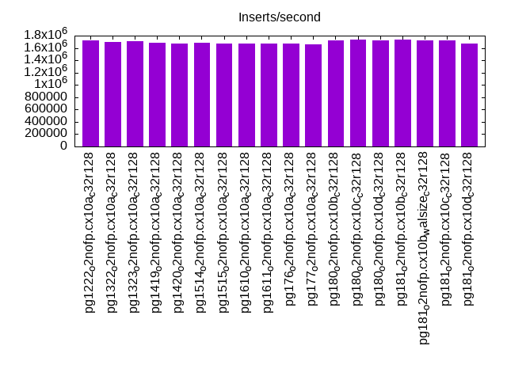
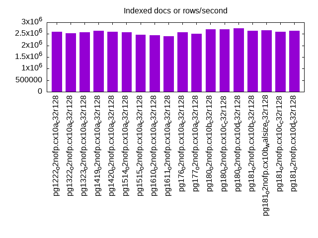
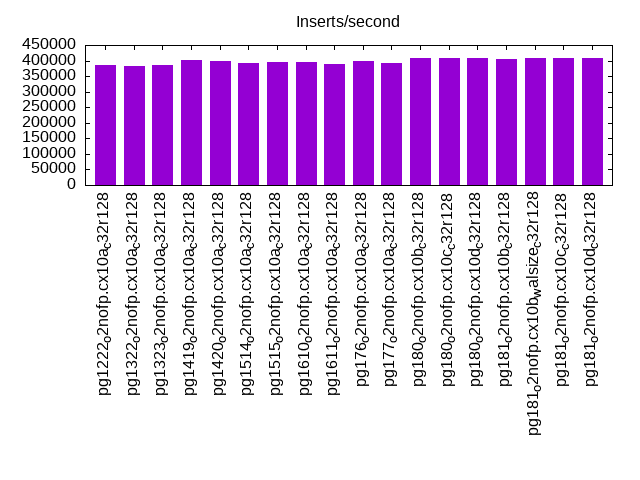
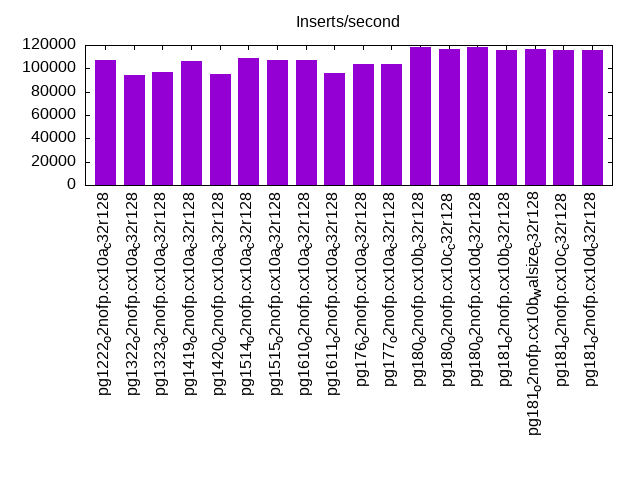
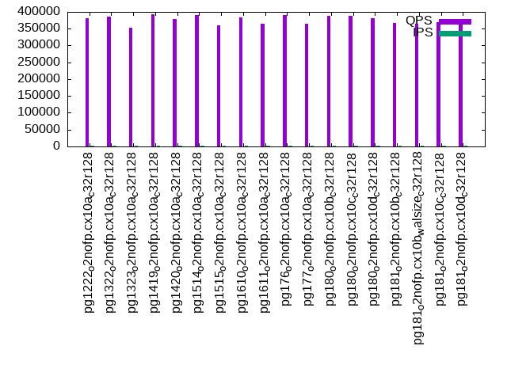
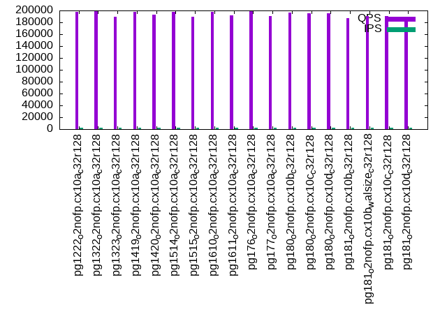
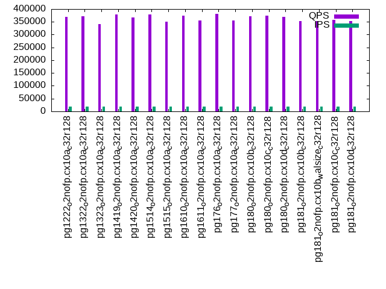
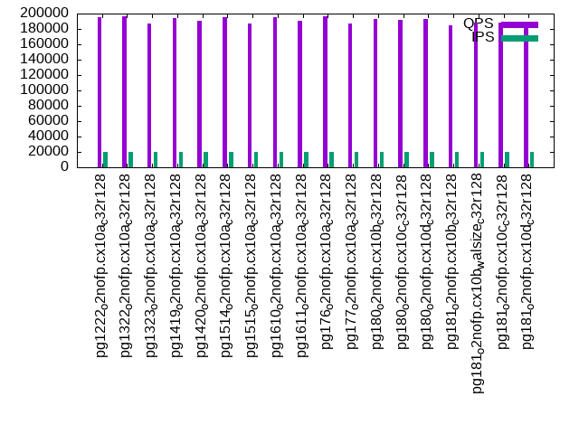

This is a report for the insert benchmark with 200M docs and 20 client(s). It is generated by scripts (bash, awk, sed) and Tufte might not be impressed. An overview of the insert benchmark is here and a short update is here. Below, by DBMS, I mean DBMS+version.config. An example is my8020.c10b40 where my means MySQL, 8020 is version 8.0.20 and c10b40 is the name for the configuration file.
The test server has 48 cores, 128G RAM and 2 NVMe devices setup with SW RAID. The benchmark was run with 20 clients and there were 1 or 3 connections per client (1 for queries or inserts without rate limits, 1+1 for rate limited inserts+deletes). It uses 12 tables with a table per client. It loads 10M rows per table without secondary indexes, creates 3 secondary indexes per table, then inserts 40m+10m rows per table with a delete per insert to avoid growing the table. It then does 6 read+write tests for 3600s each that do queries as fast as possible with 100,100,500,500,1000,1000 inserts/s and the same for deletes/s per client concurrent with the queries. The database is cached. Clients and the DBMS share one server.
The tested DBMS are:
The numbers are inserts/s for l.i0, l.i1 and l.i2, indexed docs (or rows) /s for l.x and queries/s for qr100, qp100 thru qr1000, qp1000" The values are the average rate over the entire test for inserts (IPS) and queries (QPS). The range of values for IPS and QPS is split into 3 parts: bottom 25%, middle 50%, top 25%. Values in the bottom 25% have a red background, values in the top 25% have a green background and values in the middle have no color. A gray background is used for values that can be ignored because the DBMS did not sustain the target insert rate. Red backgrounds are not used when the minimum value is within 80% of the max value.
| dbms | l.i0 | l.x | l.i1 | l.i2 | qr100 | qp100 | qr500 | qp500 | qr1000 | qp1000 |
|---|---|---|---|---|---|---|---|---|---|---|
| pg1222_o2nofp.cx10a_c32r128 | 1724138 | 2597404 | 384615 | 106838 | 381257 | 197134 | 373679 | 196399 | 368957 | 194906 |
| pg1322_o2nofp.cx10a_c32r128 | 1694915 | 2531647 | 381679 | 93985 | 386465 | 198428 | 376294 | 197622 | 372592 | 196267 |
| pg1323_o2nofp.cx10a_c32r128 | 1709402 | 2564104 | 384615 | 96946 | 352616 | 189507 | 346789 | 188208 | 342124 | 186676 |
| pg1419_o2nofp.cx10a_c32r128 | 1680672 | 2631580 | 400400 | 106101 | 392867 | 197066 | 382543 | 195955 | 379622 | 194703 |
| pg1420_o2nofp.cx10a_c32r128 | 1666667 | 2597404 | 398605 | 95238 | 378340 | 192993 | 368460 | 191950 | 366756 | 190800 |
| pg1514_o2nofp.cx10a_c32r128 | 1680672 | 2564104 | 391007 | 108932 | 390294 | 197930 | 381032 | 196784 | 377889 | 195444 |
| pg1515_o2nofp.cx10a_c32r128 | 1666667 | 2469137 | 395648 | 107066 | 360188 | 189561 | 353318 | 188414 | 351054 | 186865 |
| pg1610_o2nofp.cx10a_c32r128 | 1666667 | 2439026 | 394867 | 107354 | 383902 | 197787 | 375358 | 196420 | 373062 | 195114 |
| pg1611_o2nofp.cx10a_c32r128 | 1666667 | 2409640 | 389484 | 95831 | 363641 | 192349 | 358226 | 191676 | 354700 | 190167 |
| pg176_o2nofp.cx10a_c32r128 | 1666667 | 2564104 | 399002 | 103896 | 391524 | 198914 | 384058 | 196971 | 381271 | 196435 |
| pg177_o2nofp.cx10a_c32r128 | 1652892 | 2500001 | 391965 | 103413 | 365850 | 190048 | 357294 | 188399 | 354246 | 186922 |
| pg180_o2nofp.cx10b_c32r128 | 1724138 | 2702704 | 409416 | 117994 | 387164 | 195980 | 381764 | 194359 | 372721 | 192850 |
| pg180_o2nofp.cx10c_c32r128 | 1739130 | 2702704 | 408372 | 116891 | 388934 | 195158 | 382265 | 194313 | 373108 | 192322 |
| pg180_o2nofp.cx10d_c32r128 | 1724138 | 2739727 | 409416 | 118273 | 380880 | 195696 | 377523 | 194765 | 369649 | 193236 |
| pg181_o2nofp.cx10b_c32r128 | 1739130 | 2631580 | 406091 | 115741 | 367323 | 187489 | 360974 | 186654 | 353185 | 184865 |
| pg181_o2nofp.cx10b_walsize_c32r128 | 1724138 | 2666668 | 406918 | 116482 | 365277 | 191007 | 359443 | 189598 | 352902 | 188262 |
| pg181_o2nofp.cx10c_c32r128 | 1724138 | 2597404 | 407125 | 115808 | 369384 | 190875 | 363724 | 189742 | 357787 | 188077 |
| pg181_o2nofp.cx10d_c32r128 | 1666667 | 2631580 | 407747 | 115674 | 366143 | 189208 | 358980 | 187857 | 352529 | 186226 |
This table has relative throughput, throughput for the DBMS relative to the DBMS in the first line, using the absolute throughput from the previous table. Values less than 0.95 have a yellow background. Values greater than 1.05 have a blue background.
| dbms | l.i0 | l.x | l.i1 | l.i2 | qr100 | qp100 | qr500 | qp500 | qr1000 | qp1000 |
|---|---|---|---|---|---|---|---|---|---|---|
| pg1222_o2nofp.cx10a_c32r128 | 1.00 | 1.00 | 1.00 | 1.00 | 1.00 | 1.00 | 1.00 | 1.00 | 1.00 | 1.00 |
| pg1322_o2nofp.cx10a_c32r128 | 0.98 | 0.97 | 0.99 | 0.88 | 1.01 | 1.01 | 1.01 | 1.01 | 1.01 | 1.01 |
| pg1323_o2nofp.cx10a_c32r128 | 0.99 | 0.99 | 1.00 | 0.91 | 0.92 | 0.96 | 0.93 | 0.96 | 0.93 | 0.96 |
| pg1419_o2nofp.cx10a_c32r128 | 0.97 | 1.01 | 1.04 | 0.99 | 1.03 | 1.00 | 1.02 | 1.00 | 1.03 | 1.00 |
| pg1420_o2nofp.cx10a_c32r128 | 0.97 | 1.00 | 1.04 | 0.89 | 0.99 | 0.98 | 0.99 | 0.98 | 0.99 | 0.98 |
| pg1514_o2nofp.cx10a_c32r128 | 0.97 | 0.99 | 1.02 | 1.02 | 1.02 | 1.00 | 1.02 | 1.00 | 1.02 | 1.00 |
| pg1515_o2nofp.cx10a_c32r128 | 0.97 | 0.95 | 1.03 | 1.00 | 0.94 | 0.96 | 0.95 | 0.96 | 0.95 | 0.96 |
| pg1610_o2nofp.cx10a_c32r128 | 0.97 | 0.94 | 1.03 | 1.00 | 1.01 | 1.00 | 1.00 | 1.00 | 1.01 | 1.00 |
| pg1611_o2nofp.cx10a_c32r128 | 0.97 | 0.93 | 1.01 | 0.90 | 0.95 | 0.98 | 0.96 | 0.98 | 0.96 | 0.98 |
| pg176_o2nofp.cx10a_c32r128 | 0.97 | 0.99 | 1.04 | 0.97 | 1.03 | 1.01 | 1.03 | 1.00 | 1.03 | 1.01 |
| pg177_o2nofp.cx10a_c32r128 | 0.96 | 0.96 | 1.02 | 0.97 | 0.96 | 0.96 | 0.96 | 0.96 | 0.96 | 0.96 |
| pg180_o2nofp.cx10b_c32r128 | 1.00 | 1.04 | 1.06 | 1.10 | 1.02 | 0.99 | 1.02 | 0.99 | 1.01 | 0.99 |
| pg180_o2nofp.cx10c_c32r128 | 1.01 | 1.04 | 1.06 | 1.09 | 1.02 | 0.99 | 1.02 | 0.99 | 1.01 | 0.99 |
| pg180_o2nofp.cx10d_c32r128 | 1.00 | 1.05 | 1.06 | 1.11 | 1.00 | 0.99 | 1.01 | 0.99 | 1.00 | 0.99 |
| pg181_o2nofp.cx10b_c32r128 | 1.01 | 1.01 | 1.06 | 1.08 | 0.96 | 0.95 | 0.97 | 0.95 | 0.96 | 0.95 |
| pg181_o2nofp.cx10b_walsize_c32r128 | 1.00 | 1.03 | 1.06 | 1.09 | 0.96 | 0.97 | 0.96 | 0.97 | 0.96 | 0.97 |
| pg181_o2nofp.cx10c_c32r128 | 1.00 | 1.00 | 1.06 | 1.08 | 0.97 | 0.97 | 0.97 | 0.97 | 0.97 | 0.96 |
| pg181_o2nofp.cx10d_c32r128 | 0.97 | 1.01 | 1.06 | 1.08 | 0.96 | 0.96 | 0.96 | 0.96 | 0.96 | 0.96 |
This lists the average rate of inserts/s for the tests that do inserts concurrent with queries. For such tests the query rate is listed in the table above. The read+write tests are setup so that the insert rate should match the target rate every second. Cells that are not at least 95% of the target have a red background to indicate a failure to satisfy the target.
| dbms | qr100.L1 | qp100.L2 | qr500.L3 | qp500.L4 | qr1000.L5 | qp1000.L6 |
|---|---|---|---|---|---|---|
| pg1222_o2nofp.cx10a_c32r128 | 1987 | 1988 | 9939 | 9936 | 19868 | 19868 |
| pg1322_o2nofp.cx10a_c32r128 | 1988 | 1988 | 9936 | 9936 | 19868 | 19873 |
| pg1323_o2nofp.cx10a_c32r128 | 1987 | 1987 | 9936 | 9936 | 19868 | 19868 |
| pg1419_o2nofp.cx10a_c32r128 | 1988 | 1988 | 9936 | 9936 | 19868 | 19868 |
| pg1420_o2nofp.cx10a_c32r128 | 1987 | 1988 | 9939 | 9936 | 19868 | 19868 |
| pg1514_o2nofp.cx10a_c32r128 | 1987 | 1988 | 9936 | 9936 | 19873 | 19868 |
| pg1515_o2nofp.cx10a_c32r128 | 1988 | 1988 | 9936 | 9936 | 19873 | 19873 |
| pg1610_o2nofp.cx10a_c32r128 | 1987 | 1987 | 9936 | 9934 | 19868 | 19868 |
| pg1611_o2nofp.cx10a_c32r128 | 1987 | 1987 | 9936 | 9936 | 19868 | 19868 |
| pg176_o2nofp.cx10a_c32r128 | 1987 | 1987 | 9936 | 9936 | 19868 | 19868 |
| pg177_o2nofp.cx10a_c32r128 | 1987 | 1987 | 9934 | 9936 | 19868 | 19868 |
| pg180_o2nofp.cx10b_c32r128 | 1987 | 1987 | 9936 | 9936 | 19868 | 19868 |
| pg180_o2nofp.cx10c_c32r128 | 1987 | 1988 | 9939 | 9939 | 19873 | 19873 |
| pg180_o2nofp.cx10d_c32r128 | 1987 | 1987 | 9934 | 9936 | 19868 | 19868 |
| pg181_o2nofp.cx10b_c32r128 | 1987 | 1987 | 9934 | 9936 | 19868 | 19868 |
| pg181_o2nofp.cx10b_walsize_c32r128 | 1987 | 1987 | 9936 | 9936 | 19868 | 19873 |
| pg181_o2nofp.cx10c_c32r128 | 1988 | 1988 | 9939 | 9939 | 19878 | 19873 |
| pg181_o2nofp.cx10d_c32r128 | 1988 | 1988 | 9936 | 9939 | 19873 | 19868 |
| target | 2000 | 2000 | 10000 | 10000 | 20000 | 20000 |
l.i0: load without secondary indexes. Graphs for performance per 1-second interval are here.
Average throughput:
Insert response time histogram: each cell has the percentage of responses that take <= the time in the header and max is the max response time in seconds. For the max column values in the top 25% of the range have a red background and in the bottom 25% of the range have a green background. The red background is not used when the min value is within 80% of the max value.
| dbms | 256us | 1ms | 4ms | 16ms | 64ms | 256ms | 1s | 4s | 16s | gt | max |
|---|---|---|---|---|---|---|---|---|---|---|---|
| pg1222_o2nofp.cx10a_c32r128 | 96.059 | 3.897 | 0.020 | 0.004 | 0.018 | 0.002 | 0.389 | ||||
| pg1322_o2nofp.cx10a_c32r128 | 94.767 | 5.197 | 0.015 | 0.004 | 0.009 | 0.008 | 0.494 | ||||
| pg1323_o2nofp.cx10a_c32r128 | 94.636 | 5.326 | 0.016 | 0.002 | 0.018 | 0.002 | 0.462 | ||||
| pg1419_o2nofp.cx10a_c32r128 | 93.974 | 5.985 | 0.018 | 0.003 | 0.013 | 0.006 | 0.366 | ||||
| pg1420_o2nofp.cx10a_c32r128 | 92.085 | 7.874 | 0.015 | 0.009 | 0.013 | 0.004 | 0.527 | ||||
| pg1514_o2nofp.cx10a_c32r128 | 93.389 | 6.573 | 0.017 | 0.002 | 0.010 | 0.008 | 0.544 | ||||
| pg1515_o2nofp.cx10a_c32r128 | 93.852 | 6.111 | 0.019 | 0.001 | 0.008 | 0.009 | 0.842 | ||||
| pg1610_o2nofp.cx10a_c32r128 | 93.319 | 6.645 | 0.017 | 0.001 | 0.011 | 0.007 | 0.001 | 1.117 | |||
| pg1611_o2nofp.cx10a_c32r128 | 93.267 | 6.702 | 0.012 | 0.001 | 0.011 | 0.007 | 0.755 | ||||
| pg176_o2nofp.cx10a_c32r128 | 93.999 | 5.961 | 0.021 | 0.005 | 0.006 | 0.009 | 0.936 | ||||
| pg177_o2nofp.cx10a_c32r128 | 92.862 | 7.083 | 0.037 | 0.002 | 0.007 | 0.009 | 0.999 | ||||
| pg180_o2nofp.cx10b_c32r128 | 95.685 | 4.284 | 0.011 | 0.004 | 0.006 | 0.010 | 0.617 | ||||
| pg180_o2nofp.cx10c_c32r128 | 95.888 | 4.073 | 0.016 | 0.004 | 0.010 | 0.009 | 0.504 | ||||
| pg180_o2nofp.cx10d_c32r128 | 95.627 | 4.330 | 0.019 | 0.004 | 0.013 | 0.006 | 0.702 | ||||
| pg181_o2nofp.cx10b_c32r128 | 95.800 | 4.161 | 0.015 | 0.005 | 0.012 | 0.007 | 0.412 | ||||
| pg181_o2nofp.cx10b_walsize_c32r128 | 96.039 | 3.920 | 0.021 | 0.004 | 0.007 | 0.009 | 0.706 | ||||
| pg181_o2nofp.cx10c_c32r128 | 96.037 | 3.929 | 0.016 | 0.001 | 0.006 | 0.011 | 0.619 | ||||
| pg181_o2nofp.cx10d_c32r128 | 95.345 | 4.608 | 0.030 | nonzero | 0.007 | 0.008 | 0.001 | 1.127 |
Performance metrics for the DBMS listed above. Some are normalized by throughput, others are not. Legend for results is here.
ips qps rps rmbps wps wmbps rpq rkbpq wpi wkbpi csps cpups cspq cpupq dbgb1 dbgb2 rss maxop p50 p99 tag 1724138 0 3 0.0 6888.2 725.1 0.000 0.000 0.004 0.431 242515 47.0 0.141 13 19.1 51.6 1.8 0.389 115577 58892 pg1222_o2nofp.cx10a_c32r128 1694915 0 3 0.0 6678.5 702.9 0.000 0.000 0.004 0.425 247799 45.7 0.146 13 19.1 51.7 6.7 0.494 114876 42667 pg1322_o2nofp.cx10a_c32r128 1709402 0 4 0.0 6935.8 729.3 0.000 0.000 0.004 0.437 261605 47.0 0.153 13 19.1 51.7 1.9 0.462 113403 53643 pg1323_o2nofp.cx10a_c32r128 1680672 0 2 0.0 6684.4 705.6 0.000 0.000 0.004 0.430 251956 46.0 0.150 13 19.1 51.7 1.8 0.366 112279 56839 pg1419_o2nofp.cx10a_c32r128 1666667 0 1 0.0 6673.1 703.9 0.000 0.000 0.004 0.432 281636 46.1 0.169 13 19.1 51.7 6.5 0.527 110681 52559 pg1420_o2nofp.cx10a_c32r128 1680672 0 0 0.0 6625.4 700.5 0.000 0.000 0.004 0.427 258586 45.7 0.154 13 19.1 51.7 1.9 0.544 112079 46650 pg1514_o2nofp.cx10a_c32r128 1666667 0 3 0.0 6672.6 703.9 0.000 0.000 0.004 0.432 257177 45.6 0.154 13 19.1 51.7 1.9 0.842 112466 48246 pg1515_o2nofp.cx10a_c32r128 1666667 0 4 0.0 6664.7 706.3 0.000 0.000 0.004 0.434 266005 45.7 0.160 13 19.1 51.7 1.9 1.117 110961 35362 pg1610_o2nofp.cx10a_c32r128 1666667 0 4 0.0 6620.4 701.9 0.000 0.000 0.004 0.431 265641 45.7 0.159 13 19.1 51.7 3.1 0.755 111080 34363 pg1611_o2nofp.cx10a_c32r128 1666667 0 3 0.0 6633.8 699.8 0.000 0.000 0.004 0.430 275537 45.0 0.165 13 19.1 51.7 0.5 0.936 113978 16787 pg176_o2nofp.cx10a_c32r128 1652892 0 4 0.0 6617.2 705.5 0.000 0.000 0.004 0.437 281310 45.2 0.170 13 19.1 51.7 0.5 0.999 110881 19479 pg177_o2nofp.cx10a_c32r128 1724138 0 1 0.0 6850.4 720.3 0.000 0.000 0.004 0.428 261514 46.4 0.152 13 19.1 51.7 14.1 0.617 116010 41055 pg180_o2nofp.cx10b_c32r128 1739130 0 3 0.0 6850.5 725.7 0.000 0.000 0.004 0.427 258592 46.3 0.149 13 19.1 51.7 13.1 0.504 117174 42354 pg180_o2nofp.cx10c_c32r128 1724138 0 1 0.0 6851.6 724.8 0.000 0.000 0.004 0.430 265580 46.3 0.154 13 19.1 51.7 0.4 0.702 115676 44952 pg180_o2nofp.cx10d_c32r128 1739130 0 4 0.0 6939.6 732.0 0.000 0.000 0.004 0.431 263133 46.5 0.151 13 19.1 51.7 0.4 0.412 116175 55241 pg181_o2nofp.cx10b_c32r128 1724138 0 3 0.0 6846.3 721.2 0.000 0.000 0.004 0.428 257505 46.2 0.149 13 19.1 51.7 0.6 0.706 116333 38985 pg181_o2nofp.cx10b_walsize_c32r128 1724138 0 4 0.0 6895.1 731.1 0.000 0.000 0.004 0.434 258652 46.1 0.150 13 19.1 51.7 13.9 0.619 116375 21677 pg181_o2nofp.cx10c_c32r128 1666667 0 3 0.0 6684.2 706.5 0.000 0.000 0.004 0.434 249697 44.7 0.150 13 19.1 51.7 12.0 1.127 114777 16587 pg181_o2nofp.cx10d_c32r128
Average values from iostat.
r/s rkB/s rrqm/s %rrqm r_await rareq-s w/s wkB/s wrqm/s %wrqm w_await wareq-s d/s dkB/s drqm/s %drqm d_await dareq-s f/s f_await aqu-sz %util 0.113 0.452 0.000 0.000 0.048 0.522 6001.2 742599 904.2 12.28 1.607 122.7 0.000 0.000 0.000 0.000 0.000 0.000 0.000 0.000 10.88 55.24 pg1222_o2nofp.cx10a_c32r128 0.008 0.033 0.000 0.000 0.000 0.167 5816.1 719845 879.7 12.28 2.762 122.9 0.000 0.000 0.000 0.000 0.000 0.000 0.000 0.000 17.98 54.68 pg1322_o2nofp.cx10a_c32r128 0.130 1.322 0.000 0.000 0.041 3.217 6038.9 746911 913.9 12.41 2.269 122.7 0.000 0.000 0.000 0.000 0.000 0.000 0.000 0.000 16.56 56.42 pg1323_o2nofp.cx10a_c32r128 0.325 1.300 0.000 0.000 0.132 1.500 5860.7 722557 840.8 11.90 1.660 122.5 0.000 0.000 0.000 0.000 0.000 0.000 0.000 0.000 11.08 58.61 pg1419_o2nofp.cx10a_c32r128 0.325 1.633 0.000 0.000 0.076 2.778 5856.7 720815 833.3 11.77 1.702 122.2 0.000 0.000 0.000 0.000 0.000 0.000 0.000 0.000 11.55 60.38 pg1420_o2nofp.cx10a_c32r128 0.042 0.200 0.000 0.000 0.000 0.375 5803.0 717362 839.0 12.08 1.091 122.7 0.000 0.000 0.000 0.000 0.000 0.000 0.000 0.000 6.788 57.83 pg1514_o2nofp.cx10a_c32r128 0.175 0.767 0.000 0.000 0.158 1.333 5829.5 720856 855.2 12.03 2.357 122.6 0.000 0.000 0.000 0.000 0.000 0.000 0.000 0.000 16.65 58.64 pg1515_o2nofp.cx10a_c32r128 0.967 4.200 0.000 0.000 0.257 2.590 5857.8 723348 823.5 11.64 1.655 122.5 0.000 0.000 0.000 0.000 0.000 0.000 0.000 0.000 11.81 59.91 pg1610_o2nofp.cx10a_c32r128 0.758 3.467 0.108 3.869 0.177 3.833 5819.7 718777 816.8 11.54 1.520 122.7 0.000 0.000 0.000 0.000 0.000 0.000 0.000 0.000 9.813 59.09 pg1611_o2nofp.cx10a_c32r128 0.117 0.467 0.000 0.000 0.074 0.667 5781.2 716671 869.0 12.32 3.544 123.1 0.000 0.000 0.000 0.000 0.000 0.000 0.000 0.000 22.64 57.76 pg176_o2nofp.cx10a_c32r128 0.892 7.800 1.000 3.906 0.231 5.271 5824.6 722543 808.4 11.64 1.905 123.1 0.000 0.000 0.000 0.000 0.000 0.000 0.000 0.000 11.45 58.12 pg177_o2nofp.cx10a_c32r128 0.200 4.870 0.243 3.382 0.077 3.761 5957.9 737601 908.7 12.29 1.762 123.0 0.000 0.000 0.000 0.000 0.000 0.000 0.000 0.000 13.08 57.05 pg180_o2nofp.cx10b_c32r128 0.070 0.278 0.000 0.000 0.033 0.348 6001.0 743132 865.7 11.62 2.422 123.0 0.000 0.000 0.000 0.000 0.000 0.000 0.000 0.000 17.18 56.89 pg180_o2nofp.cx10c_c32r128 0.078 1.774 0.365 3.885 0.009 1.983 5998.2 742299 869.8 11.80 2.601 122.7 0.000 0.000 0.000 0.000 0.000 0.000 0.000 0.000 18.60 57.29 pg180_o2nofp.cx10d_c32r128 0.217 0.904 0.000 0.000 0.110 1.101 6043.3 748679 901.7 12.17 2.471 123.0 0.000 0.000 0.000 0.000 0.000 0.000 0.000 0.000 17.01 57.43 pg181_o2nofp.cx10b_c32r128 0.391 4.660 0.000 0.000 0.153 3.777 5959.5 738524 902.6 12.24 0.989 122.8 0.000 0.000 0.000 0.000 0.000 0.000 0.000 0.000 6.778 56.12 pg181_o2nofp.cx10b_walsize_c32r128 0.835 5.008 0.357 3.875 0.189 4.296 6030.7 747781 872.8 11.96 1.143 123.1 0.000 0.000 0.000 0.000 0.000 0.000 0.000 0.000 7.160 56.91 pg181_o2nofp.cx10c_c32r128 0.300 1.200 0.000 0.000 0.145 1.000 5829.6 723531 866.1 11.96 2.977 123.3 0.000 0.000 0.000 0.000 0.000 0.000 0.000 0.000 20.30 57.06 pg181_o2nofp.cx10d_c32r128
l.x: create secondary indexes.
Average throughput:
Performance metrics for the DBMS listed above. Some are normalized by throughput, others are not. Legend for results is here.
ips qps rps rmbps wps wmbps rpq rkbpq wpi wkbpi csps cpups cspq cpupq dbgb1 dbgb2 rss maxop p50 p99 tag 2597404 0 4 0.0 6350.2 730.8 0.000 0.000 0.002 0.288 104583 17.6 0.040 3 38.4 88.5 6.9 0.042 NA NA pg1222_o2nofp.cx10a_c32r128 2531647 0 3 0.0 6134.3 708.3 0.000 0.000 0.002 0.286 98990 16.8 0.039 3 38.4 88.6 6.9 0.082 NA NA pg1322_o2nofp.cx10a_c32r128 2564104 0 4 0.0 6169.0 711.9 0.000 0.000 0.002 0.284 96915 16.9 0.038 3 38.4 88.6 6.9 0.037 NA NA pg1323_o2nofp.cx10a_c32r128 2631580 0 3 0.0 6488.0 748.7 0.000 0.000 0.002 0.291 101348 17.7 0.039 3 38.4 88.6 6.9 0.032 NA NA pg1419_o2nofp.cx10a_c32r128 2597404 0 2 0.0 6299.9 726.1 0.000 0.000 0.002 0.286 101631 17.6 0.039 3 38.4 88.6 6.9 0.028 NA NA pg1420_o2nofp.cx10a_c32r128 2564104 0 0 0.0 6220.1 717.6 0.000 0.000 0.002 0.287 105304 16.9 0.041 3 38.4 88.6 6.9 0.036 NA NA pg1514_o2nofp.cx10a_c32r128 2469137 0 4 0.0 6057.1 699.2 0.000 0.000 0.002 0.290 100757 15.8 0.041 3 38.4 88.6 6.9 0.048 NA NA pg1515_o2nofp.cx10a_c32r128 2439026 0 4 0.0 5844.3 673.6 0.000 0.000 0.002 0.283 100857 16.0 0.041 3 38.4 88.6 6.3 0.027 NA NA pg1610_o2nofp.cx10a_c32r128 2409640 0 4 0.0 5785.4 667.8 0.000 0.000 0.002 0.284 101620 15.9 0.042 3 38.4 88.6 6.9 0.032 NA NA pg1611_o2nofp.cx10a_c32r128 2564104 0 4 0.0 6390.6 743.0 0.000 0.000 0.002 0.297 39862 15.2 0.016 3 38.4 88.5 6.4 0.037 NA NA pg176_o2nofp.cx10a_c32r128 2500001 0 137 7.6 6314.4 731.1 0.000 0.003 0.003 0.299 40160 15.2 0.016 3 38.4 88.5 7.2 0.038 NA NA pg177_o2nofp.cx10a_c32r128 2702704 0 2 0.0 6885.7 802.3 0.000 0.000 0.003 0.304 41995 16.1 0.016 3 38.4 88.5 7.1 0.102 NA NA pg180_o2nofp.cx10b_c32r128 2702704 0 4 0.0 6904.3 800.4 0.000 0.000 0.003 0.303 40931 16.1 0.015 3 38.4 88.5 7.2 0.035 NA NA pg180_o2nofp.cx10c_c32r128 2739727 0 0 0.0 7151.6 829.0 0.000 0.000 0.003 0.310 42854 16.7 0.016 3 38.4 88.5 6.3 0.046 NA NA pg180_o2nofp.cx10d_c32r128 2631580 0 4 0.0 6928.7 804.6 0.000 0.000 0.003 0.313 42080 15.6 0.016 3 38.4 88.5 7.2 0.037 NA NA pg181_o2nofp.cx10b_c32r128 2666668 0 3 0.0 6969.6 808.1 0.000 0.000 0.003 0.310 42235 15.8 0.016 3 38.4 88.5 7.1 0.035 NA NA pg181_o2nofp.cx10b_walsize_c32r128 2597404 0 4 0.0 6695.1 778.5 0.000 0.000 0.003 0.307 41823 15.8 0.016 3 38.4 88.5 6.4 0.039 NA NA pg181_o2nofp.cx10c_c32r128 2631580 0 4 0.0 6648.0 770.7 0.000 0.000 0.003 0.300 43651 15.6 0.017 3 38.4 88.5 6.4 0.040 NA NA pg181_o2nofp.cx10d_c32r128
Average values from iostat.
r/s rkB/s rrqm/s %rrqm r_await rareq-s w/s wkB/s wrqm/s %wrqm w_await wareq-s d/s dkB/s drqm/s %drqm d_await dareq-s f/s f_await aqu-sz %util 0.160 0.640 0.000 0.000 0.024 0.533 5946.6 748357 419.0 6.723 4.406 125.7 0.000 0.000 0.000 0.000 0.000 0.000 0.000 0.000 28.30 35.64 pg1222_o2nofp.cx10a_c32r128 0.075 0.300 0.000 0.000 0.025 0.500 5760.1 725357 389.7 6.599 6.014 125.8 0.000 0.000 0.000 0.000 0.000 0.000 0.000 0.000 35.22 36.45 pg1322_o2nofp.cx10a_c32r128 0.213 1.000 0.000 0.000 0.146 2.250 5790.2 729090 395.1 6.579 5.164 125.8 0.000 0.000 0.000 0.000 0.000 0.000 0.000 0.000 30.37 35.06 pg1323_o2nofp.cx10a_c32r128 0.213 0.853 0.000 0.000 0.132 1.067 6088.9 766764 414.8 6.482 5.020 125.9 0.000 0.000 0.000 0.000 0.000 0.000 0.000 0.000 31.34 35.88 pg1419_o2nofp.cx10a_c32r128 0.027 0.107 0.000 0.000 0.067 0.533 5910.5 743621 406.2 6.889 5.073 125.5 0.000 0.000 0.000 0.000 0.000 0.000 0.000 0.000 32.03 35.42 pg1420_o2nofp.cx10a_c32r128 0.147 1.547 0.000 0.000 0.009 2.533 5833.9 734920 401.8 11.01 4.603 119.1 0.000 0.000 0.000 0.000 0.000 0.000 0.000 0.000 30.06 35.29 pg1514_o2nofp.cx10a_c32r128 0.987 3.950 0.000 0.000 0.511 3.750 5668.4 714075 388.0 6.594 5.408 125.7 0.000 0.000 0.000 0.000 0.000 0.000 0.000 0.000 32.93 37.95 pg1515_o2nofp.cx10a_c32r128 0.787 3.250 0.000 0.000 0.239 2.333 5478.7 689846 380.4 6.930 6.657 125.7 0.000 0.000 0.000 0.000 0.000 0.000 0.000 0.000 41.33 40.18 pg1610_o2nofp.cx10a_c32r128 0.612 2.500 0.000 0.000 0.205 2.333 5429.8 683874 371.1 6.644 7.455 125.9 0.000 0.000 0.000 0.000 0.000 0.000 0.000 0.000 39.47 40.63 pg1611_o2nofp.cx10a_c32r128 0.550 2.200 0.000 0.000 0.101 1.000 6029.8 760876 374.5 6.805 4.438 125.8 0.000 0.000 0.000 0.000 0.000 0.000 0.000 0.000 34.95 44.94 pg176_o2nofp.cx10a_c32r128 36.51 2082.3 0.713 2.509 0.117 10.35 5938.0 748672 389.8 10.33 4.952 118.7 0.000 0.000 0.000 0.000 0.000 0.000 0.000 0.000 51.63 46.99 pg177_o2nofp.cx10a_c32r128 0.387 1.547 0.000 0.000 0.068 1.067 6510.4 821588 389.4 6.521 3.057 125.8 0.000 0.000 0.000 0.000 0.000 0.000 0.000 0.000 22.50 40.05 pg180_o2nofp.cx10b_c32r128 0.120 0.480 0.000 0.000 0.035 0.800 6498.3 819654 419.5 6.915 4.355 125.7 0.000 0.000 0.000 0.000 0.000 0.000 0.000 0.000 40.03 41.98 pg180_o2nofp.cx10c_c32r128 0.000 0.000 0.000 0.000 0.000 0.000 6731.6 848900 433.6 7.311 3.980 125.6 0.000 0.000 0.000 0.000 0.000 0.000 0.000 0.000 40.70 41.50 pg180_o2nofp.cx10d_c32r128 0.067 0.267 0.000 0.000 0.027 0.267 6527.1 823990 416.8 6.722 5.163 126.0 0.000 0.000 0.000 0.000 0.000 0.000 0.000 0.000 42.36 44.16 pg181_o2nofp.cx10b_c32r128 1.227 4.907 0.000 0.000 0.121 1.067 6559.4 827607 425.3 7.003 2.855 125.8 0.000 0.000 0.000 0.000 0.000 0.000 0.000 0.000 27.63 42.12 pg181_o2nofp.cx10b_walsize_c32r128 1.093 4.373 0.000 0.000 0.132 1.067 6364.0 803234 394.7 7.142 3.385 125.7 0.000 0.000 0.000 0.000 0.000 0.000 0.000 0.000 24.95 42.21 pg181_o2nofp.cx10c_c32r128 1.400 5.600 0.000 0.000 0.112 2.133 6342.6 800266 410.7 7.139 2.083 125.7 0.000 0.000 0.000 0.000 0.000 0.000 0.000 0.000 18.46 42.49 pg181_o2nofp.cx10d_c32r128
l.i1: continue load after secondary indexes created with 50 inserts per transaction. Graphs for performance per 1-second interval are here.
Average throughput:
Insert response time histogram: each cell has the percentage of responses that take <= the time in the header and max is the max response time in seconds. For the max column values in the top 25% of the range have a red background and in the bottom 25% of the range have a green background. The red background is not used when the min value is within 80% of the max value.
| dbms | 256us | 1ms | 4ms | 16ms | 64ms | 256ms | 1s | 4s | 16s | gt | max |
|---|---|---|---|---|---|---|---|---|---|---|---|
| pg1222_o2nofp.cx10a_c32r128 | 0.787 | 90.267 | 8.419 | 0.525 | 0.002 | nonzero | 0.295 | ||||
| pg1322_o2nofp.cx10a_c32r128 | 0.817 | 89.909 | 8.823 | 0.449 | 0.003 | 0.248 | |||||
| pg1323_o2nofp.cx10a_c32r128 | 1.134 | 89.955 | 8.479 | 0.430 | 0.002 | nonzero | 0.257 | ||||
| pg1419_o2nofp.cx10a_c32r128 | 1.174 | 91.278 | 7.089 | 0.457 | 0.002 | 0.187 | |||||
| pg1420_o2nofp.cx10a_c32r128 | 1.499 | 90.957 | 7.085 | 0.457 | 0.001 | nonzero | 0.479 | ||||
| pg1514_o2nofp.cx10a_c32r128 | 1.175 | 90.923 | 7.423 | 0.474 | 0.005 | nonzero | 0.558 | ||||
| pg1515_o2nofp.cx10a_c32r128 | 1.053 | 91.307 | 7.158 | 0.479 | 0.003 | nonzero | 0.562 | ||||
| pg1610_o2nofp.cx10a_c32r128 | 1.504 | 90.788 | 7.242 | 0.464 | 0.002 | nonzero | 0.343 | ||||
| pg1611_o2nofp.cx10a_c32r128 | 1.733 | 90.489 | 7.318 | 0.458 | 0.002 | nonzero | 0.323 | ||||
| pg176_o2nofp.cx10a_c32r128 | 2.446 | 89.329 | 7.742 | 0.480 | 0.003 | 0.001 | 0.897 | ||||
| pg177_o2nofp.cx10a_c32r128 | 1.780 | 89.976 | 7.768 | 0.472 | 0.002 | 0.001 | 0.811 | ||||
| pg180_o2nofp.cx10b_c32r128 | 2.092 | 90.444 | 6.999 | 0.463 | 0.002 | 0.001 | 0.766 | ||||
| pg180_o2nofp.cx10c_c32r128 | 2.551 | 89.830 | 7.148 | 0.468 | 0.003 | 0.001 | 0.634 | ||||
| pg180_o2nofp.cx10d_c32r128 | 2.359 | 90.104 | 7.077 | 0.457 | 0.003 | nonzero | 0.669 | ||||
| pg181_o2nofp.cx10b_c32r128 | 1.788 | 90.473 | 7.262 | 0.472 | 0.003 | 0.001 | nonzero | 1.052 | |||
| pg181_o2nofp.cx10b_walsize_c32r128 | 1.981 | 90.498 | 7.035 | 0.484 | 0.002 | 0.001 | 0.733 | ||||
| pg181_o2nofp.cx10c_c32r128 | 1.690 | 90.473 | 7.347 | 0.487 | 0.003 | 0.001 | 0.701 | ||||
| pg181_o2nofp.cx10d_c32r128 | 1.872 | 90.420 | 7.255 | 0.449 | 0.003 | 0.001 | nonzero | 1.098 |
Delete response time histogram: each cell has the percentage of responses that take <= the time in the header and max is the max response time in seconds. For the max column values in the top 25% of the range have a red background and in the bottom 25% of the range have a green background. The red background is not used when the min value is within 80% of the max value.
| dbms | 256us | 1ms | 4ms | 16ms | 64ms | 256ms | 1s | 4s | 16s | gt | max |
|---|---|---|---|---|---|---|---|---|---|---|---|
| pg1222_o2nofp.cx10a_c32r128 | 18.524 | 78.049 | 3.172 | 0.254 | 0.002 | nonzero | 0.292 | ||||
| pg1322_o2nofp.cx10a_c32r128 | 16.072 | 80.273 | 3.466 | 0.187 | 0.002 | nonzero | 0.430 | ||||
| pg1323_o2nofp.cx10a_c32r128 | 15.499 | 80.855 | 3.453 | 0.192 | 0.002 | nonzero | 0.259 | ||||
| pg1419_o2nofp.cx10a_c32r128 | 18.653 | 78.439 | 2.712 | 0.195 | 0.002 | 0.187 | |||||
| pg1420_o2nofp.cx10a_c32r128 | 15.543 | 81.249 | 3.002 | 0.206 | 0.001 | nonzero | 0.478 | ||||
| pg1514_o2nofp.cx10a_c32r128 | 18.706 | 78.159 | 2.934 | 0.199 | 0.002 | nonzero | 0.558 | ||||
| pg1515_o2nofp.cx10a_c32r128 | 18.633 | 78.321 | 2.840 | 0.204 | 0.002 | nonzero | 0.537 | ||||
| pg1610_o2nofp.cx10a_c32r128 | 19.527 | 77.148 | 3.131 | 0.193 | 0.001 | nonzero | 0.323 | ||||
| pg1611_o2nofp.cx10a_c32r128 | 15.203 | 80.961 | 3.635 | 0.199 | 0.002 | nonzero | 0.324 | ||||
| pg176_o2nofp.cx10a_c32r128 | 20.699 | 75.961 | 3.126 | 0.212 | 0.002 | nonzero | 0.897 | ||||
| pg177_o2nofp.cx10a_c32r128 | 19.193 | 77.380 | 3.217 | 0.208 | 0.002 | 0.001 | 0.809 | ||||
| pg180_o2nofp.cx10b_c32r128 | 20.842 | 76.019 | 2.936 | 0.201 | 0.001 | nonzero | 0.765 | ||||
| pg180_o2nofp.cx10c_c32r128 | 20.471 | 76.264 | 3.062 | 0.200 | 0.002 | nonzero | 0.596 | ||||
| pg180_o2nofp.cx10d_c32r128 | 20.680 | 76.158 | 2.959 | 0.201 | 0.002 | nonzero | 0.669 | ||||
| pg181_o2nofp.cx10b_c32r128 | 19.438 | 77.351 | 3.010 | 0.199 | 0.002 | 0.001 | 0.686 | ||||
| pg181_o2nofp.cx10b_walsize_c32r128 | 19.819 | 77.008 | 2.961 | 0.211 | 0.001 | 0.001 | 0.730 | ||||
| pg181_o2nofp.cx10c_c32r128 | 19.431 | 77.466 | 2.884 | 0.215 | 0.002 | nonzero | 0.699 | ||||
| pg181_o2nofp.cx10d_c32r128 | 19.473 | 77.253 | 3.076 | 0.195 | 0.002 | 0.001 | nonzero | 1.094 |
Performance metrics for the DBMS listed above. Some are normalized by throughput, others are not. Legend for results is here.
ips qps rps rmbps wps wmbps rpq rkbpq wpi wkbpi csps cpups cspq cpupq dbgb1 dbgb2 rss maxop p50 p99 tag 384615 0 218 4.0 6347.9 584.7 0.001 0.011 0.017 1.557 268340 55.8 0.698 70 60.9 157.0 57.1 0.295 21127 4146 pg1222_o2nofp.cx10a_c32r128 381679 0 354 2.9 6088.2 563.8 0.001 0.008 0.016 1.512 265215 57.1 0.695 72 60.7 156.7 54.9 0.248 21177 4195 pg1322_o2nofp.cx10a_c32r128 384615 0 292 2.7 6133.3 567.6 0.001 0.007 0.016 1.511 253909 57.2 0.660 71 60.6 156.6 42.0 0.257 21388 4196 pg1323_o2nofp.cx10a_c32r128 400400 0 376 2.4 6206.7 581.0 0.001 0.006 0.016 1.486 289373 55.4 0.723 66 58.7 154.7 54.8 0.187 22076 4096 pg1419_o2nofp.cx10a_c32r128 398605 0 390 2.3 6157.7 576.4 0.001 0.006 0.015 1.481 291932 56.1 0.732 68 58.4 154.4 42.9 0.479 22775 4245 pg1420_o2nofp.cx10a_c32r128 391007 0 355 2.4 6050.9 567.5 0.001 0.006 0.015 1.486 284858 55.0 0.729 68 58.7 154.7 39.8 0.558 21769 4046 pg1514_o2nofp.cx10a_c32r128 395648 0 446 2.1 6113.2 573.0 0.001 0.005 0.015 1.483 286858 55.1 0.725 67 58.6 154.6 47.3 0.562 22298 3996 pg1515_o2nofp.cx10a_c32r128 394867 0 259 1.1 6000.9 568.4 0.001 0.003 0.015 1.474 291951 55.0 0.739 67 58.3 154.4 38.0 0.343 21926 3946 pg1610_o2nofp.cx10a_c32r128 389484 0 260 1.2 5893.6 559.2 0.001 0.003 0.015 1.470 271406 56.2 0.697 69 58.1 154.2 51.7 0.323 21869 3946 pg1611_o2nofp.cx10a_c32r128 399002 0 242 1.1 6064.5 576.0 0.001 0.003 0.015 1.478 257463 53.6 0.645 64 58.2 154.3 11.3 0.897 22775 3396 pg176_o2nofp.cx10a_c32r128 391965 0 270 1.2 5950.7 565.0 0.001 0.003 0.015 1.476 252926 53.7 0.645 66 58.2 154.3 14.7 0.811 22725 3646 pg177_o2nofp.cx10a_c32r128 409416 0 34 0.2 6244.6 591.4 0.000 0.000 0.015 1.479 252541 54.8 0.617 64 58.4 154.5 43.5 0.766 23275 3646 pg180_o2nofp.cx10b_c32r128 408372 0 41 0.2 6231.9 590.9 0.000 0.001 0.015 1.482 261323 54.8 0.640 64 58.4 154.5 38.8 0.634 23165 3496 pg180_o2nofp.cx10c_c32r128 409416 0 46 0.3 6259.0 593.4 0.000 0.001 0.015 1.484 252102 54.9 0.616 64 58.5 154.6 45.8 0.669 23041 3596 pg180_o2nofp.cx10d_c32r128 406091 0 25 0.1 6195.3 587.1 0.000 0.000 0.015 1.480 250964 55.3 0.618 65 58.2 154.3 40.5 1.052 23025 3246 pg181_o2nofp.cx10b_c32r128 406918 0 36 0.2 6216.6 588.5 0.000 0.000 0.015 1.481 250007 55.0 0.614 65 58.3 154.3 39.6 0.733 23143 3446 pg181_o2nofp.cx10b_walsize_c32r128 407125 0 46 0.2 6188.8 587.3 0.000 0.001 0.015 1.477 254185 55.0 0.624 65 58.2 154.3 32.5 0.701 22874 3498 pg181_o2nofp.cx10c_c32r128 407747 0 52 0.3 6234.3 591.5 0.000 0.001 0.015 1.486 250342 55.4 0.614 65 58.3 154.4 45.2 1.098 22975 3396 pg181_o2nofp.cx10d_c32r128
Average values from iostat.
r/s rkB/s rrqm/s %rrqm r_await rareq-s w/s wkB/s wrqm/s %wrqm w_await wareq-s d/s dkB/s drqm/s %drqm d_await dareq-s f/s f_await aqu-sz %util 101.8 1772.8 0.059 1.295 0.039 3.585 6075.4 599081 357.6 4.997 0.163 98.10 0.000 0.000 0.000 0.000 0.000 0.000 0.000 0.000 1.217 95.75 pg1222_o2nofp.cx10a_c32r128 167.5 1292.0 0.051 2.508 0.059 3.853 5839.9 577484 299.1 4.543 0.175 98.33 0.000 0.000 0.000 0.000 0.000 0.000 0.000 0.000 1.263 95.22 pg1322_o2nofp.cx10a_c32r128 139.5 1206.2 0.030 0.635 0.061 4.425 5881.3 581331 290.7 4.274 0.193 98.24 0.000 0.000 0.000 0.000 0.000 0.000 0.000 0.000 1.333 95.08 pg1323_o2nofp.cx10a_c32r128 178.4 989.1 0.018 0.497 0.036 2.188 6013.1 595098 233.3 2.995 0.165 98.86 0.000 0.000 0.000 0.000 0.000 0.000 0.000 0.000 1.185 95.72 pg1419_o2nofp.cx10a_c32r128 187.5 1054.8 0.024 0.954 0.054 3.774 5968.6 590431 230.7 2.956 0.163 98.77 0.000 0.000 0.000 0.000 0.000 0.000 0.000 0.000 1.182 96.01 pg1420_o2nofp.cx10a_c32r128 171.2 1113.2 0.020 0.722 0.063 4.183 5860.5 581284 230.3 2.985 0.163 98.97 0.000 0.000 0.000 0.000 0.000 0.000 0.000 0.000 1.153 94.81 pg1514_o2nofp.cx10a_c32r128 216.3 1015.1 0.054 0.747 0.063 3.735 5916.9 586932 235.1 3.061 0.202 99.12 0.000 0.000 0.000 0.000 0.000 0.000 0.000 0.000 1.426 95.63 pg1515_o2nofp.cx10a_c32r128 125.5 569.7 0.022 0.763 0.049 3.455 5814.0 582212 226.3 2.961 0.201 100.1 0.000 0.000 0.000 0.000 0.000 0.000 0.000 0.000 1.378 95.49 pg1610_o2nofp.cx10a_c32r128 125.4 568.3 0.017 0.393 0.046 2.709 5709.9 572740 222.0 2.969 0.214 100.3 0.000 0.000 0.000 0.000 0.000 0.000 0.000 0.000 1.429 95.21 pg1611_o2nofp.cx10a_c32r128 116.4 530.9 0.016 0.659 0.050 2.873 5875.2 589941 228.4 2.913 0.270 100.1 0.000 0.000 0.000 0.000 0.000 0.000 0.000 0.000 1.858 94.36 pg176_o2nofp.cx10a_c32r128 126.6 582.2 0.040 0.798 0.034 1.577 5761.3 578672 227.9 2.988 0.278 100.1 0.000 0.000 0.000 0.000 0.000 0.000 0.000 0.000 1.926 93.60 pg177_o2nofp.cx10a_c32r128 14.34 64.75 0.036 0.774 0.025 1.401 6044.2 605739 239.5 2.933 0.258 100.2 0.000 0.000 0.000 0.000 0.000 0.000 0.000 0.000 1.905 94.96 pg180_o2nofp.cx10b_c32r128 17.35 100.9 0.169 0.976 0.040 2.703 6039.3 605233 232.5 2.945 0.259 100.0 0.000 0.000 0.000 0.000 0.000 0.000 0.000 0.000 1.828 95.10 pg180_o2nofp.cx10c_c32r128 20.62 121.6 0.135 0.978 0.057 4.922 6065.7 607810 233.7 2.865 0.246 99.99 0.000 0.000 0.000 0.000 0.000 0.000 0.000 0.000 1.858 94.98 pg180_o2nofp.cx10d_c32r128 11.50 56.03 0.025 0.705 0.044 1.166 5999.6 601368 236.0 2.919 0.192 100.2 0.000 0.000 0.000 0.000 0.000 0.000 0.000 0.000 1.335 95.30 pg181_o2nofp.cx10b_c32r128 14.90 68.64 0.008 0.280 0.026 1.052 6022.8 602772 232.5 3.017 0.290 99.84 0.000 0.000 0.000 0.000 0.000 0.000 0.000 0.000 2.082 94.75 pg181_o2nofp.cx10b_walsize_c32r128 23.44 118.4 0.013 0.352 0.042 0.825 5997.9 601572 230.7 2.903 0.214 100.1 0.000 0.000 0.000 0.000 0.000 0.000 0.000 0.000 1.489 95.28 pg181_o2nofp.cx10c_c32r128 24.21 141.1 0.154 1.328 0.055 3.158 6038.2 605890 234.9 2.915 0.288 100.3 0.000 0.000 0.000 0.000 0.000 0.000 0.000 0.000 2.017 95.56 pg181_o2nofp.cx10d_c32r128
l.i2: continue load after secondary indexes created with 5 inserts per transaction. Graphs for performance per 1-second interval are here.
Average throughput:
Insert response time histogram: each cell has the percentage of responses that take <= the time in the header and max is the max response time in seconds. For the max column values in the top 25% of the range have a red background and in the bottom 25% of the range have a green background. The red background is not used when the min value is within 80% of the max value.
| dbms | 256us | 1ms | 4ms | 16ms | 64ms | 256ms | 1s | 4s | 16s | gt | max |
|---|---|---|---|---|---|---|---|---|---|---|---|
| pg1222_o2nofp.cx10a_c32r128 | 86.403 | 12.862 | 0.713 | 0.021 | nonzero | nonzero | 0.118 | ||||
| pg1322_o2nofp.cx10a_c32r128 | 88.786 | 10.704 | 0.497 | 0.012 | nonzero | nonzero | 0.095 | ||||
| pg1323_o2nofp.cx10a_c32r128 | 86.259 | 13.141 | 0.587 | 0.013 | nonzero | nonzero | 0.089 | ||||
| pg1419_o2nofp.cx10a_c32r128 | 87.575 | 11.783 | 0.621 | 0.020 | 0.001 | nonzero | 0.093 | ||||
| pg1420_o2nofp.cx10a_c32r128 | 87.534 | 11.965 | 0.484 | 0.017 | nonzero | nonzero | 0.086 | ||||
| pg1514_o2nofp.cx10a_c32r128 | 86.230 | 13.061 | 0.687 | 0.022 | nonzero | nonzero | 0.091 | ||||
| pg1515_o2nofp.cx10a_c32r128 | 83.334 | 15.882 | 0.755 | 0.028 | nonzero | nonzero | 0.091 | ||||
| pg1610_o2nofp.cx10a_c32r128 | 85.276 | 13.989 | 0.706 | 0.029 | nonzero | nonzero | 0.092 | ||||
| pg1611_o2nofp.cx10a_c32r128 | 84.667 | 14.786 | 0.532 | 0.015 | nonzero | nonzero | 0.088 | ||||
| pg176_o2nofp.cx10a_c32r128 | 93.216 | 6.580 | 0.188 | 0.015 | nonzero | nonzero | 0.099 | ||||
| pg177_o2nofp.cx10a_c32r128 | 90.919 | 8.875 | 0.198 | 0.009 | nonzero | nonzero | 0.096 | ||||
| pg180_o2nofp.cx10b_c32r128 | 91.061 | 8.677 | 0.237 | 0.024 | nonzero | nonzero | 0.092 | ||||
| pg180_o2nofp.cx10c_c32r128 | 91.074 | 8.673 | 0.233 | 0.020 | nonzero | nonzero | 0.095 | ||||
| pg180_o2nofp.cx10d_c32r128 | 90.673 | 9.035 | 0.256 | 0.034 | nonzero | nonzero | 0.102 | ||||
| pg181_o2nofp.cx10b_c32r128 | 88.676 | 11.052 | 0.256 | 0.016 | nonzero | nonzero | 0.092 | ||||
| pg181_o2nofp.cx10b_walsize_c32r128 | 88.540 | 11.192 | 0.246 | 0.023 | nonzero | nonzero | 0.077 | ||||
| pg181_o2nofp.cx10c_c32r128 | 88.333 | 11.384 | 0.261 | 0.022 | nonzero | nonzero | 0.097 | ||||
| pg181_o2nofp.cx10d_c32r128 | 88.187 | 11.514 | 0.272 | 0.026 | nonzero | nonzero | 0.100 |
Delete response time histogram: each cell has the percentage of responses that take <= the time in the header and max is the max response time in seconds. For the max column values in the top 25% of the range have a red background and in the bottom 25% of the range have a green background. The red background is not used when the min value is within 80% of the max value.
| dbms | 256us | 1ms | 4ms | 16ms | 64ms | 256ms | 1s | 4s | 16s | gt | max |
|---|---|---|---|---|---|---|---|---|---|---|---|
| pg1222_o2nofp.cx10a_c32r128 | 3.247 | 57.993 | 38.740 | 0.020 | nonzero | nonzero | 0.118 | ||||
| pg1322_o2nofp.cx10a_c32r128 | 2.435 | 49.436 | 48.113 | 0.015 | nonzero | nonzero | 0.096 | ||||
| pg1323_o2nofp.cx10a_c32r128 | 2.051 | 50.409 | 47.527 | 0.013 | nonzero | nonzero | 0.089 | ||||
| pg1419_o2nofp.cx10a_c32r128 | 2.749 | 57.721 | 39.505 | 0.024 | 0.001 | nonzero | 0.093 | ||||
| pg1420_o2nofp.cx10a_c32r128 | 2.058 | 47.596 | 50.320 | 0.025 | nonzero | nonzero | 0.087 | ||||
| pg1514_o2nofp.cx10a_c32r128 | 2.433 | 58.610 | 38.935 | 0.021 | 0.001 | nonzero | 0.091 | ||||
| pg1515_o2nofp.cx10a_c32r128 | 1.844 | 56.348 | 41.774 | 0.034 | nonzero | nonzero | 0.091 | ||||
| pg1610_o2nofp.cx10a_c32r128 | 2.283 | 56.444 | 41.240 | 0.032 | 0.001 | nonzero | 0.092 | ||||
| pg1611_o2nofp.cx10a_c32r128 | 1.557 | 46.737 | 51.685 | 0.020 | nonzero | nonzero | 0.088 | ||||
| pg176_o2nofp.cx10a_c32r128 | 3.062 | 53.164 | 43.720 | 0.053 | 0.001 | nonzero | 0.100 | ||||
| pg177_o2nofp.cx10a_c32r128 | 2.349 | 53.044 | 44.559 | 0.048 | nonzero | nonzero | 0.096 | ||||
| pg180_o2nofp.cx10b_c32r128 | 2.685 | 72.483 | 24.754 | 0.077 | 0.001 | nonzero | 0.093 | ||||
| pg180_o2nofp.cx10c_c32r128 | 2.570 | 71.371 | 25.989 | 0.069 | 0.001 | nonzero | 0.096 | ||||
| pg180_o2nofp.cx10d_c32r128 | 2.649 | 72.067 | 25.191 | 0.092 | 0.001 | nonzero | 0.102 | ||||
| pg181_o2nofp.cx10b_c32r128 | 1.902 | 71.647 | 26.384 | 0.067 | 0.001 | nonzero | 0.092 | ||||
| pg181_o2nofp.cx10b_walsize_c32r128 | 1.867 | 71.622 | 26.438 | 0.073 | 0.001 | nonzero | 0.077 | ||||
| pg181_o2nofp.cx10c_c32r128 | 1.719 | 72.421 | 25.787 | 0.073 | 0.001 | nonzero | 0.097 | ||||
| pg181_o2nofp.cx10d_c32r128 | 1.828 | 72.295 | 25.796 | 0.080 | 0.001 | nonzero | 0.100 |
Performance metrics for the DBMS listed above. Some are normalized by throughput, others are not. Legend for results is here.
ips qps rps rmbps wps wmbps rpq rkbpq wpi wkbpi csps cpups cspq cpupq dbgb1 dbgb2 rss maxop p50 p99 tag 106838 0 0 0.0 1697.8 157.8 0.000 0.000 0.016 1.512 400778 57.2 3.751 257 60.1 156.2 25.9 0.118 4385 2576 pg1222_o2nofp.cx10a_c32r128 93985 0 0 0.0 1440.9 131.9 0.000 0.000 0.015 1.437 366334 54.9 3.898 280 59.7 155.8 37.7 0.095 3941 2912 pg1322_o2nofp.cx10a_c32r128 96946 0 2 0.0 1485.6 135.8 0.000 0.000 0.015 1.435 375633 55.8 3.875 276 59.9 156.0 31.3 0.089 3910 2478 pg1323_o2nofp.cx10a_c32r128 106101 0 0 0.0 1589.1 147.2 0.000 0.000 0.015 1.421 415200 55.6 3.913 252 58.1 154.2 15.1 0.093 4488 3247 pg1419_o2nofp.cx10a_c32r128 95238 0 5 0.4 1433.6 132.5 0.000 0.004 0.015 1.425 388817 54.0 4.083 272 57.9 154.0 24.0 0.086 4485 3277 pg1420_o2nofp.cx10a_c32r128 108932 0 1 0.0 1632.1 151.4 0.000 0.000 0.015 1.423 421075 56.4 3.865 249 58.1 154.2 43.2 0.091 4222 2362 pg1514_o2nofp.cx10a_c32r128 107066 0 2 0.0 1601.0 148.4 0.000 0.000 0.015 1.419 417590 56.7 3.900 254 58.0 154.0 29.5 0.091 4700 3323 pg1515_o2nofp.cx10a_c32r128 107354 0 1 0.0 1599.1 148.3 0.000 0.000 0.015 1.415 416959 56.2 3.884 251 57.7 153.8 29.0 0.092 4466 3169 pg1610_o2nofp.cx10a_c32r128 95831 0 1 0.0 1421.8 132.4 0.000 0.000 0.015 1.414 387079 54.9 4.039 275 57.6 153.7 34.0 0.088 3916 2892 pg1611_o2nofp.cx10a_c32r128 103896 0 0 0.0 1534.5 143.6 0.000 0.000 0.015 1.415 389808 54.0 3.752 249 57.8 154.0 4.1 0.099 4860 3671 pg176_o2nofp.cx10a_c32r128 103413 0 0 0.0 1550.3 143.9 0.000 0.000 0.015 1.425 389472 54.6 3.766 253 57.8 153.8 27.2 0.096 4860 3626 pg177_o2nofp.cx10a_c32r128 117994 0 1 0.0 1952.8 181.7 0.000 0.000 0.017 1.577 426953 56.8 3.618 231 57.6 153.7 24.6 0.092 5379 2258 pg180_o2nofp.cx10b_c32r128 116891 0 1 0.0 1951.1 181.7 0.000 0.000 0.017 1.592 424395 56.9 3.631 234 57.8 153.8 15.5 0.095 5174 2497 pg180_o2nofp.cx10c_c32r128 118273 0 1 0.0 1962.2 182.5 0.000 0.000 0.017 1.580 429041 57.0 3.628 231 57.7 153.8 25.6 0.102 5445 2323 pg180_o2nofp.cx10d_c32r128 115741 0 7 0.3 1919.1 178.6 0.000 0.003 0.017 1.580 422970 57.1 3.654 237 57.6 153.7 40.3 0.092 5386 2473 pg181_o2nofp.cx10b_c32r128 116482 0 0 0.0 1939.2 180.6 0.000 0.000 0.017 1.588 423652 57.3 3.637 236 57.6 153.7 39.5 0.077 5488 2322 pg181_o2nofp.cx10b_walsize_c32r128 115808 0 1 0.0 1921.1 178.9 0.000 0.000 0.017 1.582 420671 56.7 3.632 235 57.6 153.6 4.0 0.097 5519 2332 pg181_o2nofp.cx10c_c32r128 115674 0 1 0.0 1936.0 180.1 0.000 0.000 0.017 1.594 419644 56.6 3.628 235 57.6 153.6 15.1 0.100 5524 2427 pg181_o2nofp.cx10d_c32r128
Average values from iostat.
r/s rkB/s rrqm/s %rrqm r_await rareq-s w/s wkB/s wrqm/s %wrqm w_await wareq-s d/s dkB/s drqm/s %drqm d_await dareq-s f/s f_await aqu-sz %util 0.070 1.155 0.047 0.202 0.012 1.782 1661.2 161657 57.10 3.069 0.071 97.70 0.000 0.000 0.000 0.000 0.000 0.000 0.000 0.000 0.119 43.30 pg1222_o2nofp.cx10a_c32r128 0.038 0.685 0.041 0.174 0.007 0.817 1402.6 135167 57.05 3.817 0.070 96.60 0.000 0.000 0.000 0.000 0.000 0.000 0.000 0.000 0.096 38.30 pg1322_o2nofp.cx10a_c32r128 0.466 6.652 0.183 0.205 0.038 6.207 1447.0 139192 63.08 4.124 0.070 97.03 0.000 0.000 0.000 0.000 0.000 0.000 0.000 0.000 0.098 39.25 pg1323_o2nofp.cx10a_c32r128 0.030 0.683 0.033 0.371 0.006 0.940 1554.9 150794 54.07 2.797 0.069 97.64 0.000 0.000 0.000 0.000 0.000 0.000 0.000 0.000 0.112 40.47 pg1419_o2nofp.cx10a_c32r128 0.484 13.07 0.145 0.907 0.033 4.915 1403.6 135818 56.70 3.345 0.074 97.74 0.000 0.000 0.000 0.000 0.000 0.000 0.000 0.000 0.109 37.16 pg1420_o2nofp.cx10a_c32r128 0.205 2.703 0.031 0.197 0.020 2.607 1599.3 155119 52.86 2.531 0.070 97.55 0.000 0.000 0.000 0.000 0.000 0.000 0.000 0.000 0.118 41.21 pg1514_o2nofp.cx10a_c32r128 0.430 4.738 0.204 0.565 0.028 3.795 1567.1 152025 53.36 2.625 0.070 97.51 0.000 0.000 0.000 0.000 0.000 0.000 0.000 0.000 0.116 40.52 pg1515_o2nofp.cx10a_c32r128 0.323 3.292 0.048 0.186 0.027 3.419 1566.2 151930 52.65 2.736 0.072 97.29 0.000 0.000 0.000 0.000 0.000 0.000 0.000 0.000 0.118 40.40 pg1610_o2nofp.cx10a_c32r128 0.182 2.179 0.001 0.109 0.024 2.810 1393.8 135612 46.69 2.485 0.069 98.58 0.000 0.000 0.000 0.000 0.000 0.000 0.000 0.000 0.097 37.06 pg1611_o2nofp.cx10a_c32r128 0.095 1.660 0.021 0.130 0.018 2.680 1510.2 147073 43.83 2.222 0.071 96.98 0.000 0.000 0.000 0.000 0.000 0.000 0.000 0.000 0.114 39.45 pg176_o2nofp.cx10a_c32r128 0.217 1.809 0.000 0.000 0.021 1.809 1519.8 147424 49.77 2.396 0.071 98.00 0.000 0.000 0.000 0.000 0.000 0.000 0.000 0.000 0.109 39.39 pg177_o2nofp.cx10a_c32r128 0.325 3.457 0.001 0.098 0.046 4.997 1915.1 186175 58.95 2.264 0.072 98.36 0.000 0.000 0.000 0.000 0.000 0.000 0.000 0.000 0.151 45.67 pg180_o2nofp.cx10b_c32r128 0.202 3.200 0.000 0.000 0.038 5.265 1914.0 186151 58.38 2.161 0.072 98.45 0.000 0.000 0.000 0.000 0.000 0.000 0.000 0.000 0.147 45.23 pg180_o2nofp.cx10c_c32r128 0.240 3.631 0.025 0.468 0.039 6.020 1924.7 186924 59.61 2.208 0.072 98.35 0.000 0.000 0.000 0.000 0.000 0.000 0.000 0.000 0.153 45.39 pg180_o2nofp.cx10d_c32r128 1.624 37.95 0.024 0.068 0.034 3.943 1882.6 182941 57.88 2.231 0.081 98.37 0.000 0.000 0.000 0.000 0.000 0.000 0.000 0.000 0.158 45.11 pg181_o2nofp.cx10b_c32r128 0.100 2.230 0.000 0.000 0.036 5.123 1903.4 185033 57.29 2.217 0.071 98.52 0.000 0.000 0.000 0.000 0.000 0.000 0.000 0.000 0.144 45.15 pg181_o2nofp.cx10b_walsize_c32r128 0.130 2.085 0.000 0.000 0.030 3.672 1885.0 183323 57.53 2.223 0.073 98.42 0.000 0.000 0.000 0.000 0.000 0.000 0.000 0.000 0.147 44.96 pg181_o2nofp.cx10c_c32r128 0.230 3.214 0.000 0.000 0.037 6.074 1898.7 184468 58.34 2.228 0.073 98.01 0.000 0.000 0.000 0.000 0.000 0.000 0.000 0.000 0.153 44.85 pg181_o2nofp.cx10d_c32r128
qr100.L1: range queries with 100 insert/s per client. Graphs for performance per 1-second interval are here.
Average throughput:
Query response time histogram: each cell has the percentage of responses that take <= the time in the header and max is the max response time in seconds. For max values in the top 25% of the range have a red background and in the bottom 25% of the range have a green background. The red background is not used when the min value is within 80% of the max value.
| dbms | 256us | 1ms | 4ms | 16ms | 64ms | 256ms | 1s | 4s | 16s | gt | max |
|---|---|---|---|---|---|---|---|---|---|---|---|
| pg1222_o2nofp.cx10a_c32r128 | 99.998 | 0.001 | 0.001 | nonzero | nonzero | 0.043 | |||||
| pg1322_o2nofp.cx10a_c32r128 | 99.998 | 0.001 | 0.001 | nonzero | 0.012 | ||||||
| pg1323_o2nofp.cx10a_c32r128 | 99.998 | 0.001 | 0.001 | nonzero | 0.011 | ||||||
| pg1419_o2nofp.cx10a_c32r128 | 99.998 | 0.001 | 0.001 | nonzero | nonzero | 0.029 | |||||
| pg1420_o2nofp.cx10a_c32r128 | 99.998 | 0.001 | 0.001 | nonzero | 0.012 | ||||||
| pg1514_o2nofp.cx10a_c32r128 | 99.998 | 0.001 | 0.001 | nonzero | nonzero | 0.019 | |||||
| pg1515_o2nofp.cx10a_c32r128 | 99.998 | 0.001 | 0.001 | nonzero | 0.008 | ||||||
| pg1610_o2nofp.cx10a_c32r128 | 99.998 | 0.001 | 0.001 | nonzero | nonzero | 0.033 | |||||
| pg1611_o2nofp.cx10a_c32r128 | 99.998 | 0.001 | 0.001 | nonzero | 0.008 | ||||||
| pg176_o2nofp.cx10a_c32r128 | 99.998 | 0.001 | 0.001 | nonzero | nonzero | 0.027 | |||||
| pg177_o2nofp.cx10a_c32r128 | 99.998 | 0.001 | 0.001 | nonzero | 0.008 | ||||||
| pg180_o2nofp.cx10b_c32r128 | 99.998 | 0.001 | 0.001 | nonzero | nonzero | 0.019 | |||||
| pg180_o2nofp.cx10c_c32r128 | 99.998 | 0.001 | 0.001 | nonzero | nonzero | 0.016 | |||||
| pg180_o2nofp.cx10d_c32r128 | 99.998 | 0.001 | 0.001 | nonzero | nonzero | 0.018 | |||||
| pg181_o2nofp.cx10b_c32r128 | 99.998 | 0.001 | 0.001 | nonzero | nonzero | nonzero | 0.084 | ||||
| pg181_o2nofp.cx10b_walsize_c32r128 | 99.998 | 0.001 | 0.001 | nonzero | nonzero | 0.018 | |||||
| pg181_o2nofp.cx10c_c32r128 | 99.998 | 0.001 | 0.001 | nonzero | nonzero | 0.019 | |||||
| pg181_o2nofp.cx10d_c32r128 | 99.998 | 0.001 | 0.001 | nonzero | nonzero | 0.018 |
Insert response time histogram: each cell has the percentage of responses that take <= the time in the header and max is the max response time in seconds. For max values in the top 25% of the range have a red background and in the bottom 25% of the range have a green background. The red background is not used when the min value is within 80% of the max value.
| dbms | 256us | 1ms | 4ms | 16ms | 64ms | 256ms | 1s | 4s | 16s | gt | max |
|---|---|---|---|---|---|---|---|---|---|---|---|
| pg1222_o2nofp.cx10a_c32r128 | 99.808 | 0.174 | 0.017 | 0.045 | |||||||
| pg1322_o2nofp.cx10a_c32r128 | 99.782 | 0.212 | 0.006 | 0.023 | |||||||
| pg1323_o2nofp.cx10a_c32r128 | 99.805 | 0.195 | 0.010 | ||||||||
| pg1419_o2nofp.cx10a_c32r128 | 99.799 | 0.194 | 0.008 | 0.034 | |||||||
| pg1420_o2nofp.cx10a_c32r128 | 0.001 | 99.823 | 0.176 | 0.014 | |||||||
| pg1514_o2nofp.cx10a_c32r128 | 0.004 | 99.800 | 0.185 | 0.011 | 0.027 | ||||||
| pg1515_o2nofp.cx10a_c32r128 | 99.833 | 0.167 | 0.011 | ||||||||
| pg1610_o2nofp.cx10a_c32r128 | 0.005 | 99.814 | 0.163 | 0.019 | 0.042 | ||||||
| pg1611_o2nofp.cx10a_c32r128 | 0.001 | 99.829 | 0.170 | 0.010 | |||||||
| pg176_o2nofp.cx10a_c32r128 | 0.046 | 99.796 | 0.155 | 0.003 | 0.030 | ||||||
| pg177_o2nofp.cx10a_c32r128 | 0.019 | 99.828 | 0.152 | 0.010 | |||||||
| pg180_o2nofp.cx10b_c32r128 | 0.098 | 99.714 | 0.178 | 0.010 | 0.023 | ||||||
| pg180_o2nofp.cx10c_c32r128 | 0.129 | 99.616 | 0.228 | 0.026 | 0.027 | ||||||
| pg180_o2nofp.cx10d_c32r128 | 0.164 | 99.587 | 0.231 | 0.018 | 0.024 | ||||||
| pg181_o2nofp.cx10b_c32r128 | 0.144 | 99.635 | 0.199 | 0.021 | 0.023 | ||||||
| pg181_o2nofp.cx10b_walsize_c32r128 | 0.095 | 99.679 | 0.208 | 0.018 | 0.021 | ||||||
| pg181_o2nofp.cx10c_c32r128 | 0.151 | 99.676 | 0.167 | 0.006 | 0.022 | ||||||
| pg181_o2nofp.cx10d_c32r128 | 0.119 | 99.631 | 0.223 | 0.028 | 0.023 |
Delete response time histogram: each cell has the percentage of responses that take <= the time in the header and max is the max response time in seconds. For max values in the top 25% of the range have a red background and in the bottom 25% of the range have a green background. The red background is not used when the min value is within 80% of the max value.
| dbms | 256us | 1ms | 4ms | 16ms | 64ms | 256ms | 1s | 4s | 16s | gt | max |
|---|---|---|---|---|---|---|---|---|---|---|---|
| pg1222_o2nofp.cx10a_c32r128 | 50.335 | 49.621 | 0.032 | 0.013 | 0.045 | ||||||
| pg1322_o2nofp.cx10a_c32r128 | 38.210 | 61.744 | 0.037 | 0.008 | 0.022 | ||||||
| pg1323_o2nofp.cx10a_c32r128 | 46.558 | 53.408 | 0.033 | 0.010 | |||||||
| pg1419_o2nofp.cx10a_c32r128 | 41.254 | 58.699 | 0.035 | 0.011 | 0.055 | ||||||
| pg1420_o2nofp.cx10a_c32r128 | 41.471 | 58.501 | 0.028 | 0.008 | |||||||
| pg1514_o2nofp.cx10a_c32r128 | 48.456 | 51.525 | 0.014 | 0.006 | 0.027 | ||||||
| pg1515_o2nofp.cx10a_c32r128 | 46.689 | 53.295 | 0.016 | 0.006 | |||||||
| pg1610_o2nofp.cx10a_c32r128 | 50.616 | 49.358 | 0.019 | 0.006 | 0.032 | ||||||
| pg1611_o2nofp.cx10a_c32r128 | 41.434 | 58.544 | 0.022 | 0.008 | |||||||
| pg176_o2nofp.cx10a_c32r128 | 44.901 | 55.058 | 0.035 | 0.006 | 0.032 | ||||||
| pg177_o2nofp.cx10a_c32r128 | 43.464 | 56.519 | 0.017 | 0.007 | |||||||
| pg180_o2nofp.cx10b_c32r128 | 63.015 | 36.921 | 0.059 | 0.006 | 0.023 | ||||||
| pg180_o2nofp.cx10c_c32r128 | 64.910 | 34.981 | 0.088 | 0.022 | 0.027 | ||||||
| pg180_o2nofp.cx10d_c32r128 | 67.965 | 31.949 | 0.078 | 0.008 | 0.020 | ||||||
| pg181_o2nofp.cx10b_c32r128 | 66.289 | 33.631 | 0.073 | 0.008 | 0.021 | ||||||
| pg181_o2nofp.cx10b_walsize_c32r128 | 65.828 | 34.078 | 0.086 | 0.008 | 0.019 | ||||||
| pg181_o2nofp.cx10c_c32r128 | 60.409 | 39.542 | 0.045 | 0.004 | 0.026 | ||||||
| pg181_o2nofp.cx10d_c32r128 | 64.581 | 35.305 | 0.097 | 0.017 | 0.020 |
Performance metrics for the DBMS listed above. Some are normalized by throughput, others are not. Legend for results is here.
ips qps rps rmbps wps wmbps rpq rkbpq wpi wkbpi csps cpups cspq cpupq dbgb1 dbgb2 rss maxop p50 p99 tag 1987 381257 0 0.0 255.9 14.3 0.000 0.000 0.129 7.361 1454336 42.9 3.815 54 60.0 152.1 62.1 0.043 19173 18371 pg1222_o2nofp.cx10a_c32r128 1988 386465 0 0.0 262.6 14.5 0.000 0.000 0.132 7.454 1473879 42.9 3.814 53 59.8 155.8 61.8 0.012 19483 18642 pg1322_o2nofp.cx10a_c32r128 1987 352616 0 0.0 264.1 14.5 0.000 0.000 0.133 7.456 1345170 42.8 3.815 58 59.7 155.8 61.8 0.011 17725 17052 pg1323_o2nofp.cx10a_c32r128 1988 392867 0 0.0 260.3 14.4 0.000 0.000 0.131 7.434 1498282 42.9 3.814 52 58.0 154.1 0.8 0.029 19819 18939 pg1419_o2nofp.cx10a_c32r128 1987 378340 0 0.0 258.7 14.4 0.000 0.000 0.130 7.424 1443298 42.6 3.815 54 57.8 153.9 59.4 0.012 18860 18141 pg1420_o2nofp.cx10a_c32r128 1987 390294 0 0.0 252.3 14.4 0.000 0.000 0.127 7.414 1488821 43.0 3.815 53 58.0 154.1 0.8 0.019 19706 18955 pg1514_o2nofp.cx10a_c32r128 1988 360188 0 0.0 254.3 14.4 0.000 0.000 0.128 7.414 1373572 42.7 3.813 57 57.9 154.0 0.8 0.008 18028 17283 pg1515_o2nofp.cx10a_c32r128 1987 383902 1 0.0 251.3 14.4 0.000 0.000 0.126 7.408 1464439 42.9 3.815 54 57.8 153.8 5.5 0.033 19154 18428 pg1610_o2nofp.cx10a_c32r128 1987 363641 0 0.0 251.5 14.4 0.000 0.000 0.127 7.398 1387050 42.8 3.814 56 57.6 153.7 2.6 0.008 18476 17721 pg1611_o2nofp.cx10a_c32r128 1987 391524 0 0.0 249.0 14.4 0.000 0.000 0.125 7.396 1493257 42.9 3.814 53 57.8 153.8 0.8 0.027 19755 18892 pg176_o2nofp.cx10a_c32r128 1987 365850 0 0.0 250.1 14.4 0.000 0.000 0.126 7.398 1395304 42.9 3.814 56 57.8 153.8 59.4 0.008 18444 17635 pg177_o2nofp.cx10a_c32r128 1987 387164 0 0.0 242.1 14.7 0.000 0.000 0.122 7.579 1476784 43.0 3.814 53 57.6 148.4 29.5 0.019 19547 18700 pg180_o2nofp.cx10b_c32r128 1987 388934 0 0.0 243.7 14.8 0.000 0.000 0.123 7.605 1483691 43.1 3.815 53 57.8 148.8 0.8 0.016 19563 18749 pg180_o2nofp.cx10c_c32r128 1987 380880 0 0.0 247.0 14.8 0.000 0.000 0.124 7.614 1452837 43.0 3.814 54 57.7 148.6 0.8 0.018 19339 18604 pg180_o2nofp.cx10d_c32r128 1987 367323 0 0.0 240.9 14.7 0.000 0.000 0.121 7.576 1401102 42.8 3.814 56 57.6 148.3 0.9 0.084 18590 17811 pg181_o2nofp.cx10b_c32r128 1987 365277 0 0.0 241.4 14.7 0.000 0.000 0.121 7.596 1393335 42.8 3.814 56 57.6 153.6 11.8 0.018 18476 17683 pg181_o2nofp.cx10b_walsize_c32r128 1988 369384 0 0.0 240.9 14.7 0.000 0.000 0.121 7.592 1408700 42.8 3.814 56 57.5 148.4 4.4 0.019 18323 17653 pg181_o2nofp.cx10c_c32r128 1988 366143 0 0.0 243.2 14.8 0.000 0.000 0.122 7.606 1396346 42.8 3.814 56 57.5 148.6 19.1 0.018 18444 17725 pg181_o2nofp.cx10d_c32r128
Average values from iostat.
r/s rkB/s rrqm/s %rrqm r_await rareq-s w/s wkB/s wrqm/s %wrqm w_await wareq-s d/s dkB/s drqm/s %drqm d_await dareq-s f/s f_await aqu-sz %util 0.067 1.262 0.112 0.165 0.008 1.079 256.9 14680.8 13.42 8.187 0.065 68.49 0.000 0.000 0.000 0.000 0.000 0.000 0.000 0.000 0.013 6.881 pg1222_o2nofp.cx10a_c32r128 0.006 0.122 0.000 0.000 0.000 0.105 263.6 14864.1 12.23 7.898 0.063 67.65 0.000 0.000 0.000 0.000 0.000 0.000 0.000 0.000 0.013 7.069 pg1322_o2nofp.cx10a_c32r128 0.090 1.002 0.000 0.000 0.019 2.137 265.0 14875.3 15.17 8.689 0.064 67.02 0.000 0.000 0.000 0.000 0.000 0.000 0.000 0.000 0.013 7.068 pg1323_o2nofp.cx10a_c32r128 0.009 0.090 0.000 0.000 0.000 0.134 261.5 14825.4 12.21 7.855 0.063 67.56 0.000 0.000 0.000 0.000 0.000 0.000 0.000 0.000 0.013 7.038 pg1419_o2nofp.cx10a_c32r128 0.080 0.959 0.006 0.121 0.016 1.997 259.7 14809.9 14.24 8.487 0.064 68.21 0.000 0.000 0.000 0.000 0.000 0.000 0.000 0.000 0.013 6.870 pg1420_o2nofp.cx10a_c32r128 0.068 0.821 0.000 0.000 0.008 1.260 257.1 14779.5 8.060 5.635 0.063 70.40 0.000 0.000 0.000 0.000 0.000 0.000 0.000 0.000 0.012 6.790 pg1514_o2nofp.cx10a_c32r128 0.083 1.165 0.024 0.095 0.013 1.550 258.3 14782.5 8.548 5.490 0.065 69.05 0.000 0.000 0.000 0.000 0.000 0.000 0.000 0.000 0.013 6.819 pg1515_o2nofp.cx10a_c32r128 0.288 8.937 0.136 0.248 0.008 0.880 255.9 14769.0 8.342 5.466 0.065 69.26 0.000 0.000 0.000 0.000 0.000 0.000 0.000 0.000 0.013 6.696 pg1610_o2nofp.cx10a_c32r128 0.063 0.564 0.000 0.000 0.009 1.103 255.6 14746.8 8.406 5.415 0.064 69.62 0.000 0.000 0.000 0.000 0.000 0.000 0.000 0.000 0.013 6.703 pg1611_o2nofp.cx10a_c32r128 0.041 0.442 0.004 0.100 0.005 0.697 252.7 14740.5 7.752 5.173 0.065 71.78 0.000 0.000 0.000 0.000 0.000 0.000 0.000 0.000 0.012 6.674 pg176_o2nofp.cx10a_c32r128 0.062 0.576 0.002 0.107 0.008 1.027 253.9 14747.6 8.170 5.459 0.066 71.19 0.000 0.000 0.000 0.000 0.000 0.000 0.000 0.000 0.013 6.629 pg177_o2nofp.cx10a_c32r128 0.024 0.445 0.001 0.092 0.006 1.017 244.8 15101.5 8.133 5.397 0.069 73.25 0.000 0.000 0.000 0.000 0.000 0.000 0.000 0.000 0.014 6.447 pg180_o2nofp.cx10b_c32r128 0.046 0.955 0.039 0.101 0.009 0.785 246.7 15156.4 8.554 5.721 0.068 72.49 0.000 0.000 0.000 0.000 0.000 0.000 0.000 0.000 0.013 6.487 pg180_o2nofp.cx10c_c32r128 0.065 0.644 0.011 0.329 0.014 1.416 249.7 15175.8 9.178 5.907 0.071 70.32 0.000 0.000 0.000 0.000 0.000 0.000 0.000 0.000 0.015 6.474 pg180_o2nofp.cx10d_c32r128 0.022 0.308 0.017 0.258 0.004 0.471 244.1 15097.8 8.284 5.421 0.067 73.56 0.000 0.000 0.000 0.000 0.000 0.000 0.000 0.000 0.013 6.439 pg181_o2nofp.cx10b_c32r128 0.031 0.281 0.000 0.023 0.003 0.509 244.7 15139.1 8.455 5.685 0.068 73.28 0.000 0.000 0.000 0.000 0.000 0.000 0.000 0.000 0.013 6.354 pg181_o2nofp.cx10b_walsize_c32r128 0.120 9.357 0.020 0.093 0.004 0.738 244.2 15134.2 8.214 5.436 0.069 73.65 0.000 0.000 0.000 0.000 0.000 0.000 0.000 0.000 0.014 6.474 pg181_o2nofp.cx10c_c32r128 0.032 0.417 0.000 0.000 0.007 0.841 246.9 15164.7 8.306 5.413 0.070 72.54 0.000 0.000 0.000 0.000 0.000 0.000 0.000 0.000 0.014 6.485 pg181_o2nofp.cx10d_c32r128
qp100.L2: point queries with 100 insert/s per client. Graphs for performance per 1-second interval are here.
Average throughput:
Query response time histogram: each cell has the percentage of responses that take <= the time in the header and max is the max response time in seconds. For max values in the top 25% of the range have a red background and in the bottom 25% of the range have a green background. The red background is not used when the min value is within 80% of the max value.
| dbms | 256us | 1ms | 4ms | 16ms | 64ms | 256ms | 1s | 4s | 16s | gt | max |
|---|---|---|---|---|---|---|---|---|---|---|---|
| pg1222_o2nofp.cx10a_c32r128 | 99.995 | 0.004 | 0.001 | nonzero | nonzero | 0.020 | |||||
| pg1322_o2nofp.cx10a_c32r128 | 99.995 | 0.004 | 0.001 | nonzero | nonzero | 0.016 | |||||
| pg1323_o2nofp.cx10a_c32r128 | 99.994 | 0.005 | 0.001 | nonzero | nonzero | 0.024 | |||||
| pg1419_o2nofp.cx10a_c32r128 | 99.995 | 0.004 | 0.001 | nonzero | nonzero | 0.019 | |||||
| pg1420_o2nofp.cx10a_c32r128 | 99.995 | 0.004 | 0.001 | nonzero | nonzero | 0.082 | |||||
| pg1514_o2nofp.cx10a_c32r128 | 99.995 | 0.004 | 0.001 | nonzero | 0.015 | ||||||
| pg1515_o2nofp.cx10a_c32r128 | 99.995 | 0.004 | 0.001 | nonzero | nonzero | 0.018 | |||||
| pg1610_o2nofp.cx10a_c32r128 | 99.995 | 0.004 | 0.001 | nonzero | 0.009 | ||||||
| pg1611_o2nofp.cx10a_c32r128 | 99.995 | 0.004 | 0.001 | nonzero | 0.013 | ||||||
| pg176_o2nofp.cx10a_c32r128 | 99.996 | 0.003 | 0.001 | nonzero | nonzero | 0.017 | |||||
| pg177_o2nofp.cx10a_c32r128 | 99.995 | 0.004 | 0.001 | nonzero | 0.012 | ||||||
| pg180_o2nofp.cx10b_c32r128 | 99.995 | 0.004 | 0.001 | nonzero | nonzero | 0.020 | |||||
| pg180_o2nofp.cx10c_c32r128 | 99.995 | 0.004 | 0.001 | nonzero | 0.015 | ||||||
| pg180_o2nofp.cx10d_c32r128 | 99.995 | 0.004 | 0.001 | nonzero | 0.014 | ||||||
| pg181_o2nofp.cx10b_c32r128 | 99.995 | 0.004 | 0.001 | nonzero | nonzero | 0.017 | |||||
| pg181_o2nofp.cx10b_walsize_c32r128 | 99.995 | 0.004 | 0.001 | nonzero | nonzero | 0.019 | |||||
| pg181_o2nofp.cx10c_c32r128 | 99.995 | 0.004 | 0.001 | nonzero | nonzero | 0.019 | |||||
| pg181_o2nofp.cx10d_c32r128 | 99.995 | 0.004 | 0.001 | nonzero | nonzero | 0.018 |
Insert response time histogram: each cell has the percentage of responses that take <= the time in the header and max is the max response time in seconds. For max values in the top 25% of the range have a red background and in the bottom 25% of the range have a green background. The red background is not used when the min value is within 80% of the max value.
| dbms | 256us | 1ms | 4ms | 16ms | 64ms | 256ms | 1s | 4s | 16s | gt | max |
|---|---|---|---|---|---|---|---|---|---|---|---|
| pg1222_o2nofp.cx10a_c32r128 | 99.659 | 0.316 | 0.025 | 0.051 | |||||||
| pg1322_o2nofp.cx10a_c32r128 | 99.741 | 0.250 | 0.009 | 0.041 | |||||||
| pg1323_o2nofp.cx10a_c32r128 | 99.753 | 0.242 | 0.006 | 0.024 | |||||||
| pg1419_o2nofp.cx10a_c32r128 | 99.717 | 0.269 | 0.013 | 0.026 | |||||||
| pg1420_o2nofp.cx10a_c32r128 | 99.709 | 0.291 | 0.009 | ||||||||
| pg1514_o2nofp.cx10a_c32r128 | 99.738 | 0.260 | 0.001 | 0.018 | |||||||
| pg1515_o2nofp.cx10a_c32r128 | 99.779 | 0.219 | 0.002 | 0.021 | |||||||
| pg1610_o2nofp.cx10a_c32r128 | 99.791 | 0.201 | 0.008 | 0.022 | |||||||
| pg1611_o2nofp.cx10a_c32r128 | 99.790 | 0.210 | 0.015 | ||||||||
| pg176_o2nofp.cx10a_c32r128 | 99.766 | 0.223 | 0.011 | 0.026 | |||||||
| pg177_o2nofp.cx10a_c32r128 | 99.718 | 0.278 | 0.004 | 0.024 | |||||||
| pg180_o2nofp.cx10b_c32r128 | 99.725 | 0.236 | 0.039 | 0.030 | |||||||
| pg180_o2nofp.cx10c_c32r128 | 99.658 | 0.280 | 0.062 | 0.030 | |||||||
| pg180_o2nofp.cx10d_c32r128 | 99.700 | 0.272 | 0.028 | 0.030 | |||||||
| pg181_o2nofp.cx10b_c32r128 | 99.691 | 0.276 | 0.033 | 0.032 | |||||||
| pg181_o2nofp.cx10b_walsize_c32r128 | 99.742 | 0.228 | 0.029 | 0.029 | |||||||
| pg181_o2nofp.cx10c_c32r128 | 99.676 | 0.287 | 0.037 | 0.033 | |||||||
| pg181_o2nofp.cx10d_c32r128 | 99.655 | 0.290 | 0.056 | 0.031 |
Delete response time histogram: each cell has the percentage of responses that take <= the time in the header and max is the max response time in seconds. For max values in the top 25% of the range have a red background and in the bottom 25% of the range have a green background. The red background is not used when the min value is within 80% of the max value.
| dbms | 256us | 1ms | 4ms | 16ms | 64ms | 256ms | 1s | 4s | 16s | gt | max |
|---|---|---|---|---|---|---|---|---|---|---|---|
| pg1222_o2nofp.cx10a_c32r128 | 42.325 | 57.517 | 0.145 | 0.013 | 0.051 | ||||||
| pg1322_o2nofp.cx10a_c32r128 | 37.201 | 62.658 | 0.139 | 0.003 | 0.042 | ||||||
| pg1323_o2nofp.cx10a_c32r128 | 39.397 | 60.484 | 0.114 | 0.005 | 0.022 | ||||||
| pg1419_o2nofp.cx10a_c32r128 | 38.444 | 61.385 | 0.160 | 0.010 | 0.021 | ||||||
| pg1420_o2nofp.cx10a_c32r128 | 38.436 | 61.387 | 0.177 | 0.016 | |||||||
| pg1514_o2nofp.cx10a_c32r128 | 41.132 | 58.758 | 0.108 | 0.002 | 0.017 | ||||||
| pg1515_o2nofp.cx10a_c32r128 | 40.301 | 59.607 | 0.089 | 0.003 | 0.019 | ||||||
| pg1610_o2nofp.cx10a_c32r128 | 41.882 | 58.024 | 0.090 | 0.004 | 0.023 | ||||||
| pg1611_o2nofp.cx10a_c32r128 | 38.519 | 61.380 | 0.101 | 0.016 | |||||||
| pg176_o2nofp.cx10a_c32r128 | 38.601 | 61.261 | 0.129 | 0.008 | 0.026 | ||||||
| pg177_o2nofp.cx10a_c32r128 | 38.549 | 61.272 | 0.175 | 0.004 | 0.021 | ||||||
| pg180_o2nofp.cx10b_c32r128 | 51.086 | 48.733 | 0.153 | 0.028 | 0.028 | ||||||
| pg180_o2nofp.cx10c_c32r128 | 51.518 | 48.264 | 0.169 | 0.049 | 0.029 | ||||||
| pg180_o2nofp.cx10d_c32r128 | 53.433 | 46.365 | 0.179 | 0.022 | 0.028 | ||||||
| pg181_o2nofp.cx10b_c32r128 | 51.496 | 48.325 | 0.155 | 0.024 | 0.030 | ||||||
| pg181_o2nofp.cx10b_walsize_c32r128 | 50.724 | 49.099 | 0.156 | 0.022 | 0.029 | ||||||
| pg181_o2nofp.cx10c_c32r128 | 50.426 | 49.366 | 0.174 | 0.034 | 0.030 | ||||||
| pg181_o2nofp.cx10d_c32r128 | 50.867 | 48.902 | 0.191 | 0.040 | 0.024 |
Performance metrics for the DBMS listed above. Some are normalized by throughput, others are not. Legend for results is here.
ips qps rps rmbps wps wmbps rpq rkbpq wpi wkbpi csps cpups cspq cpupq dbgb1 dbgb2 rss maxop p50 p99 tag 1988 197134 0 0.0 376.7 19.7 0.000 0.000 0.190 10.128 760710 41.7 3.859 102 60.1 139.9 49.4 0.020 9961 9749 pg1222_o2nofp.cx10a_c32r128 1988 198428 0 0.0 373.2 19.6 0.000 0.000 0.188 10.105 765592 41.7 3.858 101 59.8 143.7 49.9 0.016 9925 9685 pg1322_o2nofp.cx10a_c32r128 1987 189507 1 0.0 373.4 19.6 0.000 0.000 0.188 10.092 731515 41.6 3.860 105 59.8 143.7 38.1 0.024 9561 9350 pg1323_o2nofp.cx10a_c32r128 1988 197066 0 0.0 369.0 19.5 0.000 0.000 0.186 10.023 760327 41.8 3.858 102 58.1 141.7 11.6 0.019 9957 9765 pg1419_o2nofp.cx10a_c32r128 1988 192993 0 0.0 369.1 19.4 0.000 0.000 0.186 10.002 744755 41.8 3.859 104 57.8 141.5 3.2 0.082 9769 9574 pg1420_o2nofp.cx10a_c32r128 1988 197930 2 0.2 363.3 19.5 0.000 0.001 0.183 10.046 763528 41.6 3.858 101 58.1 141.6 41.6 0.015 10037 9797 pg1514_o2nofp.cx10a_c32r128 1988 189561 4 0.0 363.0 19.4 0.000 0.000 0.183 9.989 731455 41.5 3.859 105 57.9 141.5 28.8 0.018 9561 9366 pg1515_o2nofp.cx10a_c32r128 1987 197787 0 0.0 361.1 19.3 0.000 0.000 0.182 9.965 763146 41.3 3.858 100 57.8 141.4 44.3 0.009 9973 9750 pg1610_o2nofp.cx10a_c32r128 1987 192349 0 0.0 360.1 19.3 0.000 0.000 0.181 9.949 742282 41.2 3.859 103 57.6 141.4 33.2 0.013 9701 9510 pg1611_o2nofp.cx10a_c32r128 1987 198914 0 0.0 363.5 19.3 0.000 0.000 0.183 9.952 767455 41.7 3.858 101 57.8 141.2 24.3 0.017 10085 9861 pg176_o2nofp.cx10a_c32r128 1987 190048 0 0.0 358.9 19.3 0.000 0.000 0.181 9.940 733280 41.4 3.858 105 57.8 141.4 54.0 0.012 9561 9382 pg177_o2nofp.cx10a_c32r128 1987 195980 0 0.0 389.4 18.1 0.000 0.000 0.196 9.318 756151 41.6 3.858 102 57.6 136.2 9.5 0.020 9925 9717 pg180_o2nofp.cx10b_c32r128 1988 195158 4 0.0 388.6 18.1 0.000 0.000 0.196 9.342 752789 41.5 3.857 102 57.8 136.6 0.8 0.015 9925 9669 pg180_o2nofp.cx10c_c32r128 1987 195696 0 0.0 380.0 18.2 0.000 0.000 0.191 9.401 755041 41.3 3.858 101 57.7 136.5 4.9 0.014 9941 9717 pg180_o2nofp.cx10d_c32r128 1987 187489 0 0.0 387.4 18.1 0.000 0.000 0.195 9.343 723486 41.3 3.859 106 57.6 136.1 0.8 0.017 9526 9318 pg181_o2nofp.cx10b_c32r128 1987 191007 0 0.0 385.2 18.1 0.000 0.000 0.194 9.330 737099 41.2 3.859 104 57.6 153.6 4.4 0.019 9654 9449 pg181_o2nofp.cx10b_walsize_c32r128 1988 190875 0 0.0 382.1 18.1 0.000 0.000 0.192 9.348 736263 41.5 3.857 104 57.5 136.2 9.1 0.019 9637 9398 pg181_o2nofp.cx10c_c32r128 1988 189208 0 0.0 387.9 18.1 0.000 0.000 0.195 9.344 729929 41.6 3.858 106 57.5 136.4 5.5 0.018 9558 9366 pg181_o2nofp.cx10d_c32r128
Average values from iostat.
r/s rkB/s rrqm/s %rrqm r_await rareq-s w/s wkB/s wrqm/s %wrqm w_await wareq-s d/s dkB/s drqm/s %drqm d_await dareq-s f/s f_await aqu-sz %util 0.011 0.159 0.001 0.069 0.002 0.311 375.4 20182.4 14.49 4.597 0.054 62.22 0.000 0.000 0.000 0.000 0.000 0.000 0.000 0.000 0.017 9.304 pg1222_o2nofp.cx10a_c32r128 0.003 0.054 0.010 0.121 0.000 0.067 372.1 20131.1 13.28 4.344 0.053 63.47 0.000 0.000 0.000 0.000 0.000 0.000 0.000 0.000 0.017 9.421 pg1322_o2nofp.cx10a_c32r128 0.079 1.314 0.134 0.207 0.007 0.567 371.6 20106.2 15.00 4.931 0.053 63.30 0.000 0.000 0.000 0.000 0.000 0.000 0.000 0.000 0.017 9.249 pg1323_o2nofp.cx10a_c32r128 0.002 0.019 0.002 0.075 0.000 0.029 367.6 19969.1 13.31 4.381 0.055 63.40 0.000 0.000 0.000 0.000 0.000 0.000 0.000 0.000 0.017 9.039 pg1419_o2nofp.cx10a_c32r128 0.051 0.621 0.059 0.123 0.008 0.956 367.4 19930.7 14.59 4.644 0.056 63.00 0.000 0.000 0.000 0.000 0.000 0.000 0.000 0.000 0.018 9.048 pg1420_o2nofp.cx10a_c32r128 0.698 62.46 0.068 0.048 0.011 1.521 365.2 20014.8 10.32 3.165 0.060 64.25 0.000 0.000 0.000 0.000 0.000 0.000 0.000 0.000 0.019 9.065 pg1514_o2nofp.cx10a_c32r128 3.958 15.97 0.000 0.000 0.006 0.639 370.7 19921.8 9.710 3.020 0.056 63.70 22.36 612367 0.004 0.000 0.000 140.7 0.000 0.000 0.020 9.395 pg1515_o2nofp.cx10a_c32r128 0.034 0.341 0.001 0.028 0.009 0.660 363.0 19848.6 10.11 3.291 0.054 63.86 0.000 0.000 0.000 0.000 0.000 0.000 0.000 0.000 0.016 8.868 pg1610_o2nofp.cx10a_c32r128 0.031 0.346 0.012 0.192 0.006 0.826 361.8 19815.4 9.894 3.062 0.054 63.98 0.000 0.000 0.000 0.000 0.000 0.000 0.000 0.000 0.017 9.010 pg1611_o2nofp.cx10a_c32r128 0.038 0.365 0.000 0.000 0.008 1.000 364.8 19822.1 10.16 3.207 0.057 62.66 0.000 0.000 0.000 0.000 0.000 0.000 0.000 0.000 0.018 8.874 pg176_o2nofp.cx10a_c32r128 0.019 0.187 0.002 0.107 0.007 0.549 360.8 19796.0 9.523 3.060 0.056 64.14 0.000 0.000 0.000 0.000 0.000 0.000 0.000 0.000 0.017 8.786 pg177_o2nofp.cx10a_c32r128 0.015 0.147 0.001 0.079 0.002 0.244 390.8 18558.2 9.687 3.522 0.054 59.04 0.000 0.000 0.000 0.000 0.000 0.000 0.000 0.000 0.016 8.291 pg180_o2nofp.cx10b_c32r128 3.499 14.10 0.000 0.000 0.005 0.472 395.5 18635.7 10.38 3.658 0.056 58.12 16.48 558778 0.001 0.000 0.000 147.8 0.000 0.000 0.020 8.720 pg180_o2nofp.cx10c_c32r128 0.012 0.102 0.000 0.000 0.003 0.279 381.9 18724.7 9.702 3.228 0.055 59.37 0.000 0.000 0.000 0.000 0.000 0.000 0.000 0.000 0.017 8.359 pg180_o2nofp.cx10d_c32r128 0.011 0.101 0.007 0.191 0.002 0.179 389.7 18610.9 9.498 3.254 0.056 58.89 0.000 0.000 0.000 0.000 0.000 0.000 0.000 0.000 0.018 8.389 pg181_o2nofp.cx10b_c32r128 0.006 0.040 0.000 0.000 0.001 0.106 388.0 18586.4 8.903 3.297 0.055 59.10 0.000 0.000 0.000 0.000 0.000 0.000 0.000 0.000 0.017 8.355 pg181_o2nofp.cx10b_walsize_c32r128 0.027 0.240 0.000 0.000 0.007 0.527 384.3 18625.7 9.441 3.161 0.054 59.30 0.000 0.000 0.000 0.000 0.000 0.000 0.000 0.000 0.017 8.431 pg181_o2nofp.cx10c_c32r128 0.012 0.213 0.031 0.121 0.003 0.248 389.8 18617.5 9.476 3.337 0.054 58.46 0.000 0.000 0.000 0.000 0.000 0.000 0.000 0.000 0.017 8.319 pg181_o2nofp.cx10d_c32r128
qr500.L3: range queries with 500 insert/s per client. Graphs for performance per 1-second interval are here.
Average throughput:
Query response time histogram: each cell has the percentage of responses that take <= the time in the header and max is the max response time in seconds. For max values in the top 25% of the range have a red background and in the bottom 25% of the range have a green background. The red background is not used when the min value is within 80% of the max value.
| dbms | 256us | 1ms | 4ms | 16ms | 64ms | 256ms | 1s | 4s | 16s | gt | max |
|---|---|---|---|---|---|---|---|---|---|---|---|
| pg1222_o2nofp.cx10a_c32r128 | 99.994 | 0.003 | 0.003 | nonzero | nonzero | 0.036 | |||||
| pg1322_o2nofp.cx10a_c32r128 | 99.994 | 0.003 | 0.003 | nonzero | nonzero | 0.024 | |||||
| pg1323_o2nofp.cx10a_c32r128 | 99.994 | 0.003 | 0.003 | nonzero | nonzero | 0.024 | |||||
| pg1419_o2nofp.cx10a_c32r128 | 99.994 | 0.003 | 0.003 | nonzero | nonzero | 0.030 | |||||
| pg1420_o2nofp.cx10a_c32r128 | 99.994 | 0.003 | 0.003 | nonzero | nonzero | 0.028 | |||||
| pg1514_o2nofp.cx10a_c32r128 | 99.994 | 0.003 | 0.003 | nonzero | nonzero | 0.020 | |||||
| pg1515_o2nofp.cx10a_c32r128 | 99.994 | 0.003 | 0.003 | nonzero | nonzero | 0.020 | |||||
| pg1610_o2nofp.cx10a_c32r128 | 99.994 | 0.003 | 0.003 | nonzero | nonzero | 0.030 | |||||
| pg1611_o2nofp.cx10a_c32r128 | 99.994 | 0.003 | 0.003 | nonzero | nonzero | 0.022 | |||||
| pg176_o2nofp.cx10a_c32r128 | 99.994 | 0.003 | 0.003 | nonzero | nonzero | 0.026 | |||||
| pg177_o2nofp.cx10a_c32r128 | 99.994 | 0.003 | 0.003 | nonzero | nonzero | 0.024 | |||||
| pg180_o2nofp.cx10b_c32r128 | 99.995 | 0.003 | 0.002 | nonzero | nonzero | 0.024 | |||||
| pg180_o2nofp.cx10c_c32r128 | 99.995 | 0.003 | 0.002 | nonzero | nonzero | 0.027 | |||||
| pg180_o2nofp.cx10d_c32r128 | 99.995 | 0.003 | 0.002 | nonzero | nonzero | 0.024 | |||||
| pg181_o2nofp.cx10b_c32r128 | 99.995 | 0.003 | 0.002 | nonzero | nonzero | 0.018 | |||||
| pg181_o2nofp.cx10b_walsize_c32r128 | 99.995 | 0.003 | 0.002 | nonzero | nonzero | 0.020 | |||||
| pg181_o2nofp.cx10c_c32r128 | 99.995 | 0.003 | 0.002 | nonzero | nonzero | 0.022 | |||||
| pg181_o2nofp.cx10d_c32r128 | 99.995 | 0.003 | 0.002 | nonzero | nonzero | 0.023 |
Insert response time histogram: each cell has the percentage of responses that take <= the time in the header and max is the max response time in seconds. For max values in the top 25% of the range have a red background and in the bottom 25% of the range have a green background. The red background is not used when the min value is within 80% of the max value.
| dbms | 256us | 1ms | 4ms | 16ms | 64ms | 256ms | 1s | 4s | 16s | gt | max |
|---|---|---|---|---|---|---|---|---|---|---|---|
| pg1222_o2nofp.cx10a_c32r128 | 9.475 | 89.944 | 0.563 | 0.017 | 0.049 | ||||||
| pg1322_o2nofp.cx10a_c32r128 | 3.788 | 95.678 | 0.523 | 0.010 | 0.027 | ||||||
| pg1323_o2nofp.cx10a_c32r128 | 7.494 | 91.961 | 0.535 | 0.010 | 0.030 | ||||||
| pg1419_o2nofp.cx10a_c32r128 | 6.426 | 93.007 | 0.554 | 0.013 | 0.030 | ||||||
| pg1420_o2nofp.cx10a_c32r128 | 6.891 | 92.571 | 0.523 | 0.014 | 0.035 | ||||||
| pg1514_o2nofp.cx10a_c32r128 | 8.147 | 91.243 | 0.596 | 0.015 | 0.033 | ||||||
| pg1515_o2nofp.cx10a_c32r128 | 5.533 | 93.936 | 0.524 | 0.006 | 0.030 | ||||||
| pg1610_o2nofp.cx10a_c32r128 | 9.682 | 89.850 | 0.451 | 0.016 | 0.041 | ||||||
| pg1611_o2nofp.cx10a_c32r128 | 7.849 | 91.652 | 0.488 | 0.011 | 0.026 | ||||||
| pg176_o2nofp.cx10a_c32r128 | 14.795 | 84.724 | 0.469 | 0.012 | 0.032 | ||||||
| pg177_o2nofp.cx10a_c32r128 | 14.823 | 84.666 | 0.501 | 0.010 | 0.027 | ||||||
| pg180_o2nofp.cx10b_c32r128 | 11.718 | 87.742 | 0.530 | 0.010 | 0.032 | ||||||
| pg180_o2nofp.cx10c_c32r128 | 14.973 | 84.507 | 0.509 | 0.011 | 0.029 | ||||||
| pg180_o2nofp.cx10d_c32r128 | 16.478 | 82.917 | 0.585 | 0.019 | 0.040 | ||||||
| pg181_o2nofp.cx10b_c32r128 | 15.572 | 83.919 | 0.497 | 0.011 | 0.033 | ||||||
| pg181_o2nofp.cx10b_walsize_c32r128 | 12.517 | 86.970 | 0.498 | 0.015 | 0.036 | ||||||
| pg181_o2nofp.cx10c_c32r128 | 7.989 | 91.428 | 0.570 | 0.013 | 0.036 | ||||||
| pg181_o2nofp.cx10d_c32r128 | 10.766 | 88.618 | 0.602 | 0.014 | 0.032 |
Delete response time histogram: each cell has the percentage of responses that take <= the time in the header and max is the max response time in seconds. For max values in the top 25% of the range have a red background and in the bottom 25% of the range have a green background. The red background is not used when the min value is within 80% of the max value.
| dbms | 256us | 1ms | 4ms | 16ms | 64ms | 256ms | 1s | 4s | 16s | gt | max |
|---|---|---|---|---|---|---|---|---|---|---|---|
| pg1222_o2nofp.cx10a_c32r128 | 54.019 | 45.687 | 0.284 | 0.010 | 0.040 | ||||||
| pg1322_o2nofp.cx10a_c32r128 | 40.783 | 58.914 | 0.299 | 0.004 | 0.034 | ||||||
| pg1323_o2nofp.cx10a_c32r128 | 46.540 | 53.158 | 0.297 | 0.005 | 0.030 | ||||||
| pg1419_o2nofp.cx10a_c32r128 | 49.019 | 50.678 | 0.295 | 0.007 | 0.030 | ||||||
| pg1420_o2nofp.cx10a_c32r128 | 41.228 | 58.482 | 0.284 | 0.006 | 0.032 | ||||||
| pg1514_o2nofp.cx10a_c32r128 | 51.365 | 48.355 | 0.274 | 0.006 | 0.029 | ||||||
| pg1515_o2nofp.cx10a_c32r128 | 50.263 | 49.500 | 0.235 | 0.002 | 0.023 | ||||||
| pg1610_o2nofp.cx10a_c32r128 | 52.193 | 47.542 | 0.255 | 0.010 | 0.041 | ||||||
| pg1611_o2nofp.cx10a_c32r128 | 41.381 | 58.350 | 0.262 | 0.007 | 0.022 | ||||||
| pg176_o2nofp.cx10a_c32r128 | 47.883 | 51.844 | 0.266 | 0.007 | 0.031 | ||||||
| pg177_o2nofp.cx10a_c32r128 | 47.079 | 52.640 | 0.276 | 0.005 | 0.021 | ||||||
| pg180_o2nofp.cx10b_c32r128 | 71.474 | 28.277 | 0.243 | 0.005 | 0.028 | ||||||
| pg180_o2nofp.cx10c_c32r128 | 72.569 | 27.163 | 0.263 | 0.005 | 0.031 | ||||||
| pg180_o2nofp.cx10d_c32r128 | 73.295 | 26.424 | 0.271 | 0.011 | 0.031 | ||||||
| pg181_o2nofp.cx10b_c32r128 | 72.045 | 27.693 | 0.258 | 0.004 | 0.021 | ||||||
| pg181_o2nofp.cx10b_walsize_c32r128 | 70.178 | 29.572 | 0.245 | 0.005 | 0.021 | ||||||
| pg181_o2nofp.cx10c_c32r128 | 66.894 | 32.795 | 0.305 | 0.006 | 0.030 | ||||||
| pg181_o2nofp.cx10d_c32r128 | 68.701 | 30.980 | 0.312 | 0.007 | 0.026 |
Performance metrics for the DBMS listed above. Some are normalized by throughput, others are not. Legend for results is here.
ips qps rps rmbps wps wmbps rpq rkbpq wpi wkbpi csps cpups cspq cpupq dbgb1 dbgb2 rss maxop p50 p99 tag 9939 373679 0 0.0 474.4 28.6 0.000 0.000 0.048 2.950 1421488 43.9 3.804 56 60.1 131.4 43.7 0.036 18812 17789 pg1222_o2nofp.cx10a_c32r128 9936 376294 1 0.0 466.1 28.5 0.000 0.000 0.047 2.938 1431256 43.9 3.804 56 59.8 134.3 40.6 0.024 19051 17981 pg1322_o2nofp.cx10a_c32r128 9936 346789 0 0.0 463.5 28.4 0.000 0.000 0.047 2.927 1319537 43.7 3.805 60 59.8 134.4 36.6 0.024 17485 16563 pg1323_o2nofp.cx10a_c32r128 9936 382543 0 0.0 460.3 28.4 0.000 0.000 0.046 2.926 1455836 43.8 3.806 55 58.1 132.5 39.9 0.030 19353 18316 pg1419_o2nofp.cx10a_c32r128 9939 368460 0 0.0 461.8 28.3 0.000 0.000 0.046 2.917 1401824 43.4 3.805 57 57.9 132.2 41.4 0.028 18348 17435 pg1420_o2nofp.cx10a_c32r128 9936 381032 0 0.0 454.4 28.3 0.000 0.000 0.046 2.918 1447992 43.7 3.800 55 58.1 132.4 46.8 0.020 18844 17875 pg1514_o2nofp.cx10a_c32r128 9936 353318 0 0.0 453.9 28.3 0.000 0.000 0.046 2.913 1344411 43.6 3.805 59 57.9 132.3 41.0 0.020 17684 16780 pg1515_o2nofp.cx10a_c32r128 9936 375358 0 0.0 448.9 28.1 0.000 0.000 0.045 2.895 1428291 43.7 3.805 56 57.8 132.2 49.0 0.030 18861 17967 pg1610_o2nofp.cx10a_c32r128 9936 358226 0 0.0 450.9 28.2 0.000 0.000 0.045 2.904 1363028 43.7 3.805 59 57.7 132.1 30.6 0.022 18019 17054 pg1611_o2nofp.cx10a_c32r128 9936 384058 0 0.0 452.1 28.3 0.000 0.000 0.046 2.912 1460588 43.7 3.803 55 57.8 132.0 49.1 0.026 19393 18300 pg176_o2nofp.cx10a_c32r128 9934 357294 0 0.0 451.8 28.3 0.000 0.000 0.045 2.916 1357596 43.7 3.800 59 57.8 132.2 32.8 0.024 17869 16958 pg177_o2nofp.cx10a_c32r128 9936 381764 0 0.0 424.5 28.5 0.000 0.000 0.043 2.937 1452130 43.7 3.804 55 57.6 128.3 0.9 0.024 19321 18412 pg180_o2nofp.cx10b_c32r128 9939 382265 0 0.0 426.1 28.7 0.000 0.000 0.043 2.952 1453831 43.7 3.803 55 57.8 128.6 9.0 0.027 19291 18332 pg180_o2nofp.cx10c_c32r128 9934 377523 2 0.2 419.2 28.7 0.000 0.000 0.042 2.963 1434818 43.7 3.801 56 57.7 128.5 5.0 0.024 19147 18266 pg180_o2nofp.cx10d_c32r128 9934 360974 0 0.0 418.4 28.8 0.000 0.000 0.042 2.971 1371880 43.7 3.801 58 57.6 128.2 24.9 0.018 18348 17533 pg181_o2nofp.cx10b_c32r128 9936 359443 0 0.0 421.5 28.6 0.000 0.000 0.042 2.946 1367417 43.6 3.804 58 57.6 153.7 10.7 0.020 18083 17132 pg181_o2nofp.cx10b_walsize_c32r128 9939 363724 0 0.0 418.4 28.7 0.000 0.000 0.042 2.953 1383236 43.7 3.803 58 57.5 128.3 5.5 0.022 18108 17237 pg181_o2nofp.cx10c_c32r128 9936 358980 0 0.0 419.4 28.5 0.000 0.000 0.042 2.940 1363866 43.6 3.799 58 57.6 128.4 5.0 0.023 18158 17357 pg181_o2nofp.cx10d_c32r128
Average values from iostat.
r/s rkB/s rrqm/s %rrqm r_await rareq-s w/s wkB/s wrqm/s %wrqm w_await wareq-s d/s dkB/s drqm/s %drqm d_await dareq-s f/s f_await aqu-sz %util 0.088 4.544 0.020 0.107 0.004 0.354 470.5 29373.7 18.44 4.665 0.061 64.44 0.000 0.000 0.000 0.000 0.000 0.000 0.000 0.000 0.030 10.62 pg1222_o2nofp.cx10a_c32r128 0.096 5.199 0.082 0.391 0.003 0.382 463.1 29247.2 16.79 4.403 0.058 66.85 0.000 0.000 0.000 0.000 0.000 0.000 0.000 0.000 0.028 10.61 pg1322_o2nofp.cx10a_c32r128 0.037 0.436 0.001 0.038 0.006 0.772 460.2 29142.3 17.82 4.643 0.058 67.17 0.000 0.000 0.000 0.000 0.000 0.000 0.000 0.000 0.029 10.56 pg1323_o2nofp.cx10a_c32r128 0.004 0.038 0.000 0.000 0.000 0.029 457.4 29128.9 16.61 4.461 0.059 67.50 0.000 0.000 0.000 0.000 0.000 0.000 0.000 0.000 0.030 10.28 pg1419_o2nofp.cx10a_c32r128 0.032 0.366 0.024 0.111 0.007 0.593 457.9 29045.9 18.47 4.707 0.058 66.71 0.000 0.000 0.000 0.000 0.000 0.000 0.000 0.000 0.029 10.27 pg1420_o2nofp.cx10a_c32r128 0.120 0.972 0.000 0.000 0.010 1.252 454.3 29043.7 13.17 3.120 0.059 68.09 0.000 0.000 0.000 0.000 0.000 0.000 0.000 0.000 0.030 9.967 pg1514_o2nofp.cx10a_c32r128 0.028 0.269 0.000 0.000 0.006 0.676 453.5 29000.9 16.29 3.900 0.059 67.85 0.000 0.000 0.000 0.000 0.000 0.000 0.000 0.000 0.029 10.05 pg1515_o2nofp.cx10a_c32r128 0.030 0.560 0.015 0.078 0.003 0.363 448.9 28811.0 12.83 3.083 0.059 68.24 0.000 0.000 0.000 0.000 0.000 0.000 0.000 0.000 0.029 9.877 pg1610_o2nofp.cx10a_c32r128 0.055 0.583 0.024 0.440 0.009 0.770 453.8 29325.1 16.20 3.823 0.082 68.40 0.000 0.000 0.000 0.000 0.000 0.000 0.000 0.000 0.050 10.04 pg1611_o2nofp.cx10a_c32r128 0.026 0.236 0.003 0.107 0.005 0.478 451.8 28980.2 13.03 3.193 0.060 67.76 0.000 0.000 0.000 0.000 0.000 0.000 0.000 0.000 0.031 9.887 pg176_o2nofp.cx10a_c32r128 0.080 0.559 0.018 0.131 0.005 0.642 451.0 29010.8 13.55 3.236 0.061 67.95 0.000 0.000 0.000 0.000 0.000 0.000 0.000 0.000 0.031 9.950 pg177_o2nofp.cx10a_c32r128 0.031 0.244 0.001 0.069 0.005 0.604 423.6 29230.3 13.29 3.298 0.065 73.26 0.000 0.000 0.000 0.000 0.000 0.000 0.000 0.000 0.029 9.930 pg180_o2nofp.cx10b_c32r128 0.011 0.101 0.000 0.000 0.002 0.230 426.1 29384.9 12.67 3.061 0.063 73.44 0.000 0.000 0.000 0.000 0.000 0.000 0.000 0.000 0.029 9.979 pg180_o2nofp.cx10c_c32r128 0.237 16.63 0.049 0.069 0.005 0.583 418.9 29477.6 12.79 3.264 0.071 74.78 0.000 0.000 0.000 0.000 0.000 0.000 0.000 0.000 0.033 9.912 pg180_o2nofp.cx10d_c32r128 0.054 0.278 0.000 0.000 0.002 0.240 418.4 29563.8 12.47 3.112 0.065 75.46 0.000 0.000 0.000 0.000 0.000 0.000 0.000 0.000 0.030 10.07 pg181_o2nofp.cx10b_c32r128 0.013 0.143 0.000 0.000 0.001 0.212 421.5 29321.7 12.19 3.119 0.063 74.52 0.000 0.000 0.000 0.000 0.000 0.000 0.000 0.000 0.029 9.883 pg181_o2nofp.cx10b_walsize_c32r128 0.008 0.083 0.000 0.000 0.002 0.183 418.4 29393.3 12.53 3.137 0.065 75.01 0.000 0.000 0.000 0.000 0.000 0.000 0.000 0.000 0.030 9.913 pg181_o2nofp.cx10c_c32r128 0.061 0.354 0.007 0.135 0.003 0.247 419.3 29257.1 12.60 3.113 0.064 74.39 0.000 0.000 0.000 0.000 0.000 0.000 0.000 0.000 0.029 9.932 pg181_o2nofp.cx10d_c32r128
qp500.L4: point queries with 500 insert/s per client. Graphs for performance per 1-second interval are here.
Average throughput:
Query response time histogram: each cell has the percentage of responses that take <= the time in the header and max is the max response time in seconds. For max values in the top 25% of the range have a red background and in the bottom 25% of the range have a green background. The red background is not used when the min value is within 80% of the max value.
| dbms | 256us | 1ms | 4ms | 16ms | 64ms | 256ms | 1s | 4s | 16s | gt | max |
|---|---|---|---|---|---|---|---|---|---|---|---|
| pg1222_o2nofp.cx10a_c32r128 | 99.990 | 0.007 | 0.003 | nonzero | nonzero | 0.016 | |||||
| pg1322_o2nofp.cx10a_c32r128 | 99.990 | 0.007 | 0.003 | nonzero | nonzero | 0.022 | |||||
| pg1323_o2nofp.cx10a_c32r128 | 99.989 | 0.008 | 0.003 | nonzero | nonzero | 0.019 | |||||
| pg1419_o2nofp.cx10a_c32r128 | 99.990 | 0.007 | 0.003 | nonzero | nonzero | 0.024 | |||||
| pg1420_o2nofp.cx10a_c32r128 | 99.989 | 0.007 | 0.003 | nonzero | nonzero | 0.023 | |||||
| pg1514_o2nofp.cx10a_c32r128 | 99.990 | 0.007 | 0.003 | nonzero | nonzero | 0.024 | |||||
| pg1515_o2nofp.cx10a_c32r128 | 99.989 | 0.008 | 0.003 | nonzero | nonzero | 0.020 | |||||
| pg1610_o2nofp.cx10a_c32r128 | 99.990 | 0.006 | 0.003 | nonzero | nonzero | 0.019 | |||||
| pg1611_o2nofp.cx10a_c32r128 | 99.989 | 0.007 | 0.003 | nonzero | nonzero | 0.020 | |||||
| pg176_o2nofp.cx10a_c32r128 | 99.990 | 0.007 | 0.003 | nonzero | nonzero | 0.022 | |||||
| pg177_o2nofp.cx10a_c32r128 | 99.989 | 0.008 | 0.003 | nonzero | nonzero | 0.017 | |||||
| pg180_o2nofp.cx10b_c32r128 | 99.989 | 0.007 | 0.003 | nonzero | nonzero | 0.017 | |||||
| pg180_o2nofp.cx10c_c32r128 | 99.989 | 0.007 | 0.003 | nonzero | nonzero | 0.017 | |||||
| pg180_o2nofp.cx10d_c32r128 | 99.990 | 0.007 | 0.003 | nonzero | nonzero | 0.019 | |||||
| pg181_o2nofp.cx10b_c32r128 | 99.988 | 0.008 | 0.003 | nonzero | nonzero | 0.023 | |||||
| pg181_o2nofp.cx10b_walsize_c32r128 | 99.989 | 0.008 | 0.003 | nonzero | nonzero | 0.023 | |||||
| pg181_o2nofp.cx10c_c32r128 | 99.989 | 0.008 | 0.003 | nonzero | nonzero | 0.020 | |||||
| pg181_o2nofp.cx10d_c32r128 | 99.988 | 0.008 | 0.003 | nonzero | 0.015 |
Insert response time histogram: each cell has the percentage of responses that take <= the time in the header and max is the max response time in seconds. For max values in the top 25% of the range have a red background and in the bottom 25% of the range have a green background. The red background is not used when the min value is within 80% of the max value.
| dbms | 256us | 1ms | 4ms | 16ms | 64ms | 256ms | 1s | 4s | 16s | gt | max |
|---|---|---|---|---|---|---|---|---|---|---|---|
| pg1222_o2nofp.cx10a_c32r128 | 8.707 | 90.937 | 0.348 | 0.009 | 0.041 | ||||||
| pg1322_o2nofp.cx10a_c32r128 | 3.964 | 95.765 | 0.265 | 0.006 | 0.029 | ||||||
| pg1323_o2nofp.cx10a_c32r128 | 6.984 | 92.741 | 0.267 | 0.008 | 0.037 | ||||||
| pg1419_o2nofp.cx10a_c32r128 | 5.765 | 93.888 | 0.340 | 0.007 | 0.039 | ||||||
| pg1420_o2nofp.cx10a_c32r128 | 6.942 | 92.731 | 0.321 | 0.006 | 0.060 | ||||||
| pg1514_o2nofp.cx10a_c32r128 | 5.650 | 93.963 | 0.376 | 0.011 | 0.060 | ||||||
| pg1515_o2nofp.cx10a_c32r128 | 3.118 | 96.598 | 0.278 | 0.006 | 0.029 | ||||||
| pg1610_o2nofp.cx10a_c32r128 | 6.791 | 92.855 | 0.341 | 0.013 | 0.036 | ||||||
| pg1611_o2nofp.cx10a_c32r128 | 6.284 | 93.417 | 0.295 | 0.004 | 0.031 | ||||||
| pg176_o2nofp.cx10a_c32r128 | 13.573 | 86.076 | 0.341 | 0.011 | 0.039 | ||||||
| pg177_o2nofp.cx10a_c32r128 | 11.990 | 87.737 | 0.269 | 0.004 | 0.028 | ||||||
| pg180_o2nofp.cx10b_c32r128 | 10.443 | 89.215 | 0.335 | 0.007 | 0.035 | ||||||
| pg180_o2nofp.cx10c_c32r128 | 14.739 | 84.988 | 0.266 | 0.006 | 0.034 | ||||||
| pg180_o2nofp.cx10d_c32r128 | 16.148 | 83.567 | 0.279 | 0.007 | 0.034 | ||||||
| pg181_o2nofp.cx10b_c32r128 | 12.833 | 86.828 | 0.332 | 0.006 | 0.029 | ||||||
| pg181_o2nofp.cx10b_walsize_c32r128 | 11.568 | 88.141 | 0.286 | 0.005 | 0.032 | ||||||
| pg181_o2nofp.cx10c_c32r128 | 7.094 | 92.620 | 0.279 | 0.007 | 0.027 | ||||||
| pg181_o2nofp.cx10d_c32r128 | 10.792 | 88.860 | 0.341 | 0.007 | 0.030 |
Delete response time histogram: each cell has the percentage of responses that take <= the time in the header and max is the max response time in seconds. For max values in the top 25% of the range have a red background and in the bottom 25% of the range have a green background. The red background is not used when the min value is within 80% of the max value.
| dbms | 256us | 1ms | 4ms | 16ms | 64ms | 256ms | 1s | 4s | 16s | gt | max |
|---|---|---|---|---|---|---|---|---|---|---|---|
| pg1222_o2nofp.cx10a_c32r128 | 62.651 | 37.154 | 0.190 | 0.005 | 0.039 | ||||||
| pg1322_o2nofp.cx10a_c32r128 | 52.495 | 47.342 | 0.158 | 0.006 | 0.026 | ||||||
| pg1323_o2nofp.cx10a_c32r128 | 56.862 | 42.994 | 0.138 | 0.006 | 0.024 | ||||||
| pg1419_o2nofp.cx10a_c32r128 | 59.624 | 40.219 | 0.152 | 0.005 | 0.021 | ||||||
| pg1420_o2nofp.cx10a_c32r128 | 52.993 | 46.814 | 0.188 | 0.005 | 0.037 | ||||||
| pg1514_o2nofp.cx10a_c32r128 | 60.450 | 39.358 | 0.185 | 0.007 | 0.048 | ||||||
| pg1515_o2nofp.cx10a_c32r128 | 59.682 | 40.179 | 0.137 | 0.003 | 0.024 | ||||||
| pg1610_o2nofp.cx10a_c32r128 | 61.341 | 38.468 | 0.182 | 0.009 | 0.036 | ||||||
| pg1611_o2nofp.cx10a_c32r128 | 53.179 | 46.666 | 0.152 | 0.004 | 0.030 | ||||||
| pg176_o2nofp.cx10a_c32r128 | 58.755 | 41.046 | 0.191 | 0.008 | 0.024 | ||||||
| pg177_o2nofp.cx10a_c32r128 | 57.484 | 42.357 | 0.157 | 0.003 | 0.024 | ||||||
| pg180_o2nofp.cx10b_c32r128 | 61.082 | 38.666 | 0.250 | 0.002 | 0.031 | ||||||
| pg180_o2nofp.cx10c_c32r128 | 60.495 | 39.323 | 0.179 | 0.003 | 0.028 | ||||||
| pg180_o2nofp.cx10d_c32r128 | 62.786 | 37.021 | 0.189 | 0.003 | 0.033 | ||||||
| pg181_o2nofp.cx10b_c32r128 | 60.955 | 38.849 | 0.194 | 0.002 | 0.020 | ||||||
| pg181_o2nofp.cx10b_walsize_c32r128 | 60.503 | 39.288 | 0.207 | 0.002 | 0.021 | ||||||
| pg181_o2nofp.cx10c_c32r128 | 57.790 | 41.959 | 0.248 | 0.003 | 0.022 | ||||||
| pg181_o2nofp.cx10d_c32r128 | 58.747 | 40.997 | 0.253 | 0.003 | 0.031 |
Performance metrics for the DBMS listed above. Some are normalized by throughput, others are not. Legend for results is here.
ips qps rps rmbps wps wmbps rpq rkbpq wpi wkbpi csps cpups cspq cpupq dbgb1 dbgb2 rss maxop p50 p99 tag 9936 196399 0 0.0 360.0 28.3 0.000 0.000 0.036 2.912 757483 42.3 3.857 103 60.1 127.1 23.0 0.016 9829 9529 pg1222_o2nofp.cx10a_c32r128 9936 197622 0 0.0 354.0 28.2 0.000 0.000 0.036 2.903 761944 42.3 3.856 103 59.8 129.3 24.9 0.022 9961 9673 pg1322_o2nofp.cx10a_c32r128 9936 188208 0 0.0 352.5 28.1 0.000 0.000 0.035 2.900 725951 42.3 3.857 108 59.8 129.3 12.7 0.019 9544 9270 pg1323_o2nofp.cx10a_c32r128 9936 195955 0 0.0 350.5 27.7 0.000 0.000 0.035 2.858 755551 42.2 3.856 103 58.1 127.5 29.5 0.024 9989 9702 pg1419_o2nofp.cx10a_c32r128 9936 191950 0 0.0 349.8 27.7 0.000 0.000 0.035 2.851 739373 42.5 3.852 106 57.9 127.3 32.9 0.023 9733 9462 pg1420_o2nofp.cx10a_c32r128 9936 196784 0 0.0 343.1 27.9 0.000 0.000 0.035 2.870 758551 42.1 3.855 103 58.1 127.4 23.4 0.024 9834 9574 pg1514_o2nofp.cx10a_c32r128 9936 188414 0 0.0 344.3 27.8 0.000 0.000 0.035 2.865 726438 42.1 3.856 107 58.0 127.3 42.6 0.020 9556 9285 pg1515_o2nofp.cx10a_c32r128 9934 196420 4 0.0 342.2 27.8 0.000 0.000 0.034 2.864 756497 42.0 3.851 103 57.8 127.2 16.8 0.019 9893 9626 pg1610_o2nofp.cx10a_c32r128 9936 191676 0 0.0 341.0 27.6 0.000 0.000 0.034 2.843 739021 42.2 3.856 106 57.7 127.2 30.8 0.020 9701 9449 pg1611_o2nofp.cx10a_c32r128 9936 196971 0 0.0 342.7 27.6 0.000 0.000 0.034 2.840 758792 42.1 3.852 103 57.8 127.1 36.7 0.022 9865 9605 pg176_o2nofp.cx10a_c32r128 9936 188399 0 0.0 343.6 27.6 0.000 0.000 0.035 2.842 725953 42.1 3.853 107 57.8 127.2 24.2 0.017 9543 9286 pg177_o2nofp.cx10a_c32r128 9936 194359 0 0.0 337.8 27.8 0.000 0.000 0.034 2.865 748752 42.2 3.852 104 57.7 123.9 11.4 0.017 9861 9589 pg180_o2nofp.cx10b_c32r128 9939 194313 0 0.0 331.4 27.4 0.000 0.000 0.033 2.827 748488 42.2 3.852 104 57.9 124.1 2.5 0.017 9781 9494 pg180_o2nofp.cx10c_c32r128 9936 194765 0 0.0 339.6 27.8 0.000 0.000 0.034 2.864 750483 42.2 3.853 104 57.8 124.0 13.6 0.019 9893 9561 pg180_o2nofp.cx10d_c32r128 9936 186654 0 0.0 334.3 27.6 0.000 0.000 0.034 2.846 719348 42.1 3.854 108 57.7 123.9 8.4 0.023 9401 9142 pg181_o2nofp.cx10b_c32r128 9936 189598 0 0.0 334.0 27.6 0.000 0.000 0.034 2.847 730629 42.1 3.854 107 57.7 153.8 2.5 0.023 9510 9238 pg181_o2nofp.cx10b_walsize_c32r128 9939 189742 0 0.0 329.2 27.5 0.000 0.000 0.033 2.835 730888 42.1 3.852 107 57.6 123.8 10.6 0.020 9669 9366 pg181_o2nofp.cx10c_c32r128 9939 187857 0 0.0 330.9 27.5 0.000 0.000 0.033 2.833 723628 42.1 3.852 108 57.6 124.0 1.3 0.015 9481 9206 pg181_o2nofp.cx10d_c32r128
Average values from iostat.
r/s rkB/s rrqm/s %rrqm r_await rareq-s w/s wkB/s wrqm/s %wrqm w_await wareq-s d/s dkB/s drqm/s %drqm d_await dareq-s f/s f_await aqu-sz %util 0.018 0.145 0.002 0.096 0.004 0.454 356.7 28985.4 17.04 4.794 0.066 81.06 0.000 0.000 0.000 0.000 0.000 0.000 0.000 0.000 0.025 10.55 pg1222_o2nofp.cx10a_c32r128 0.019 0.412 0.015 0.084 0.003 0.273 351.0 28898.3 16.77 4.805 0.065 82.66 0.000 0.000 0.000 0.000 0.000 0.000 0.000 0.000 0.024 10.55 pg1322_o2nofp.cx10a_c32r128 0.063 0.544 0.000 0.000 0.011 1.095 349.6 28870.5 17.69 5.050 0.065 83.01 0.000 0.000 0.000 0.000 0.000 0.000 0.000 0.000 0.024 10.58 pg1323_o2nofp.cx10a_c32r128 0.003 0.038 0.000 0.000 0.000 0.026 347.3 28442.7 16.16 4.762 0.065 82.44 0.000 0.000 0.000 0.000 0.000 0.000 0.000 0.000 0.024 10.20 pg1419_o2nofp.cx10a_c32r128 0.109 0.716 0.000 0.000 0.011 1.017 346.5 28386.1 18.22 5.239 0.065 82.31 0.000 0.000 0.000 0.000 0.000 0.000 0.000 0.000 0.024 10.14 pg1420_o2nofp.cx10a_c32r128 0.051 0.465 0.000 0.000 0.007 0.731 343.6 28566.8 12.11 3.160 0.065 84.22 0.000 0.000 0.000 0.000 0.000 0.000 0.000 0.000 0.024 9.863 pg1514_o2nofp.cx10a_c32r128 0.062 0.549 0.024 0.119 0.012 0.881 344.2 28523.0 14.98 3.957 0.066 83.57 0.000 0.000 0.000 0.000 0.000 0.000 0.000 0.000 0.024 9.909 pg1515_o2nofp.cx10a_c32r128 3.239 13.22 0.000 0.000 0.004 0.398 347.4 28516.0 12.75 3.392 0.066 84.04 15.05 533868 0.002 0.000 0.000 130.4 0.000 0.000 0.027 10.06 pg1610_o2nofp.cx10a_c32r128 0.099 2.119 0.394 0.222 0.007 0.569 341.0 28309.3 15.58 4.258 0.065 83.94 0.000 0.000 0.000 0.000 0.000 0.000 0.000 0.000 0.024 9.952 pg1611_o2nofp.cx10a_c32r128 0.055 0.518 0.004 0.120 0.010 1.080 342.3 28265.2 12.65 3.488 0.066 83.49 0.000 0.000 0.000 0.000 0.000 0.000 0.000 0.000 0.025 9.781 pg176_o2nofp.cx10a_c32r128 0.040 0.324 0.001 0.061 0.007 0.798 342.6 28286.6 13.66 3.576 0.066 83.41 0.000 0.000 0.000 0.000 0.000 0.000 0.000 0.000 0.025 9.816 pg177_o2nofp.cx10a_c32r128 0.027 0.350 0.006 0.184 0.003 0.324 336.2 28515.4 13.98 3.908 0.068 84.94 0.000 0.000 0.000 0.000 0.000 0.000 0.000 0.000 0.025 9.844 pg180_o2nofp.cx10b_c32r128 0.015 0.123 0.000 0.000 0.002 0.360 330.8 28144.3 12.89 3.578 0.066 85.74 0.000 0.000 0.000 0.000 0.000 0.000 0.000 0.000 0.024 9.804 pg180_o2nofp.cx10c_c32r128 0.017 0.156 0.000 0.000 0.005 0.411 338.9 28508.2 13.18 3.645 0.068 84.38 0.000 0.000 0.000 0.000 0.000 0.000 0.000 0.000 0.025 9.821 pg180_o2nofp.cx10d_c32r128 0.024 0.231 0.000 0.000 0.004 0.499 333.5 28325.5 12.94 3.593 0.068 85.57 0.000 0.000 0.000 0.000 0.000 0.000 0.000 0.000 0.025 9.861 pg181_o2nofp.cx10b_c32r128 0.015 0.166 0.011 0.409 0.003 0.386 332.9 28334.0 13.44 3.846 0.067 85.75 0.000 0.000 0.000 0.000 0.000 0.000 0.000 0.000 0.024 9.778 pg181_o2nofp.cx10b_walsize_c32r128 0.013 0.145 0.000 0.000 0.004 0.324 328.5 28221.3 12.89 3.642 0.067 86.42 0.000 0.000 0.000 0.000 0.000 0.000 0.000 0.000 0.024 9.784 pg181_o2nofp.cx10c_c32r128 0.019 0.199 0.000 0.000 0.004 0.498 330.2 28219.8 16.64 4.481 0.068 86.04 0.000 0.000 0.000 0.000 0.000 0.000 0.000 0.000 0.024 9.829 pg181_o2nofp.cx10d_c32r128
qr1000.L5: range queries with 1000 insert/s per client. Graphs for performance per 1-second interval are here.
Average throughput:
Query response time histogram: each cell has the percentage of responses that take <= the time in the header and max is the max response time in seconds. For max values in the top 25% of the range have a red background and in the bottom 25% of the range have a green background. The red background is not used when the min value is within 80% of the max value.
| dbms | 256us | 1ms | 4ms | 16ms | 64ms | 256ms | 1s | 4s | 16s | gt | max |
|---|---|---|---|---|---|---|---|---|---|---|---|
| pg1222_o2nofp.cx10a_c32r128 | 99.988 | 0.007 | 0.005 | nonzero | nonzero | nonzero | 0.089 | ||||
| pg1322_o2nofp.cx10a_c32r128 | 99.988 | 0.007 | 0.005 | nonzero | nonzero | 0.064 | |||||
| pg1323_o2nofp.cx10a_c32r128 | 99.988 | 0.007 | 0.005 | nonzero | nonzero | 0.044 | |||||
| pg1419_o2nofp.cx10a_c32r128 | 99.989 | 0.006 | 0.004 | nonzero | nonzero | 0.062 | |||||
| pg1420_o2nofp.cx10a_c32r128 | 99.989 | 0.006 | 0.004 | nonzero | nonzero | 0.061 | |||||
| pg1514_o2nofp.cx10a_c32r128 | 99.990 | 0.006 | 0.004 | nonzero | nonzero | nonzero | 0.066 | ||||
| pg1515_o2nofp.cx10a_c32r128 | 99.989 | 0.007 | 0.004 | nonzero | nonzero | 0.031 | |||||
| pg1610_o2nofp.cx10a_c32r128 | 99.989 | 0.006 | 0.004 | nonzero | nonzero | 0.035 | |||||
| pg1611_o2nofp.cx10a_c32r128 | 99.989 | 0.006 | 0.004 | nonzero | nonzero | nonzero | 0.070 | ||||
| pg176_o2nofp.cx10a_c32r128 | 99.990 | 0.006 | 0.004 | nonzero | nonzero | 0.045 | |||||
| pg177_o2nofp.cx10a_c32r128 | 99.989 | 0.007 | 0.004 | nonzero | nonzero | nonzero | 0.071 | ||||
| pg180_o2nofp.cx10b_c32r128 | 99.990 | 0.006 | 0.004 | nonzero | nonzero | nonzero | 0.071 | ||||
| pg180_o2nofp.cx10c_c32r128 | 99.990 | 0.006 | 0.004 | nonzero | nonzero | nonzero | 0.071 | ||||
| pg180_o2nofp.cx10d_c32r128 | 99.990 | 0.006 | 0.004 | nonzero | nonzero | nonzero | 0.074 | ||||
| pg181_o2nofp.cx10b_c32r128 | 99.990 | 0.006 | 0.004 | nonzero | nonzero | nonzero | 0.067 | ||||
| pg181_o2nofp.cx10b_walsize_c32r128 | 99.989 | 0.007 | 0.004 | nonzero | nonzero | 0.060 | |||||
| pg181_o2nofp.cx10c_c32r128 | 99.990 | 0.006 | 0.004 | nonzero | nonzero | nonzero | 0.070 | ||||
| pg181_o2nofp.cx10d_c32r128 | 99.989 | 0.007 | 0.004 | nonzero | nonzero | 0.042 |
Insert response time histogram: each cell has the percentage of responses that take <= the time in the header and max is the max response time in seconds. For max values in the top 25% of the range have a red background and in the bottom 25% of the range have a green background. The red background is not used when the min value is within 80% of the max value.
| dbms | 256us | 1ms | 4ms | 16ms | 64ms | 256ms | 1s | 4s | 16s | gt | max |
|---|---|---|---|---|---|---|---|---|---|---|---|
| pg1222_o2nofp.cx10a_c32r128 | 28.415 | 71.268 | 0.310 | 0.006 | 0.036 | ||||||
| pg1322_o2nofp.cx10a_c32r128 | 18.439 | 81.174 | 0.382 | 0.005 | 0.030 | ||||||
| pg1323_o2nofp.cx10a_c32r128 | 27.924 | 71.762 | 0.307 | 0.006 | 0.031 | ||||||
| pg1419_o2nofp.cx10a_c32r128 | 25.604 | 74.077 | 0.314 | 0.005 | 0.040 | ||||||
| pg1420_o2nofp.cx10a_c32r128 | 25.196 | 74.481 | 0.316 | 0.006 | 0.030 | ||||||
| pg1514_o2nofp.cx10a_c32r128 | 29.377 | 70.351 | 0.269 | 0.003 | 0.036 | ||||||
| pg1515_o2nofp.cx10a_c32r128 | 21.359 | 78.223 | 0.411 | 0.007 | 0.033 | ||||||
| pg1610_o2nofp.cx10a_c32r128 | 32.576 | 67.146 | 0.273 | 0.004 | 0.030 | ||||||
| pg1611_o2nofp.cx10a_c32r128 | 27.049 | 72.598 | 0.348 | 0.005 | 0.026 | ||||||
| pg176_o2nofp.cx10a_c32r128 | 38.622 | 61.022 | 0.347 | 0.009 | 0.032 | ||||||
| pg177_o2nofp.cx10a_c32r128 | 30.168 | 69.468 | 0.355 | 0.009 | 0.030 | ||||||
| pg180_o2nofp.cx10b_c32r128 | 32.679 | 67.011 | 0.303 | 0.008 | 0.031 | ||||||
| pg180_o2nofp.cx10c_c32r128 | 35.872 | 63.878 | 0.245 | 0.004 | 0.030 | ||||||
| pg180_o2nofp.cx10d_c32r128 | 40.448 | 59.287 | 0.260 | 0.005 | 0.033 | ||||||
| pg181_o2nofp.cx10b_c32r128 | 38.722 | 61.033 | 0.241 | 0.004 | 0.033 | ||||||
| pg181_o2nofp.cx10b_walsize_c32r128 | 31.926 | 67.768 | 0.290 | 0.016 | 0.034 | ||||||
| pg181_o2nofp.cx10c_c32r128 | 23.040 | 76.657 | 0.297 | 0.006 | 0.037 | ||||||
| pg181_o2nofp.cx10d_c32r128 | 30.083 | 69.600 | 0.311 | 0.006 | 0.029 |
Delete response time histogram: each cell has the percentage of responses that take <= the time in the header and max is the max response time in seconds. For max values in the top 25% of the range have a red background and in the bottom 25% of the range have a green background. The red background is not used when the min value is within 80% of the max value.
| dbms | 256us | 1ms | 4ms | 16ms | 64ms | 256ms | 1s | 4s | 16s | gt | max |
|---|---|---|---|---|---|---|---|---|---|---|---|
| pg1222_o2nofp.cx10a_c32r128 | 58.555 | 41.270 | 0.170 | 0.004 | 0.030 | ||||||
| pg1322_o2nofp.cx10a_c32r128 | 47.677 | 52.109 | 0.211 | 0.003 | 0.028 | ||||||
| pg1323_o2nofp.cx10a_c32r128 | 51.936 | 47.885 | 0.176 | 0.003 | 0.037 | ||||||
| pg1419_o2nofp.cx10a_c32r128 | 56.820 | 42.996 | 0.180 | 0.003 | 0.032 | ||||||
| pg1420_o2nofp.cx10a_c32r128 | 47.482 | 52.335 | 0.179 | 0.004 | 0.026 | ||||||
| pg1514_o2nofp.cx10a_c32r128 | 57.133 | 42.713 | 0.151 | 0.002 | 0.028 | ||||||
| pg1515_o2nofp.cx10a_c32r128 | 56.164 | 43.601 | 0.231 | 0.004 | 0.036 | ||||||
| pg1610_o2nofp.cx10a_c32r128 | 57.757 | 42.095 | 0.146 | 0.002 | 0.036 | ||||||
| pg1611_o2nofp.cx10a_c32r128 | 47.785 | 52.014 | 0.199 | 0.002 | 0.027 | ||||||
| pg176_o2nofp.cx10a_c32r128 | 54.918 | 44.857 | 0.221 | 0.004 | 0.025 | ||||||
| pg177_o2nofp.cx10a_c32r128 | 52.085 | 47.651 | 0.258 | 0.005 | 0.029 | ||||||
| pg180_o2nofp.cx10b_c32r128 | 53.986 | 45.743 | 0.268 | 0.004 | 0.027 | ||||||
| pg180_o2nofp.cx10c_c32r128 | 53.881 | 45.883 | 0.233 | 0.003 | 0.044 | ||||||
| pg180_o2nofp.cx10d_c32r128 | 55.092 | 44.697 | 0.207 | 0.004 | 0.030 | ||||||
| pg181_o2nofp.cx10b_c32r128 | 53.410 | 46.404 | 0.184 | 0.002 | 0.038 | ||||||
| pg181_o2nofp.cx10b_walsize_c32r128 | 53.950 | 45.764 | 0.280 | 0.007 | 0.031 | ||||||
| pg181_o2nofp.cx10c_c32r128 | 52.127 | 47.526 | 0.344 | 0.004 | 0.036 | ||||||
| pg181_o2nofp.cx10d_c32r128 | 54.306 | 45.360 | 0.330 | 0.003 | 0.032 |
Performance metrics for the DBMS listed above. Some are normalized by throughput, others are not. Legend for results is here.
ips qps rps rmbps wps wmbps rpq rkbpq wpi wkbpi csps cpups cspq cpupq dbgb1 dbgb2 rss maxop p50 p99 tag 19868 368957 0 0.0 420.4 37.0 0.000 0.000 0.021 1.908 1398532 44.9 3.791 58 60.1 125.1 27.7 0.089 18476 17005 pg1222_o2nofp.cx10a_c32r128 19868 372592 0 0.0 422.4 36.9 0.000 0.000 0.021 1.901 1411510 45.0 3.788 58 59.8 126.8 37.7 0.064 18355 17132 pg1322_o2nofp.cx10a_c32r128 19868 342124 0 0.0 419.1 36.8 0.000 0.000 0.021 1.895 1296674 44.8 3.790 63 59.8 126.9 22.2 0.044 17101 15892 pg1323_o2nofp.cx10a_c32r128 19868 379622 0 0.0 419.2 36.6 0.000 0.000 0.021 1.888 1439526 44.8 3.792 57 58.1 125.0 29.2 0.062 19106 17891 pg1419_o2nofp.cx10a_c32r128 19868 366756 0 0.0 418.3 36.6 0.000 0.000 0.021 1.886 1390456 44.5 3.791 58 57.9 124.8 28.8 0.061 18396 17182 pg1420_o2nofp.cx10a_c32r128 19873 377889 0 0.0 411.7 36.7 0.000 0.000 0.021 1.889 1433947 44.8 3.795 57 58.1 125.0 23.9 0.066 19019 17725 pg1514_o2nofp.cx10a_c32r128 19873 351054 0 0.0 412.7 36.6 0.000 0.000 0.021 1.888 1331615 44.7 3.793 61 58.0 124.9 35.5 0.031 17677 16686 pg1515_o2nofp.cx10a_c32r128 19868 373062 0 0.0 409.8 36.5 0.000 0.000 0.021 1.882 1414736 44.7 3.792 58 57.9 124.8 35.9 0.035 18715 17485 pg1610_o2nofp.cx10a_c32r128 19868 354700 0 0.0 410.9 36.4 0.000 0.000 0.021 1.877 1344231 44.7 3.790 60 57.7 124.7 29.4 0.070 17996 16782 pg1611_o2nofp.cx10a_c32r128 19868 381271 0 0.0 416.4 36.4 0.000 0.000 0.021 1.878 1443722 44.7 3.787 56 57.9 124.7 23.4 0.045 19218 18019 pg176_o2nofp.cx10a_c32r128 19868 354246 0 0.0 411.6 36.5 0.000 0.000 0.021 1.879 1340857 44.7 3.785 61 57.9 124.8 24.1 0.071 17852 16558 pg177_o2nofp.cx10a_c32r128 19868 372721 0 0.0 416.2 35.9 0.000 0.000 0.021 1.849 1411299 44.9 3.786 58 57.7 122.0 11.3 0.071 18764 17632 pg180_o2nofp.cx10b_c32r128 19873 373108 0 0.0 410.5 35.8 0.000 0.000 0.021 1.845 1412410 44.8 3.786 58 57.9 122.2 2.5 0.071 18907 17836 pg180_o2nofp.cx10c_c32r128 19868 369649 0 0.0 417.6 35.8 0.000 0.000 0.021 1.845 1399886 44.8 3.787 58 57.9 122.1 4.0 0.074 18668 17565 pg180_o2nofp.cx10d_c32r128 19868 353185 0 0.0 407.0 35.8 0.000 0.000 0.020 1.845 1337684 44.7 3.787 61 57.8 122.0 2.5 0.067 17885 16846 pg181_o2nofp.cx10b_c32r128 19868 352902 2 0.1 413.1 36.0 0.000 0.000 0.021 1.856 1335826 44.5 3.785 61 57.8 153.8 8.4 0.060 17652 16580 pg181_o2nofp.cx10b_walsize_c32r128 19878 357787 0 0.0 410.7 35.9 0.000 0.000 0.021 1.851 1355220 44.6 3.788 60 57.7 122.0 13.5 0.070 17959 16831 pg181_o2nofp.cx10c_c32r128 19873 352529 1 0.0 412.5 36.2 0.000 0.000 0.021 1.866 1335963 44.6 3.790 61 57.7 122.1 3.5 0.042 17821 16686 pg181_o2nofp.cx10d_c32r128
Average values from iostat.
r/s rkB/s rrqm/s %rrqm r_await rareq-s w/s wkB/s wrqm/s %wrqm w_await wareq-s d/s dkB/s drqm/s %drqm d_await dareq-s f/s f_await aqu-sz %util 0.060 0.447 0.004 0.190 0.000 0.125 416.3 37965.5 18.28 4.209 0.068 90.56 0.000 0.000 0.000 0.000 0.000 0.000 0.000 0.000 0.030 12.80 pg1222_o2nofp.cx10a_c32r128 0.062 0.548 0.018 0.111 0.002 0.211 417.9 37822.1 18.79 4.317 0.068 89.85 0.000 0.000 0.000 0.000 0.000 0.000 0.000 0.000 0.029 12.94 pg1322_o2nofp.cx10a_c32r128 0.103 0.979 0.000 0.000 0.009 1.123 414.6 37713.5 19.40 4.422 0.068 90.43 0.000 0.000 0.000 0.000 0.000 0.000 0.000 0.000 0.029 12.97 pg1323_o2nofp.cx10a_c32r128 0.062 0.490 0.011 0.157 0.001 0.129 414.4 37562.1 18.75 4.294 0.069 90.18 0.000 0.000 0.000 0.000 0.000 0.000 0.000 0.000 0.030 12.63 pg1419_o2nofp.cx10a_c32r128 0.126 0.864 0.000 0.000 0.013 1.197 413.7 37520.7 20.38 4.741 0.069 89.98 0.000 0.000 0.000 0.000 0.000 0.000 0.000 0.000 0.031 12.55 pg1420_o2nofp.cx10a_c32r128 0.063 0.497 0.000 0.000 0.009 0.683 410.5 37582.8 14.70 3.060 0.068 91.22 0.000 0.000 0.000 0.000 0.000 0.000 0.000 0.000 0.029 12.33 pg1514_o2nofp.cx10a_c32r128 0.087 0.703 0.004 0.078 0.012 1.137 410.8 37586.9 17.34 3.725 0.069 90.94 0.000 0.000 0.000 0.000 0.000 0.000 0.000 0.000 0.032 12.29 pg1515_o2nofp.cx10a_c32r128 0.063 0.458 0.000 0.000 0.004 0.249 408.4 37431.2 14.83 3.161 0.068 91.64 0.000 0.000 0.000 0.000 0.000 0.000 0.000 0.000 0.029 12.28 pg1610_o2nofp.cx10a_c32r128 0.126 1.007 0.003 0.106 0.009 1.233 409.1 37345.9 17.29 3.756 0.069 90.98 0.000 0.000 0.000 0.000 0.000 0.000 0.000 0.000 0.029 12.26 pg1611_o2nofp.cx10a_c32r128 0.114 0.783 0.001 0.039 0.014 1.175 413.3 37370.7 16.34 3.506 0.072 89.68 0.000 0.000 0.000 0.000 0.000 0.000 0.000 0.000 0.032 12.16 pg176_o2nofp.cx10a_c32r128 0.111 0.855 0.000 0.000 0.016 1.259 409.0 37405.1 20.27 4.348 0.071 90.83 0.000 0.000 0.000 0.000 0.000 0.000 0.000 0.000 0.033 12.18 pg177_o2nofp.cx10a_c32r128 0.068 0.455 0.000 0.000 0.005 0.382 413.1 36789.1 16.21 3.547 0.069 89.10 0.000 0.000 0.000 0.000 0.000 0.000 0.000 0.000 0.030 12.22 pg180_o2nofp.cx10b_c32r128 0.081 0.723 0.008 0.120 0.003 0.314 408.2 36722.8 15.34 3.370 0.068 90.35 0.000 0.000 0.000 0.000 0.000 0.000 0.000 0.000 0.029 12.23 pg180_o2nofp.cx10c_c32r128 0.063 0.522 0.000 0.000 0.004 0.358 414.9 36713.2 15.65 3.332 0.070 88.49 0.000 0.000 0.000 0.000 0.000 0.000 0.000 0.000 0.030 12.25 pg180_o2nofp.cx10d_c32r128 0.063 0.402 0.004 0.128 0.002 0.290 404.7 36694.6 15.30 3.352 0.068 90.91 0.000 0.000 0.000 0.000 0.000 0.000 0.000 0.000 0.029 12.41 pg181_o2nofp.cx10b_c32r128 0.246 18.30 0.288 0.638 0.006 0.841 409.5 36926.2 16.57 3.584 0.071 90.32 0.000 0.000 0.000 0.000 0.000 0.000 0.000 0.000 0.031 12.18 pg181_o2nofp.cx10b_walsize_c32r128 0.028 0.333 0.000 0.000 0.006 0.895 408.1 36848.5 15.56 3.339 0.069 90.59 0.000 0.000 0.000 0.000 0.000 0.000 0.000 0.000 0.030 12.29 pg181_o2nofp.cx10c_c32r128 0.145 9.890 0.152 0.135 0.011 1.022 410.0 37140.5 18.65 4.018 0.070 90.69 0.000 0.000 0.000 0.000 0.000 0.000 0.000 0.000 0.031 12.24 pg181_o2nofp.cx10d_c32r128
qp1000.L6: point queries with 1000 insert/s per client. Graphs for performance per 1-second interval are here.
Average throughput:
Query response time histogram: each cell has the percentage of responses that take <= the time in the header and max is the max response time in seconds. For max values in the top 25% of the range have a red background and in the bottom 25% of the range have a green background. The red background is not used when the min value is within 80% of the max value.
| dbms | 256us | 1ms | 4ms | 16ms | 64ms | 256ms | 1s | 4s | 16s | gt | max |
|---|---|---|---|---|---|---|---|---|---|---|---|
| pg1222_o2nofp.cx10a_c32r128 | 99.983 | 0.012 | 0.005 | nonzero | nonzero | nonzero | 0.104 | ||||
| pg1322_o2nofp.cx10a_c32r128 | 99.983 | 0.012 | 0.005 | nonzero | nonzero | nonzero | 0.075 | ||||
| pg1323_o2nofp.cx10a_c32r128 | 99.981 | 0.014 | 0.005 | nonzero | nonzero | nonzero | 0.070 | ||||
| pg1419_o2nofp.cx10a_c32r128 | 99.982 | 0.012 | 0.005 | nonzero | nonzero | nonzero | 0.072 | ||||
| pg1420_o2nofp.cx10a_c32r128 | 99.982 | 0.013 | 0.005 | nonzero | nonzero | nonzero | 0.066 | ||||
| pg1514_o2nofp.cx10a_c32r128 | 99.983 | 0.012 | 0.005 | nonzero | nonzero | nonzero | 0.073 | ||||
| pg1515_o2nofp.cx10a_c32r128 | 99.981 | 0.014 | 0.005 | nonzero | nonzero | nonzero | 0.074 | ||||
| pg1610_o2nofp.cx10a_c32r128 | 99.983 | 0.012 | 0.005 | nonzero | nonzero | nonzero | 0.070 | ||||
| pg1611_o2nofp.cx10a_c32r128 | 99.981 | 0.013 | 0.005 | nonzero | nonzero | nonzero | 0.074 | ||||
| pg176_o2nofp.cx10a_c32r128 | 99.982 | 0.012 | 0.005 | nonzero | nonzero | nonzero | 0.084 | ||||
| pg177_o2nofp.cx10a_c32r128 | 99.981 | 0.014 | 0.005 | nonzero | nonzero | nonzero | 0.075 | ||||
| pg180_o2nofp.cx10b_c32r128 | 99.982 | 0.013 | 0.005 | nonzero | nonzero | 0.044 | |||||
| pg180_o2nofp.cx10c_c32r128 | 99.981 | 0.013 | 0.005 | nonzero | nonzero | nonzero | 0.066 | ||||
| pg180_o2nofp.cx10d_c32r128 | 99.982 | 0.013 | 0.005 | nonzero | nonzero | nonzero | 0.070 | ||||
| pg181_o2nofp.cx10b_c32r128 | 99.980 | 0.015 | 0.005 | nonzero | nonzero | 0.036 | |||||
| pg181_o2nofp.cx10b_walsize_c32r128 | 99.980 | 0.014 | 0.005 | nonzero | nonzero | 0.057 | |||||
| pg181_o2nofp.cx10c_c32r128 | 99.980 | 0.014 | 0.005 | nonzero | nonzero | nonzero | 0.065 | ||||
| pg181_o2nofp.cx10d_c32r128 | 99.980 | 0.015 | 0.005 | nonzero | nonzero | nonzero | 0.069 |
Insert response time histogram: each cell has the percentage of responses that take <= the time in the header and max is the max response time in seconds. For max values in the top 25% of the range have a red background and in the bottom 25% of the range have a green background. The red background is not used when the min value is within 80% of the max value.
| dbms | 256us | 1ms | 4ms | 16ms | 64ms | 256ms | 1s | 4s | 16s | gt | max |
|---|---|---|---|---|---|---|---|---|---|---|---|
| pg1222_o2nofp.cx10a_c32r128 | 30.559 | 69.146 | 0.292 | 0.003 | nonzero | 0.084 | |||||
| pg1322_o2nofp.cx10a_c32r128 | 17.277 | 82.415 | 0.304 | 0.004 | 0.030 | ||||||
| pg1323_o2nofp.cx10a_c32r128 | 24.834 | 74.893 | 0.269 | 0.004 | 0.035 | ||||||
| pg1419_o2nofp.cx10a_c32r128 | 25.461 | 74.299 | 0.237 | 0.003 | 0.053 | ||||||
| pg1420_o2nofp.cx10a_c32r128 | 27.839 | 71.890 | 0.264 | 0.008 | 0.039 | ||||||
| pg1514_o2nofp.cx10a_c32r128 | 27.058 | 72.642 | 0.296 | 0.004 | 0.059 | ||||||
| pg1515_o2nofp.cx10a_c32r128 | 20.240 | 79.427 | 0.328 | 0.006 | nonzero | 0.066 | |||||
| pg1610_o2nofp.cx10a_c32r128 | 29.531 | 70.218 | 0.247 | 0.004 | 0.035 | ||||||
| pg1611_o2nofp.cx10a_c32r128 | 25.563 | 74.152 | 0.278 | 0.007 | 0.038 | ||||||
| pg176_o2nofp.cx10a_c32r128 | 41.460 | 58.311 | 0.226 | 0.003 | 0.062 | ||||||
| pg177_o2nofp.cx10a_c32r128 | 36.617 | 63.060 | 0.314 | 0.010 | 0.047 | ||||||
| pg180_o2nofp.cx10b_c32r128 | 33.479 | 66.308 | 0.210 | 0.003 | 0.024 | ||||||
| pg180_o2nofp.cx10c_c32r128 | 37.290 | 62.437 | 0.265 | 0.008 | 0.032 | ||||||
| pg180_o2nofp.cx10d_c32r128 | 40.443 | 59.296 | 0.253 | 0.007 | 0.034 | ||||||
| pg181_o2nofp.cx10b_c32r128 | 35.732 | 64.018 | 0.241 | 0.009 | 0.035 | ||||||
| pg181_o2nofp.cx10b_walsize_c32r128 | 32.320 | 67.362 | 0.311 | 0.007 | 0.038 | ||||||
| pg181_o2nofp.cx10c_c32r128 | 23.937 | 75.827 | 0.226 | 0.009 | 0.040 | ||||||
| pg181_o2nofp.cx10d_c32r128 | 33.837 | 65.918 | 0.243 | 0.002 | 0.036 |
Delete response time histogram: each cell has the percentage of responses that take <= the time in the header and max is the max response time in seconds. For max values in the top 25% of the range have a red background and in the bottom 25% of the range have a green background. The red background is not used when the min value is within 80% of the max value.
| dbms | 256us | 1ms | 4ms | 16ms | 64ms | 256ms | 1s | 4s | 16s | gt | max |
|---|---|---|---|---|---|---|---|---|---|---|---|
| pg1222_o2nofp.cx10a_c32r128 | 59.099 | 40.754 | 0.145 | 0.002 | nonzero | 0.083 | |||||
| pg1322_o2nofp.cx10a_c32r128 | 47.903 | 51.927 | 0.168 | 0.003 | 0.028 | ||||||
| pg1323_o2nofp.cx10a_c32r128 | 52.037 | 47.811 | 0.150 | 0.003 | 0.025 | ||||||
| pg1419_o2nofp.cx10a_c32r128 | 56.164 | 43.696 | 0.138 | 0.002 | 0.027 | ||||||
| pg1420_o2nofp.cx10a_c32r128 | 47.552 | 52.274 | 0.169 | 0.005 | 0.033 | ||||||
| pg1514_o2nofp.cx10a_c32r128 | 56.494 | 43.345 | 0.160 | 0.002 | 0.058 | ||||||
| pg1515_o2nofp.cx10a_c32r128 | 55.549 | 44.257 | 0.191 | 0.003 | nonzero | 0.065 | |||||
| pg1610_o2nofp.cx10a_c32r128 | 57.341 | 42.507 | 0.150 | 0.002 | 0.027 | ||||||
| pg1611_o2nofp.cx10a_c32r128 | 47.635 | 52.179 | 0.182 | 0.005 | 0.030 | ||||||
| pg176_o2nofp.cx10a_c32r128 | 54.792 | 45.061 | 0.144 | 0.003 | 0.062 | ||||||
| pg177_o2nofp.cx10a_c32r128 | 52.510 | 47.273 | 0.212 | 0.005 | 0.037 | ||||||
| pg180_o2nofp.cx10b_c32r128 | 56.059 | 43.703 | 0.236 | 0.002 | 0.031 | ||||||
| pg180_o2nofp.cx10c_c32r128 | 56.620 | 43.129 | 0.245 | 0.006 | 0.025 | ||||||
| pg180_o2nofp.cx10d_c32r128 | 58.039 | 41.782 | 0.174 | 0.004 | 0.026 | ||||||
| pg181_o2nofp.cx10b_c32r128 | 55.431 | 44.361 | 0.204 | 0.004 | 0.030 | ||||||
| pg181_o2nofp.cx10b_walsize_c32r128 | 53.390 | 46.331 | 0.275 | 0.004 | 0.029 | ||||||
| pg181_o2nofp.cx10c_c32r128 | 53.576 | 46.133 | 0.285 | 0.006 | 0.035 | ||||||
| pg181_o2nofp.cx10d_c32r128 | 55.309 | 44.452 | 0.236 | 0.002 | 0.041 |
Performance metrics for the DBMS listed above. Some are normalized by throughput, others are not. Legend for results is here.
ips qps rps rmbps wps wmbps rpq rkbpq wpi wkbpi csps cpups cspq cpupq dbgb1 dbgb2 rss maxop p50 p99 tag 19868 194906 2 0.2 413.8 36.0 0.000 0.001 0.021 1.856 750662 43.5 3.851 107 60.0 125.2 25.8 0.104 9865 9494 pg1222_o2nofp.cx10a_c32r128 19873 196267 0 0.0 414.7 36.0 0.000 0.000 0.021 1.854 755801 43.7 3.851 107 59.8 126.8 24.2 0.075 9957 9558 pg1322_o2nofp.cx10a_c32r128 19868 186676 0 0.0 410.5 35.8 0.000 0.000 0.021 1.847 718710 43.6 3.850 112 59.8 126.8 11.6 0.070 9331 8953 pg1323_o2nofp.cx10a_c32r128 19868 194703 0 0.0 412.6 35.8 0.000 0.000 0.021 1.844 749718 43.3 3.851 107 58.1 125.0 32.0 0.072 9881 9478 pg1419_o2nofp.cx10a_c32r128 19868 190800 0 0.0 412.2 35.7 0.000 0.000 0.021 1.842 734552 43.5 3.850 109 57.9 124.8 36.8 0.066 9669 9305 pg1420_o2nofp.cx10a_c32r128 19868 195444 0 0.0 407.2 35.8 0.000 0.000 0.020 1.843 751815 43.2 3.847 106 58.1 125.0 16.8 0.073 9989 9597 pg1514_o2nofp.cx10a_c32r128 19873 186865 0 0.0 406.9 35.7 0.000 0.000 0.020 1.840 718990 43.2 3.848 111 58.0 124.9 21.0 0.074 9510 9126 pg1515_o2nofp.cx10a_c32r128 19868 195114 0 0.0 402.8 35.7 0.000 0.000 0.020 1.840 750727 43.2 3.848 106 57.9 124.7 28.8 0.070 9845 9446 pg1610_o2nofp.cx10a_c32r128 19868 190167 0 0.0 405.9 35.6 0.000 0.000 0.020 1.835 731437 43.3 3.846 109 57.7 124.7 19.7 0.074 9622 9193 pg1611_o2nofp.cx10a_c32r128 19868 196435 1 0.0 403.6 35.6 0.000 0.000 0.020 1.833 754907 43.2 3.843 106 57.9 124.7 33.9 0.084 9989 9605 pg176_o2nofp.cx10a_c32r128 19868 186922 0 0.0 403.1 35.5 0.000 0.000 0.020 1.832 718368 43.2 3.843 111 57.9 124.8 4.4 0.075 9558 9126 pg177_o2nofp.cx10a_c32r128 19868 192850 0 0.0 406.0 35.7 0.000 0.000 0.020 1.842 741249 43.3 3.844 108 57.8 122.5 6.1 0.044 9685 9337 pg180_o2nofp.cx10b_c32r128 19873 192322 0 0.0 402.7 35.6 0.000 0.000 0.020 1.833 738619 43.3 3.841 108 57.9 122.4 4.4 0.066 9797 9353 pg180_o2nofp.cx10c_c32r128 19868 193236 0 0.0 402.6 35.6 0.000 0.000 0.020 1.837 742565 43.3 3.843 108 57.9 122.7 2.3 0.070 9829 9382 pg180_o2nofp.cx10d_c32r128 19868 184865 0 0.0 403.2 35.7 0.000 0.000 0.020 1.840 710473 43.3 3.843 112 57.8 122.5 4.4 0.036 9350 8966 pg181_o2nofp.cx10b_c32r128 19873 188262 0 0.0 401.7 35.5 0.000 0.000 0.020 1.827 723093 43.3 3.841 110 57.8 153.9 11.8 0.057 9513 9142 pg181_o2nofp.cx10b_walsize_c32r128 19873 188077 0 0.0 403.6 35.7 0.000 0.000 0.020 1.838 722455 43.3 3.841 111 57.7 122.6 2.5 0.065 9526 9126 pg181_o2nofp.cx10c_c32r128 19868 186226 0 0.0 404.7 35.8 0.000 0.000 0.020 1.843 715787 43.3 3.844 112 57.8 122.8 8.4 0.069 9494 9078 pg181_o2nofp.cx10d_c32r128
Average values from iostat.
r/s rkB/s rrqm/s %rrqm r_await rareq-s w/s wkB/s wrqm/s %wrqm w_await wareq-s d/s dkB/s drqm/s %drqm d_await dareq-s f/s f_await aqu-sz %util 0.246 16.92 0.074 0.164 0.003 0.491 408.3 36927.5 19.62 4.425 0.071 90.16 0.000 0.000 0.000 0.000 0.000 0.000 0.000 0.000 0.029 12.83 pg1222_o2nofp.cx10a_c32r128 0.008 0.101 0.000 0.000 0.003 0.223 409.2 36903.4 19.48 4.567 0.069 89.56 0.000 0.000 0.000 0.000 0.000 0.000 0.000 0.000 0.028 12.83 pg1322_o2nofp.cx10a_c32r128 0.103 0.808 0.000 0.000 0.009 1.071 405.1 36759.5 20.03 4.651 0.068 90.46 0.000 0.000 0.000 0.000 0.000 0.000 0.000 0.000 0.028 12.81 pg1323_o2nofp.cx10a_c32r128 0.054 0.437 0.004 0.120 0.001 0.137 406.7 36689.2 19.54 4.510 0.069 89.38 0.000 0.000 0.000 0.000 0.000 0.000 0.000 0.000 0.028 12.46 pg1419_o2nofp.cx10a_c32r128 0.138 1.023 0.002 0.055 0.013 1.442 406.5 36656.9 21.48 5.040 0.070 89.20 0.000 0.000 0.000 0.000 0.000 0.000 0.000 0.000 0.029 12.42 pg1420_o2nofp.cx10a_c32r128 0.117 1.056 0.017 0.057 0.006 0.774 404.2 36662.1 16.86 3.615 0.070 90.15 0.000 0.000 0.000 0.000 0.000 0.000 0.000 0.000 0.029 12.15 pg1514_o2nofp.cx10a_c32r128 0.133 0.919 0.000 0.000 0.016 1.369 403.7 36621.6 19.05 4.161 0.070 90.11 0.000 0.000 0.000 0.000 0.000 0.000 0.000 0.000 0.029 12.14 pg1515_o2nofp.cx10a_c32r128 0.097 0.801 0.003 0.089 0.004 0.628 400.1 36602.6 16.15 3.473 0.069 91.08 0.000 0.000 0.000 0.000 0.000 0.000 0.000 0.000 0.028 12.00 pg1610_o2nofp.cx10a_c32r128 0.103 0.803 0.000 0.000 0.011 0.865 402.6 36501.7 17.74 3.842 0.070 89.80 0.000 0.000 0.000 0.000 0.000 0.000 0.000 0.000 0.029 12.08 pg1611_o2nofp.cx10a_c32r128 0.370 5.795 0.016 0.007 0.008 0.595 400.1 36459.8 16.37 3.564 0.070 90.55 0.000 0.000 0.000 0.000 0.000 0.000 0.000 0.000 0.028 12.05 pg176_o2nofp.cx10a_c32r128 0.078 0.486 0.000 0.000 0.004 0.673 399.5 36446.3 17.26 3.748 0.069 90.99 0.000 0.000 0.000 0.000 0.000 0.000 0.000 0.000 0.029 12.07 pg177_o2nofp.cx10a_c32r128 0.055 0.296 0.000 0.000 0.004 0.192 402.4 36642.6 16.51 3.603 0.071 90.72 0.000 0.000 0.000 0.000 0.000 0.000 0.000 0.000 0.029 12.22 pg180_o2nofp.cx10b_c32r128 0.071 0.564 0.000 0.000 0.005 0.440 399.3 36470.7 16.39 3.547 0.071 91.06 0.000 0.000 0.000 0.000 0.000 0.000 0.000 0.000 0.029 12.16 pg180_o2nofp.cx10c_c32r128 0.054 0.332 0.000 0.000 0.001 0.108 399.4 36551.7 16.14 3.398 0.071 91.32 0.000 0.000 0.000 0.000 0.000 0.000 0.000 0.000 0.030 12.14 pg180_o2nofp.cx10d_c32r128 0.068 0.469 0.003 0.106 0.006 0.481 400.1 36607.9 16.29 3.478 0.071 91.29 0.000 0.000 0.000 0.000 0.000 0.000 0.000 0.000 0.031 12.32 pg181_o2nofp.cx10b_c32r128 0.055 0.359 0.000 0.000 0.001 0.163 398.0 36353.5 16.31 3.532 0.070 91.17 0.000 0.000 0.000 0.000 0.000 0.000 0.000 0.000 0.029 12.08 pg181_o2nofp.cx10b_walsize_c32r128 0.100 1.330 0.108 0.222 0.007 0.697 400.2 36583.6 16.32 3.641 0.071 90.92 0.000 0.000 0.000 0.000 0.000 0.000 0.000 0.000 0.030 12.17 pg181_o2nofp.cx10c_c32r128 0.197 9.086 0.016 0.154 0.006 0.690 401.4 36664.3 16.85 3.712 0.071 91.04 0.000 0.000 0.000 0.000 0.000 0.000 0.000 0.000 0.030 12.15 pg181_o2nofp.cx10d_c32r128
l.i0: load without secondary indexes
Performance metrics for all DBMS, not just the ones listed above. Some are normalized by throughput, others are not. Legend for results is here.
ips qps rps rmbps wps wmbps rpq rkbpq wpi wkbpi csps cpups cspq cpupq dbgb1 dbgb2 rss maxop p50 p99 tag 1724138 0 3 0.0 6888.2 725.1 0.000 0.000 0.004 0.431 242515 47.0 0.141 13 19.1 51.6 1.8 0.389 115577 58892 pg1222_o2nofp.cx10a_c32r128 1694915 0 3 0.0 6678.5 702.9 0.000 0.000 0.004 0.425 247799 45.7 0.146 13 19.1 51.7 6.7 0.494 114876 42667 pg1322_o2nofp.cx10a_c32r128 1709402 0 4 0.0 6935.8 729.3 0.000 0.000 0.004 0.437 261605 47.0 0.153 13 19.1 51.7 1.9 0.462 113403 53643 pg1323_o2nofp.cx10a_c32r128 1680672 0 2 0.0 6684.4 705.6 0.000 0.000 0.004 0.430 251956 46.0 0.150 13 19.1 51.7 1.8 0.366 112279 56839 pg1419_o2nofp.cx10a_c32r128 1666667 0 1 0.0 6673.1 703.9 0.000 0.000 0.004 0.432 281636 46.1 0.169 13 19.1 51.7 6.5 0.527 110681 52559 pg1420_o2nofp.cx10a_c32r128 1680672 0 0 0.0 6625.4 700.5 0.000 0.000 0.004 0.427 258586 45.7 0.154 13 19.1 51.7 1.9 0.544 112079 46650 pg1514_o2nofp.cx10a_c32r128 1666667 0 3 0.0 6672.6 703.9 0.000 0.000 0.004 0.432 257177 45.6 0.154 13 19.1 51.7 1.9 0.842 112466 48246 pg1515_o2nofp.cx10a_c32r128 1666667 0 4 0.0 6664.7 706.3 0.000 0.000 0.004 0.434 266005 45.7 0.160 13 19.1 51.7 1.9 1.117 110961 35362 pg1610_o2nofp.cx10a_c32r128 1666667 0 4 0.0 6620.4 701.9 0.000 0.000 0.004 0.431 265641 45.7 0.159 13 19.1 51.7 3.1 0.755 111080 34363 pg1611_o2nofp.cx10a_c32r128 1666667 0 3 0.0 6633.8 699.8 0.000 0.000 0.004 0.430 275537 45.0 0.165 13 19.1 51.7 0.5 0.936 113978 16787 pg176_o2nofp.cx10a_c32r128 1652892 0 4 0.0 6617.2 705.5 0.000 0.000 0.004 0.437 281310 45.2 0.170 13 19.1 51.7 0.5 0.999 110881 19479 pg177_o2nofp.cx10a_c32r128 1724138 0 1 0.0 6850.4 720.3 0.000 0.000 0.004 0.428 261514 46.4 0.152 13 19.1 51.7 14.1 0.617 116010 41055 pg180_o2nofp.cx10b_c32r128 1739130 0 3 0.0 6850.5 725.7 0.000 0.000 0.004 0.427 258592 46.3 0.149 13 19.1 51.7 13.1 0.504 117174 42354 pg180_o2nofp.cx10c_c32r128 1724138 0 1 0.0 6851.6 724.8 0.000 0.000 0.004 0.430 265580 46.3 0.154 13 19.1 51.7 0.4 0.702 115676 44952 pg180_o2nofp.cx10d_c32r128 1739130 0 4 0.0 6939.6 732.0 0.000 0.000 0.004 0.431 263133 46.5 0.151 13 19.1 51.7 0.4 0.412 116175 55241 pg181_o2nofp.cx10b_c32r128 1724138 0 3 0.0 6846.3 721.2 0.000 0.000 0.004 0.428 257505 46.2 0.149 13 19.1 51.7 0.6 0.706 116333 38985 pg181_o2nofp.cx10b_walsize_c32r128 1724138 0 4 0.0 6895.1 731.1 0.000 0.000 0.004 0.434 258652 46.1 0.150 13 19.1 51.7 13.9 0.619 116375 21677 pg181_o2nofp.cx10c_c32r128 1666667 0 3 0.0 6684.2 706.5 0.000 0.000 0.004 0.434 249697 44.7 0.150 13 19.1 51.7 12.0 1.127 114777 16587 pg181_o2nofp.cx10d_c32r128
l.x: create secondary indexes
Performance metrics for all DBMS, not just the ones listed above. Some are normalized by throughput, others are not. Legend for results is here.
ips qps rps rmbps wps wmbps rpq rkbpq wpi wkbpi csps cpups cspq cpupq dbgb1 dbgb2 rss maxop p50 p99 tag 2597404 0 4 0.0 6350.2 730.8 0.000 0.000 0.002 0.288 104583 17.6 0.040 3 38.4 88.5 6.9 0.042 NA NA pg1222_o2nofp.cx10a_c32r128 2531647 0 3 0.0 6134.3 708.3 0.000 0.000 0.002 0.286 98990 16.8 0.039 3 38.4 88.6 6.9 0.082 NA NA pg1322_o2nofp.cx10a_c32r128 2564104 0 4 0.0 6169.0 711.9 0.000 0.000 0.002 0.284 96915 16.9 0.038 3 38.4 88.6 6.9 0.037 NA NA pg1323_o2nofp.cx10a_c32r128 2631580 0 3 0.0 6488.0 748.7 0.000 0.000 0.002 0.291 101348 17.7 0.039 3 38.4 88.6 6.9 0.032 NA NA pg1419_o2nofp.cx10a_c32r128 2597404 0 2 0.0 6299.9 726.1 0.000 0.000 0.002 0.286 101631 17.6 0.039 3 38.4 88.6 6.9 0.028 NA NA pg1420_o2nofp.cx10a_c32r128 2564104 0 0 0.0 6220.1 717.6 0.000 0.000 0.002 0.287 105304 16.9 0.041 3 38.4 88.6 6.9 0.036 NA NA pg1514_o2nofp.cx10a_c32r128 2469137 0 4 0.0 6057.1 699.2 0.000 0.000 0.002 0.290 100757 15.8 0.041 3 38.4 88.6 6.9 0.048 NA NA pg1515_o2nofp.cx10a_c32r128 2439026 0 4 0.0 5844.3 673.6 0.000 0.000 0.002 0.283 100857 16.0 0.041 3 38.4 88.6 6.3 0.027 NA NA pg1610_o2nofp.cx10a_c32r128 2409640 0 4 0.0 5785.4 667.8 0.000 0.000 0.002 0.284 101620 15.9 0.042 3 38.4 88.6 6.9 0.032 NA NA pg1611_o2nofp.cx10a_c32r128 2564104 0 4 0.0 6390.6 743.0 0.000 0.000 0.002 0.297 39862 15.2 0.016 3 38.4 88.5 6.4 0.037 NA NA pg176_o2nofp.cx10a_c32r128 2500001 0 137 7.6 6314.4 731.1 0.000 0.003 0.003 0.299 40160 15.2 0.016 3 38.4 88.5 7.2 0.038 NA NA pg177_o2nofp.cx10a_c32r128 2702704 0 2 0.0 6885.7 802.3 0.000 0.000 0.003 0.304 41995 16.1 0.016 3 38.4 88.5 7.1 0.102 NA NA pg180_o2nofp.cx10b_c32r128 2702704 0 4 0.0 6904.3 800.4 0.000 0.000 0.003 0.303 40931 16.1 0.015 3 38.4 88.5 7.2 0.035 NA NA pg180_o2nofp.cx10c_c32r128 2739727 0 0 0.0 7151.6 829.0 0.000 0.000 0.003 0.310 42854 16.7 0.016 3 38.4 88.5 6.3 0.046 NA NA pg180_o2nofp.cx10d_c32r128 2631580 0 4 0.0 6928.7 804.6 0.000 0.000 0.003 0.313 42080 15.6 0.016 3 38.4 88.5 7.2 0.037 NA NA pg181_o2nofp.cx10b_c32r128 2666668 0 3 0.0 6969.6 808.1 0.000 0.000 0.003 0.310 42235 15.8 0.016 3 38.4 88.5 7.1 0.035 NA NA pg181_o2nofp.cx10b_walsize_c32r128 2597404 0 4 0.0 6695.1 778.5 0.000 0.000 0.003 0.307 41823 15.8 0.016 3 38.4 88.5 6.4 0.039 NA NA pg181_o2nofp.cx10c_c32r128 2631580 0 4 0.0 6648.0 770.7 0.000 0.000 0.003 0.300 43651 15.6 0.017 3 38.4 88.5 6.4 0.040 NA NA pg181_o2nofp.cx10d_c32r128
l.i1: continue load after secondary indexes created with 50 inserts per transaction
Performance metrics for all DBMS, not just the ones listed above. Some are normalized by throughput, others are not. Legend for results is here.
ips qps rps rmbps wps wmbps rpq rkbpq wpi wkbpi csps cpups cspq cpupq dbgb1 dbgb2 rss maxop p50 p99 tag 384615 0 218 4.0 6347.9 584.7 0.001 0.011 0.017 1.557 268340 55.8 0.698 70 60.9 157.0 57.1 0.295 21127 4146 pg1222_o2nofp.cx10a_c32r128 381679 0 354 2.9 6088.2 563.8 0.001 0.008 0.016 1.512 265215 57.1 0.695 72 60.7 156.7 54.9 0.248 21177 4195 pg1322_o2nofp.cx10a_c32r128 384615 0 292 2.7 6133.3 567.6 0.001 0.007 0.016 1.511 253909 57.2 0.660 71 60.6 156.6 42.0 0.257 21388 4196 pg1323_o2nofp.cx10a_c32r128 400400 0 376 2.4 6206.7 581.0 0.001 0.006 0.016 1.486 289373 55.4 0.723 66 58.7 154.7 54.8 0.187 22076 4096 pg1419_o2nofp.cx10a_c32r128 398605 0 390 2.3 6157.7 576.4 0.001 0.006 0.015 1.481 291932 56.1 0.732 68 58.4 154.4 42.9 0.479 22775 4245 pg1420_o2nofp.cx10a_c32r128 391007 0 355 2.4 6050.9 567.5 0.001 0.006 0.015 1.486 284858 55.0 0.729 68 58.7 154.7 39.8 0.558 21769 4046 pg1514_o2nofp.cx10a_c32r128 395648 0 446 2.1 6113.2 573.0 0.001 0.005 0.015 1.483 286858 55.1 0.725 67 58.6 154.6 47.3 0.562 22298 3996 pg1515_o2nofp.cx10a_c32r128 394867 0 259 1.1 6000.9 568.4 0.001 0.003 0.015 1.474 291951 55.0 0.739 67 58.3 154.4 38.0 0.343 21926 3946 pg1610_o2nofp.cx10a_c32r128 389484 0 260 1.2 5893.6 559.2 0.001 0.003 0.015 1.470 271406 56.2 0.697 69 58.1 154.2 51.7 0.323 21869 3946 pg1611_o2nofp.cx10a_c32r128 399002 0 242 1.1 6064.5 576.0 0.001 0.003 0.015 1.478 257463 53.6 0.645 64 58.2 154.3 11.3 0.897 22775 3396 pg176_o2nofp.cx10a_c32r128 391965 0 270 1.2 5950.7 565.0 0.001 0.003 0.015 1.476 252926 53.7 0.645 66 58.2 154.3 14.7 0.811 22725 3646 pg177_o2nofp.cx10a_c32r128 409416 0 34 0.2 6244.6 591.4 0.000 0.000 0.015 1.479 252541 54.8 0.617 64 58.4 154.5 43.5 0.766 23275 3646 pg180_o2nofp.cx10b_c32r128 408372 0 41 0.2 6231.9 590.9 0.000 0.001 0.015 1.482 261323 54.8 0.640 64 58.4 154.5 38.8 0.634 23165 3496 pg180_o2nofp.cx10c_c32r128 409416 0 46 0.3 6259.0 593.4 0.000 0.001 0.015 1.484 252102 54.9 0.616 64 58.5 154.6 45.8 0.669 23041 3596 pg180_o2nofp.cx10d_c32r128 406091 0 25 0.1 6195.3 587.1 0.000 0.000 0.015 1.480 250964 55.3 0.618 65 58.2 154.3 40.5 1.052 23025 3246 pg181_o2nofp.cx10b_c32r128 406918 0 36 0.2 6216.6 588.5 0.000 0.000 0.015 1.481 250007 55.0 0.614 65 58.3 154.3 39.6 0.733 23143 3446 pg181_o2nofp.cx10b_walsize_c32r128 407125 0 46 0.2 6188.8 587.3 0.000 0.001 0.015 1.477 254185 55.0 0.624 65 58.2 154.3 32.5 0.701 22874 3498 pg181_o2nofp.cx10c_c32r128 407747 0 52 0.3 6234.3 591.5 0.000 0.001 0.015 1.486 250342 55.4 0.614 65 58.3 154.4 45.2 1.098 22975 3396 pg181_o2nofp.cx10d_c32r128
l.i2: continue load after secondary indexes created with 5 inserts per transaction
Performance metrics for all DBMS, not just the ones listed above. Some are normalized by throughput, others are not. Legend for results is here.
ips qps rps rmbps wps wmbps rpq rkbpq wpi wkbpi csps cpups cspq cpupq dbgb1 dbgb2 rss maxop p50 p99 tag 106838 0 0 0.0 1697.8 157.8 0.000 0.000 0.016 1.512 400778 57.2 3.751 257 60.1 156.2 25.9 0.118 4385 2576 pg1222_o2nofp.cx10a_c32r128 93985 0 0 0.0 1440.9 131.9 0.000 0.000 0.015 1.437 366334 54.9 3.898 280 59.7 155.8 37.7 0.095 3941 2912 pg1322_o2nofp.cx10a_c32r128 96946 0 2 0.0 1485.6 135.8 0.000 0.000 0.015 1.435 375633 55.8 3.875 276 59.9 156.0 31.3 0.089 3910 2478 pg1323_o2nofp.cx10a_c32r128 106101 0 0 0.0 1589.1 147.2 0.000 0.000 0.015 1.421 415200 55.6 3.913 252 58.1 154.2 15.1 0.093 4488 3247 pg1419_o2nofp.cx10a_c32r128 95238 0 5 0.4 1433.6 132.5 0.000 0.004 0.015 1.425 388817 54.0 4.083 272 57.9 154.0 24.0 0.086 4485 3277 pg1420_o2nofp.cx10a_c32r128 108932 0 1 0.0 1632.1 151.4 0.000 0.000 0.015 1.423 421075 56.4 3.865 249 58.1 154.2 43.2 0.091 4222 2362 pg1514_o2nofp.cx10a_c32r128 107066 0 2 0.0 1601.0 148.4 0.000 0.000 0.015 1.419 417590 56.7 3.900 254 58.0 154.0 29.5 0.091 4700 3323 pg1515_o2nofp.cx10a_c32r128 107354 0 1 0.0 1599.1 148.3 0.000 0.000 0.015 1.415 416959 56.2 3.884 251 57.7 153.8 29.0 0.092 4466 3169 pg1610_o2nofp.cx10a_c32r128 95831 0 1 0.0 1421.8 132.4 0.000 0.000 0.015 1.414 387079 54.9 4.039 275 57.6 153.7 34.0 0.088 3916 2892 pg1611_o2nofp.cx10a_c32r128 103896 0 0 0.0 1534.5 143.6 0.000 0.000 0.015 1.415 389808 54.0 3.752 249 57.8 154.0 4.1 0.099 4860 3671 pg176_o2nofp.cx10a_c32r128 103413 0 0 0.0 1550.3 143.9 0.000 0.000 0.015 1.425 389472 54.6 3.766 253 57.8 153.8 27.2 0.096 4860 3626 pg177_o2nofp.cx10a_c32r128 117994 0 1 0.0 1952.8 181.7 0.000 0.000 0.017 1.577 426953 56.8 3.618 231 57.6 153.7 24.6 0.092 5379 2258 pg180_o2nofp.cx10b_c32r128 116891 0 1 0.0 1951.1 181.7 0.000 0.000 0.017 1.592 424395 56.9 3.631 234 57.8 153.8 15.5 0.095 5174 2497 pg180_o2nofp.cx10c_c32r128 118273 0 1 0.0 1962.2 182.5 0.000 0.000 0.017 1.580 429041 57.0 3.628 231 57.7 153.8 25.6 0.102 5445 2323 pg180_o2nofp.cx10d_c32r128 115741 0 7 0.3 1919.1 178.6 0.000 0.003 0.017 1.580 422970 57.1 3.654 237 57.6 153.7 40.3 0.092 5386 2473 pg181_o2nofp.cx10b_c32r128 116482 0 0 0.0 1939.2 180.6 0.000 0.000 0.017 1.588 423652 57.3 3.637 236 57.6 153.7 39.5 0.077 5488 2322 pg181_o2nofp.cx10b_walsize_c32r128 115808 0 1 0.0 1921.1 178.9 0.000 0.000 0.017 1.582 420671 56.7 3.632 235 57.6 153.6 4.0 0.097 5519 2332 pg181_o2nofp.cx10c_c32r128 115674 0 1 0.0 1936.0 180.1 0.000 0.000 0.017 1.594 419644 56.6 3.628 235 57.6 153.6 15.1 0.100 5524 2427 pg181_o2nofp.cx10d_c32r128
qr100.L1: range queries with 100 insert/s per client
Performance metrics for all DBMS, not just the ones listed above. Some are normalized by throughput, others are not. Legend for results is here.
ips qps rps rmbps wps wmbps rpq rkbpq wpi wkbpi csps cpups cspq cpupq dbgb1 dbgb2 rss maxop p50 p99 tag 1987 381257 0 0.0 255.9 14.3 0.000 0.000 0.129 7.361 1454336 42.9 3.815 54 60.0 152.1 62.1 0.043 19173 18371 pg1222_o2nofp.cx10a_c32r128 1988 386465 0 0.0 262.6 14.5 0.000 0.000 0.132 7.454 1473879 42.9 3.814 53 59.8 155.8 61.8 0.012 19483 18642 pg1322_o2nofp.cx10a_c32r128 1987 352616 0 0.0 264.1 14.5 0.000 0.000 0.133 7.456 1345170 42.8 3.815 58 59.7 155.8 61.8 0.011 17725 17052 pg1323_o2nofp.cx10a_c32r128 1988 392867 0 0.0 260.3 14.4 0.000 0.000 0.131 7.434 1498282 42.9 3.814 52 58.0 154.1 0.8 0.029 19819 18939 pg1419_o2nofp.cx10a_c32r128 1987 378340 0 0.0 258.7 14.4 0.000 0.000 0.130 7.424 1443298 42.6 3.815 54 57.8 153.9 59.4 0.012 18860 18141 pg1420_o2nofp.cx10a_c32r128 1987 390294 0 0.0 252.3 14.4 0.000 0.000 0.127 7.414 1488821 43.0 3.815 53 58.0 154.1 0.8 0.019 19706 18955 pg1514_o2nofp.cx10a_c32r128 1988 360188 0 0.0 254.3 14.4 0.000 0.000 0.128 7.414 1373572 42.7 3.813 57 57.9 154.0 0.8 0.008 18028 17283 pg1515_o2nofp.cx10a_c32r128 1987 383902 1 0.0 251.3 14.4 0.000 0.000 0.126 7.408 1464439 42.9 3.815 54 57.8 153.8 5.5 0.033 19154 18428 pg1610_o2nofp.cx10a_c32r128 1987 363641 0 0.0 251.5 14.4 0.000 0.000 0.127 7.398 1387050 42.8 3.814 56 57.6 153.7 2.6 0.008 18476 17721 pg1611_o2nofp.cx10a_c32r128 1987 391524 0 0.0 249.0 14.4 0.000 0.000 0.125 7.396 1493257 42.9 3.814 53 57.8 153.8 0.8 0.027 19755 18892 pg176_o2nofp.cx10a_c32r128 1987 365850 0 0.0 250.1 14.4 0.000 0.000 0.126 7.398 1395304 42.9 3.814 56 57.8 153.8 59.4 0.008 18444 17635 pg177_o2nofp.cx10a_c32r128 1987 387164 0 0.0 242.1 14.7 0.000 0.000 0.122 7.579 1476784 43.0 3.814 53 57.6 148.4 29.5 0.019 19547 18700 pg180_o2nofp.cx10b_c32r128 1987 388934 0 0.0 243.7 14.8 0.000 0.000 0.123 7.605 1483691 43.1 3.815 53 57.8 148.8 0.8 0.016 19563 18749 pg180_o2nofp.cx10c_c32r128 1987 380880 0 0.0 247.0 14.8 0.000 0.000 0.124 7.614 1452837 43.0 3.814 54 57.7 148.6 0.8 0.018 19339 18604 pg180_o2nofp.cx10d_c32r128 1987 367323 0 0.0 240.9 14.7 0.000 0.000 0.121 7.576 1401102 42.8 3.814 56 57.6 148.3 0.9 0.084 18590 17811 pg181_o2nofp.cx10b_c32r128 1987 365277 0 0.0 241.4 14.7 0.000 0.000 0.121 7.596 1393335 42.8 3.814 56 57.6 153.6 11.8 0.018 18476 17683 pg181_o2nofp.cx10b_walsize_c32r128 1988 369384 0 0.0 240.9 14.7 0.000 0.000 0.121 7.592 1408700 42.8 3.814 56 57.5 148.4 4.4 0.019 18323 17653 pg181_o2nofp.cx10c_c32r128 1988 366143 0 0.0 243.2 14.8 0.000 0.000 0.122 7.606 1396346 42.8 3.814 56 57.5 148.6 19.1 0.018 18444 17725 pg181_o2nofp.cx10d_c32r128
qp100.L2: point queries with 100 insert/s per client
Performance metrics for all DBMS, not just the ones listed above. Some are normalized by throughput, others are not. Legend for results is here.
ips qps rps rmbps wps wmbps rpq rkbpq wpi wkbpi csps cpups cspq cpupq dbgb1 dbgb2 rss maxop p50 p99 tag 1988 197134 0 0.0 376.7 19.7 0.000 0.000 0.190 10.128 760710 41.7 3.859 102 60.1 139.9 49.4 0.020 9961 9749 pg1222_o2nofp.cx10a_c32r128 1988 198428 0 0.0 373.2 19.6 0.000 0.000 0.188 10.105 765592 41.7 3.858 101 59.8 143.7 49.9 0.016 9925 9685 pg1322_o2nofp.cx10a_c32r128 1987 189507 1 0.0 373.4 19.6 0.000 0.000 0.188 10.092 731515 41.6 3.860 105 59.8 143.7 38.1 0.024 9561 9350 pg1323_o2nofp.cx10a_c32r128 1988 197066 0 0.0 369.0 19.5 0.000 0.000 0.186 10.023 760327 41.8 3.858 102 58.1 141.7 11.6 0.019 9957 9765 pg1419_o2nofp.cx10a_c32r128 1988 192993 0 0.0 369.1 19.4 0.000 0.000 0.186 10.002 744755 41.8 3.859 104 57.8 141.5 3.2 0.082 9769 9574 pg1420_o2nofp.cx10a_c32r128 1988 197930 2 0.2 363.3 19.5 0.000 0.001 0.183 10.046 763528 41.6 3.858 101 58.1 141.6 41.6 0.015 10037 9797 pg1514_o2nofp.cx10a_c32r128 1988 189561 4 0.0 363.0 19.4 0.000 0.000 0.183 9.989 731455 41.5 3.859 105 57.9 141.5 28.8 0.018 9561 9366 pg1515_o2nofp.cx10a_c32r128 1987 197787 0 0.0 361.1 19.3 0.000 0.000 0.182 9.965 763146 41.3 3.858 100 57.8 141.4 44.3 0.009 9973 9750 pg1610_o2nofp.cx10a_c32r128 1987 192349 0 0.0 360.1 19.3 0.000 0.000 0.181 9.949 742282 41.2 3.859 103 57.6 141.4 33.2 0.013 9701 9510 pg1611_o2nofp.cx10a_c32r128 1987 198914 0 0.0 363.5 19.3 0.000 0.000 0.183 9.952 767455 41.7 3.858 101 57.8 141.2 24.3 0.017 10085 9861 pg176_o2nofp.cx10a_c32r128 1987 190048 0 0.0 358.9 19.3 0.000 0.000 0.181 9.940 733280 41.4 3.858 105 57.8 141.4 54.0 0.012 9561 9382 pg177_o2nofp.cx10a_c32r128 1987 195980 0 0.0 389.4 18.1 0.000 0.000 0.196 9.318 756151 41.6 3.858 102 57.6 136.2 9.5 0.020 9925 9717 pg180_o2nofp.cx10b_c32r128 1988 195158 4 0.0 388.6 18.1 0.000 0.000 0.196 9.342 752789 41.5 3.857 102 57.8 136.6 0.8 0.015 9925 9669 pg180_o2nofp.cx10c_c32r128 1987 195696 0 0.0 380.0 18.2 0.000 0.000 0.191 9.401 755041 41.3 3.858 101 57.7 136.5 4.9 0.014 9941 9717 pg180_o2nofp.cx10d_c32r128 1987 187489 0 0.0 387.4 18.1 0.000 0.000 0.195 9.343 723486 41.3 3.859 106 57.6 136.1 0.8 0.017 9526 9318 pg181_o2nofp.cx10b_c32r128 1987 191007 0 0.0 385.2 18.1 0.000 0.000 0.194 9.330 737099 41.2 3.859 104 57.6 153.6 4.4 0.019 9654 9449 pg181_o2nofp.cx10b_walsize_c32r128 1988 190875 0 0.0 382.1 18.1 0.000 0.000 0.192 9.348 736263 41.5 3.857 104 57.5 136.2 9.1 0.019 9637 9398 pg181_o2nofp.cx10c_c32r128 1988 189208 0 0.0 387.9 18.1 0.000 0.000 0.195 9.344 729929 41.6 3.858 106 57.5 136.4 5.5 0.018 9558 9366 pg181_o2nofp.cx10d_c32r128
qr500.L3: range queries with 500 insert/s per client
Performance metrics for all DBMS, not just the ones listed above. Some are normalized by throughput, others are not. Legend for results is here.
ips qps rps rmbps wps wmbps rpq rkbpq wpi wkbpi csps cpups cspq cpupq dbgb1 dbgb2 rss maxop p50 p99 tag 9939 373679 0 0.0 474.4 28.6 0.000 0.000 0.048 2.950 1421488 43.9 3.804 56 60.1 131.4 43.7 0.036 18812 17789 pg1222_o2nofp.cx10a_c32r128 9936 376294 1 0.0 466.1 28.5 0.000 0.000 0.047 2.938 1431256 43.9 3.804 56 59.8 134.3 40.6 0.024 19051 17981 pg1322_o2nofp.cx10a_c32r128 9936 346789 0 0.0 463.5 28.4 0.000 0.000 0.047 2.927 1319537 43.7 3.805 60 59.8 134.4 36.6 0.024 17485 16563 pg1323_o2nofp.cx10a_c32r128 9936 382543 0 0.0 460.3 28.4 0.000 0.000 0.046 2.926 1455836 43.8 3.806 55 58.1 132.5 39.9 0.030 19353 18316 pg1419_o2nofp.cx10a_c32r128 9939 368460 0 0.0 461.8 28.3 0.000 0.000 0.046 2.917 1401824 43.4 3.805 57 57.9 132.2 41.4 0.028 18348 17435 pg1420_o2nofp.cx10a_c32r128 9936 381032 0 0.0 454.4 28.3 0.000 0.000 0.046 2.918 1447992 43.7 3.800 55 58.1 132.4 46.8 0.020 18844 17875 pg1514_o2nofp.cx10a_c32r128 9936 353318 0 0.0 453.9 28.3 0.000 0.000 0.046 2.913 1344411 43.6 3.805 59 57.9 132.3 41.0 0.020 17684 16780 pg1515_o2nofp.cx10a_c32r128 9936 375358 0 0.0 448.9 28.1 0.000 0.000 0.045 2.895 1428291 43.7 3.805 56 57.8 132.2 49.0 0.030 18861 17967 pg1610_o2nofp.cx10a_c32r128 9936 358226 0 0.0 450.9 28.2 0.000 0.000 0.045 2.904 1363028 43.7 3.805 59 57.7 132.1 30.6 0.022 18019 17054 pg1611_o2nofp.cx10a_c32r128 9936 384058 0 0.0 452.1 28.3 0.000 0.000 0.046 2.912 1460588 43.7 3.803 55 57.8 132.0 49.1 0.026 19393 18300 pg176_o2nofp.cx10a_c32r128 9934 357294 0 0.0 451.8 28.3 0.000 0.000 0.045 2.916 1357596 43.7 3.800 59 57.8 132.2 32.8 0.024 17869 16958 pg177_o2nofp.cx10a_c32r128 9936 381764 0 0.0 424.5 28.5 0.000 0.000 0.043 2.937 1452130 43.7 3.804 55 57.6 128.3 0.9 0.024 19321 18412 pg180_o2nofp.cx10b_c32r128 9939 382265 0 0.0 426.1 28.7 0.000 0.000 0.043 2.952 1453831 43.7 3.803 55 57.8 128.6 9.0 0.027 19291 18332 pg180_o2nofp.cx10c_c32r128 9934 377523 2 0.2 419.2 28.7 0.000 0.000 0.042 2.963 1434818 43.7 3.801 56 57.7 128.5 5.0 0.024 19147 18266 pg180_o2nofp.cx10d_c32r128 9934 360974 0 0.0 418.4 28.8 0.000 0.000 0.042 2.971 1371880 43.7 3.801 58 57.6 128.2 24.9 0.018 18348 17533 pg181_o2nofp.cx10b_c32r128 9936 359443 0 0.0 421.5 28.6 0.000 0.000 0.042 2.946 1367417 43.6 3.804 58 57.6 153.7 10.7 0.020 18083 17132 pg181_o2nofp.cx10b_walsize_c32r128 9939 363724 0 0.0 418.4 28.7 0.000 0.000 0.042 2.953 1383236 43.7 3.803 58 57.5 128.3 5.5 0.022 18108 17237 pg181_o2nofp.cx10c_c32r128 9936 358980 0 0.0 419.4 28.5 0.000 0.000 0.042 2.940 1363866 43.6 3.799 58 57.6 128.4 5.0 0.023 18158 17357 pg181_o2nofp.cx10d_c32r128
qp500.L4: point queries with 500 insert/s per client
Performance metrics for all DBMS, not just the ones listed above. Some are normalized by throughput, others are not. Legend for results is here.
ips qps rps rmbps wps wmbps rpq rkbpq wpi wkbpi csps cpups cspq cpupq dbgb1 dbgb2 rss maxop p50 p99 tag 9936 196399 0 0.0 360.0 28.3 0.000 0.000 0.036 2.912 757483 42.3 3.857 103 60.1 127.1 23.0 0.016 9829 9529 pg1222_o2nofp.cx10a_c32r128 9936 197622 0 0.0 354.0 28.2 0.000 0.000 0.036 2.903 761944 42.3 3.856 103 59.8 129.3 24.9 0.022 9961 9673 pg1322_o2nofp.cx10a_c32r128 9936 188208 0 0.0 352.5 28.1 0.000 0.000 0.035 2.900 725951 42.3 3.857 108 59.8 129.3 12.7 0.019 9544 9270 pg1323_o2nofp.cx10a_c32r128 9936 195955 0 0.0 350.5 27.7 0.000 0.000 0.035 2.858 755551 42.2 3.856 103 58.1 127.5 29.5 0.024 9989 9702 pg1419_o2nofp.cx10a_c32r128 9936 191950 0 0.0 349.8 27.7 0.000 0.000 0.035 2.851 739373 42.5 3.852 106 57.9 127.3 32.9 0.023 9733 9462 pg1420_o2nofp.cx10a_c32r128 9936 196784 0 0.0 343.1 27.9 0.000 0.000 0.035 2.870 758551 42.1 3.855 103 58.1 127.4 23.4 0.024 9834 9574 pg1514_o2nofp.cx10a_c32r128 9936 188414 0 0.0 344.3 27.8 0.000 0.000 0.035 2.865 726438 42.1 3.856 107 58.0 127.3 42.6 0.020 9556 9285 pg1515_o2nofp.cx10a_c32r128 9934 196420 4 0.0 342.2 27.8 0.000 0.000 0.034 2.864 756497 42.0 3.851 103 57.8 127.2 16.8 0.019 9893 9626 pg1610_o2nofp.cx10a_c32r128 9936 191676 0 0.0 341.0 27.6 0.000 0.000 0.034 2.843 739021 42.2 3.856 106 57.7 127.2 30.8 0.020 9701 9449 pg1611_o2nofp.cx10a_c32r128 9936 196971 0 0.0 342.7 27.6 0.000 0.000 0.034 2.840 758792 42.1 3.852 103 57.8 127.1 36.7 0.022 9865 9605 pg176_o2nofp.cx10a_c32r128 9936 188399 0 0.0 343.6 27.6 0.000 0.000 0.035 2.842 725953 42.1 3.853 107 57.8 127.2 24.2 0.017 9543 9286 pg177_o2nofp.cx10a_c32r128 9936 194359 0 0.0 337.8 27.8 0.000 0.000 0.034 2.865 748752 42.2 3.852 104 57.7 123.9 11.4 0.017 9861 9589 pg180_o2nofp.cx10b_c32r128 9939 194313 0 0.0 331.4 27.4 0.000 0.000 0.033 2.827 748488 42.2 3.852 104 57.9 124.1 2.5 0.017 9781 9494 pg180_o2nofp.cx10c_c32r128 9936 194765 0 0.0 339.6 27.8 0.000 0.000 0.034 2.864 750483 42.2 3.853 104 57.8 124.0 13.6 0.019 9893 9561 pg180_o2nofp.cx10d_c32r128 9936 186654 0 0.0 334.3 27.6 0.000 0.000 0.034 2.846 719348 42.1 3.854 108 57.7 123.9 8.4 0.023 9401 9142 pg181_o2nofp.cx10b_c32r128 9936 189598 0 0.0 334.0 27.6 0.000 0.000 0.034 2.847 730629 42.1 3.854 107 57.7 153.8 2.5 0.023 9510 9238 pg181_o2nofp.cx10b_walsize_c32r128 9939 189742 0 0.0 329.2 27.5 0.000 0.000 0.033 2.835 730888 42.1 3.852 107 57.6 123.8 10.6 0.020 9669 9366 pg181_o2nofp.cx10c_c32r128 9939 187857 0 0.0 330.9 27.5 0.000 0.000 0.033 2.833 723628 42.1 3.852 108 57.6 124.0 1.3 0.015 9481 9206 pg181_o2nofp.cx10d_c32r128
qr1000.L5: range queries with 1000 insert/s per client
Performance metrics for all DBMS, not just the ones listed above. Some are normalized by throughput, others are not. Legend for results is here.
ips qps rps rmbps wps wmbps rpq rkbpq wpi wkbpi csps cpups cspq cpupq dbgb1 dbgb2 rss maxop p50 p99 tag 19868 368957 0 0.0 420.4 37.0 0.000 0.000 0.021 1.908 1398532 44.9 3.791 58 60.1 125.1 27.7 0.089 18476 17005 pg1222_o2nofp.cx10a_c32r128 19868 372592 0 0.0 422.4 36.9 0.000 0.000 0.021 1.901 1411510 45.0 3.788 58 59.8 126.8 37.7 0.064 18355 17132 pg1322_o2nofp.cx10a_c32r128 19868 342124 0 0.0 419.1 36.8 0.000 0.000 0.021 1.895 1296674 44.8 3.790 63 59.8 126.9 22.2 0.044 17101 15892 pg1323_o2nofp.cx10a_c32r128 19868 379622 0 0.0 419.2 36.6 0.000 0.000 0.021 1.888 1439526 44.8 3.792 57 58.1 125.0 29.2 0.062 19106 17891 pg1419_o2nofp.cx10a_c32r128 19868 366756 0 0.0 418.3 36.6 0.000 0.000 0.021 1.886 1390456 44.5 3.791 58 57.9 124.8 28.8 0.061 18396 17182 pg1420_o2nofp.cx10a_c32r128 19873 377889 0 0.0 411.7 36.7 0.000 0.000 0.021 1.889 1433947 44.8 3.795 57 58.1 125.0 23.9 0.066 19019 17725 pg1514_o2nofp.cx10a_c32r128 19873 351054 0 0.0 412.7 36.6 0.000 0.000 0.021 1.888 1331615 44.7 3.793 61 58.0 124.9 35.5 0.031 17677 16686 pg1515_o2nofp.cx10a_c32r128 19868 373062 0 0.0 409.8 36.5 0.000 0.000 0.021 1.882 1414736 44.7 3.792 58 57.9 124.8 35.9 0.035 18715 17485 pg1610_o2nofp.cx10a_c32r128 19868 354700 0 0.0 410.9 36.4 0.000 0.000 0.021 1.877 1344231 44.7 3.790 60 57.7 124.7 29.4 0.070 17996 16782 pg1611_o2nofp.cx10a_c32r128 19868 381271 0 0.0 416.4 36.4 0.000 0.000 0.021 1.878 1443722 44.7 3.787 56 57.9 124.7 23.4 0.045 19218 18019 pg176_o2nofp.cx10a_c32r128 19868 354246 0 0.0 411.6 36.5 0.000 0.000 0.021 1.879 1340857 44.7 3.785 61 57.9 124.8 24.1 0.071 17852 16558 pg177_o2nofp.cx10a_c32r128 19868 372721 0 0.0 416.2 35.9 0.000 0.000 0.021 1.849 1411299 44.9 3.786 58 57.7 122.0 11.3 0.071 18764 17632 pg180_o2nofp.cx10b_c32r128 19873 373108 0 0.0 410.5 35.8 0.000 0.000 0.021 1.845 1412410 44.8 3.786 58 57.9 122.2 2.5 0.071 18907 17836 pg180_o2nofp.cx10c_c32r128 19868 369649 0 0.0 417.6 35.8 0.000 0.000 0.021 1.845 1399886 44.8 3.787 58 57.9 122.1 4.0 0.074 18668 17565 pg180_o2nofp.cx10d_c32r128 19868 353185 0 0.0 407.0 35.8 0.000 0.000 0.020 1.845 1337684 44.7 3.787 61 57.8 122.0 2.5 0.067 17885 16846 pg181_o2nofp.cx10b_c32r128 19868 352902 2 0.1 413.1 36.0 0.000 0.000 0.021 1.856 1335826 44.5 3.785 61 57.8 153.8 8.4 0.060 17652 16580 pg181_o2nofp.cx10b_walsize_c32r128 19878 357787 0 0.0 410.7 35.9 0.000 0.000 0.021 1.851 1355220 44.6 3.788 60 57.7 122.0 13.5 0.070 17959 16831 pg181_o2nofp.cx10c_c32r128 19873 352529 1 0.0 412.5 36.2 0.000 0.000 0.021 1.866 1335963 44.6 3.790 61 57.7 122.1 3.5 0.042 17821 16686 pg181_o2nofp.cx10d_c32r128
qp1000.L6: point queries with 1000 insert/s per client
Performance metrics for all DBMS, not just the ones listed above. Some are normalized by throughput, others are not. Legend for results is here.
ips qps rps rmbps wps wmbps rpq rkbpq wpi wkbpi csps cpups cspq cpupq dbgb1 dbgb2 rss maxop p50 p99 tag 19868 194906 2 0.2 413.8 36.0 0.000 0.001 0.021 1.856 750662 43.5 3.851 107 60.0 125.2 25.8 0.104 9865 9494 pg1222_o2nofp.cx10a_c32r128 19873 196267 0 0.0 414.7 36.0 0.000 0.000 0.021 1.854 755801 43.7 3.851 107 59.8 126.8 24.2 0.075 9957 9558 pg1322_o2nofp.cx10a_c32r128 19868 186676 0 0.0 410.5 35.8 0.000 0.000 0.021 1.847 718710 43.6 3.850 112 59.8 126.8 11.6 0.070 9331 8953 pg1323_o2nofp.cx10a_c32r128 19868 194703 0 0.0 412.6 35.8 0.000 0.000 0.021 1.844 749718 43.3 3.851 107 58.1 125.0 32.0 0.072 9881 9478 pg1419_o2nofp.cx10a_c32r128 19868 190800 0 0.0 412.2 35.7 0.000 0.000 0.021 1.842 734552 43.5 3.850 109 57.9 124.8 36.8 0.066 9669 9305 pg1420_o2nofp.cx10a_c32r128 19868 195444 0 0.0 407.2 35.8 0.000 0.000 0.020 1.843 751815 43.2 3.847 106 58.1 125.0 16.8 0.073 9989 9597 pg1514_o2nofp.cx10a_c32r128 19873 186865 0 0.0 406.9 35.7 0.000 0.000 0.020 1.840 718990 43.2 3.848 111 58.0 124.9 21.0 0.074 9510 9126 pg1515_o2nofp.cx10a_c32r128 19868 195114 0 0.0 402.8 35.7 0.000 0.000 0.020 1.840 750727 43.2 3.848 106 57.9 124.7 28.8 0.070 9845 9446 pg1610_o2nofp.cx10a_c32r128 19868 190167 0 0.0 405.9 35.6 0.000 0.000 0.020 1.835 731437 43.3 3.846 109 57.7 124.7 19.7 0.074 9622 9193 pg1611_o2nofp.cx10a_c32r128 19868 196435 1 0.0 403.6 35.6 0.000 0.000 0.020 1.833 754907 43.2 3.843 106 57.9 124.7 33.9 0.084 9989 9605 pg176_o2nofp.cx10a_c32r128 19868 186922 0 0.0 403.1 35.5 0.000 0.000 0.020 1.832 718368 43.2 3.843 111 57.9 124.8 4.4 0.075 9558 9126 pg177_o2nofp.cx10a_c32r128 19868 192850 0 0.0 406.0 35.7 0.000 0.000 0.020 1.842 741249 43.3 3.844 108 57.8 122.5 6.1 0.044 9685 9337 pg180_o2nofp.cx10b_c32r128 19873 192322 0 0.0 402.7 35.6 0.000 0.000 0.020 1.833 738619 43.3 3.841 108 57.9 122.4 4.4 0.066 9797 9353 pg180_o2nofp.cx10c_c32r128 19868 193236 0 0.0 402.6 35.6 0.000 0.000 0.020 1.837 742565 43.3 3.843 108 57.9 122.7 2.3 0.070 9829 9382 pg180_o2nofp.cx10d_c32r128 19868 184865 0 0.0 403.2 35.7 0.000 0.000 0.020 1.840 710473 43.3 3.843 112 57.8 122.5 4.4 0.036 9350 8966 pg181_o2nofp.cx10b_c32r128 19873 188262 0 0.0 401.7 35.5 0.000 0.000 0.020 1.827 723093 43.3 3.841 110 57.8 153.9 11.8 0.057 9513 9142 pg181_o2nofp.cx10b_walsize_c32r128 19873 188077 0 0.0 403.6 35.7 0.000 0.000 0.020 1.838 722455 43.3 3.841 111 57.7 122.6 2.5 0.065 9526 9126 pg181_o2nofp.cx10c_c32r128 19868 186226 0 0.0 404.7 35.8 0.000 0.000 0.020 1.843 715787 43.3 3.844 112 57.8 122.8 8.4 0.069 9494 9078 pg181_o2nofp.cx10d_c32r128
Insert response time histogram
256us 1ms 4ms 16ms 64ms 256ms 1s 4s 16s gt max tag 0.000 96.059 3.897 0.020 0.004 0.018 0.002 0.000 0.000 0.000 0.389 pg1222_o2nofp.cx10a_c32r128 0.000 94.767 5.197 0.015 0.004 0.009 0.008 0.000 0.000 0.000 0.494 pg1322_o2nofp.cx10a_c32r128 0.000 94.636 5.326 0.016 0.002 0.018 0.002 0.000 0.000 0.000 0.462 pg1323_o2nofp.cx10a_c32r128 0.000 93.974 5.985 0.018 0.003 0.013 0.006 0.000 0.000 0.000 0.366 pg1419_o2nofp.cx10a_c32r128 0.000 92.085 7.874 0.015 0.009 0.013 0.004 0.000 0.000 0.000 0.527 pg1420_o2nofp.cx10a_c32r128 0.000 93.389 6.573 0.017 0.002 0.010 0.008 0.000 0.000 0.000 0.544 pg1514_o2nofp.cx10a_c32r128 0.000 93.852 6.111 0.019 0.001 0.008 0.009 0.000 0.000 0.000 0.842 pg1515_o2nofp.cx10a_c32r128 0.000 93.319 6.645 0.017 0.001 0.011 0.007 0.001 0.000 0.000 1.117 pg1610_o2nofp.cx10a_c32r128 0.000 93.267 6.702 0.012 0.001 0.011 0.007 0.000 0.000 0.000 0.755 pg1611_o2nofp.cx10a_c32r128 0.000 93.999 5.961 0.021 0.005 0.006 0.009 0.000 0.000 0.000 0.936 pg176_o2nofp.cx10a_c32r128 0.000 92.862 7.083 0.037 0.002 0.007 0.009 0.000 0.000 0.000 0.999 pg177_o2nofp.cx10a_c32r128 0.000 95.685 4.284 0.011 0.004 0.006 0.010 0.000 0.000 0.000 0.617 pg180_o2nofp.cx10b_c32r128 0.000 95.888 4.073 0.016 0.004 0.010 0.009 0.000 0.000 0.000 0.504 pg180_o2nofp.cx10c_c32r128 0.000 95.627 4.330 0.019 0.004 0.013 0.006 0.000 0.000 0.000 0.702 pg180_o2nofp.cx10d_c32r128 0.000 95.800 4.161 0.015 0.005 0.012 0.007 0.000 0.000 0.000 0.412 pg181_o2nofp.cx10b_c32r128 0.000 96.039 3.920 0.021 0.004 0.007 0.009 0.000 0.000 0.000 0.706 pg181_o2nofp.cx10b_walsize_c32r128 0.000 96.037 3.929 0.016 0.001 0.006 0.011 0.000 0.000 0.000 0.619 pg181_o2nofp.cx10c_c32r128 0.000 95.345 4.608 0.030 nonzero 0.007 0.008 0.001 0.000 0.000 1.127 pg181_o2nofp.cx10d_c32r128
TODO - determine whether there is data for create index response time
Insert response time histogram
256us 1ms 4ms 16ms 64ms 256ms 1s 4s 16s gt max tag 0.000 0.787 90.267 8.419 0.525 0.002 nonzero 0.000 0.000 0.000 0.295 pg1222_o2nofp.cx10a_c32r128 0.000 0.817 89.909 8.823 0.449 0.003 0.000 0.000 0.000 0.000 0.248 pg1322_o2nofp.cx10a_c32r128 0.000 1.134 89.955 8.479 0.430 0.002 nonzero 0.000 0.000 0.000 0.257 pg1323_o2nofp.cx10a_c32r128 0.000 1.174 91.278 7.089 0.457 0.002 0.000 0.000 0.000 0.000 0.187 pg1419_o2nofp.cx10a_c32r128 0.000 1.499 90.957 7.085 0.457 0.001 nonzero 0.000 0.000 0.000 0.479 pg1420_o2nofp.cx10a_c32r128 0.000 1.175 90.923 7.423 0.474 0.005 nonzero 0.000 0.000 0.000 0.558 pg1514_o2nofp.cx10a_c32r128 0.000 1.053 91.307 7.158 0.479 0.003 nonzero 0.000 0.000 0.000 0.562 pg1515_o2nofp.cx10a_c32r128 0.000 1.504 90.788 7.242 0.464 0.002 nonzero 0.000 0.000 0.000 0.343 pg1610_o2nofp.cx10a_c32r128 0.000 1.733 90.489 7.318 0.458 0.002 nonzero 0.000 0.000 0.000 0.323 pg1611_o2nofp.cx10a_c32r128 0.000 2.446 89.329 7.742 0.480 0.003 0.001 0.000 0.000 0.000 0.897 pg176_o2nofp.cx10a_c32r128 0.000 1.780 89.976 7.768 0.472 0.002 0.001 0.000 0.000 0.000 0.811 pg177_o2nofp.cx10a_c32r128 0.000 2.092 90.444 6.999 0.463 0.002 0.001 0.000 0.000 0.000 0.766 pg180_o2nofp.cx10b_c32r128 0.000 2.551 89.830 7.148 0.468 0.003 0.001 0.000 0.000 0.000 0.634 pg180_o2nofp.cx10c_c32r128 0.000 2.359 90.104 7.077 0.457 0.003 nonzero 0.000 0.000 0.000 0.669 pg180_o2nofp.cx10d_c32r128 0.000 1.788 90.473 7.262 0.472 0.003 0.001 nonzero 0.000 0.000 1.052 pg181_o2nofp.cx10b_c32r128 0.000 1.981 90.498 7.035 0.484 0.002 0.001 0.000 0.000 0.000 0.733 pg181_o2nofp.cx10b_walsize_c32r128 0.000 1.690 90.473 7.347 0.487 0.003 0.001 0.000 0.000 0.000 0.701 pg181_o2nofp.cx10c_c32r128 0.000 1.872 90.420 7.255 0.449 0.003 0.001 nonzero 0.000 0.000 1.098 pg181_o2nofp.cx10d_c32r128
Delete response time histogram
256us 1ms 4ms 16ms 64ms 256ms 1s 4s 16s gt max tag 0.000 18.524 78.049 3.172 0.254 0.002 nonzero 0.000 0.000 0.000 0.292 pg1222_o2nofp.cx10a_c32r128 0.000 16.072 80.273 3.466 0.187 0.002 nonzero 0.000 0.000 0.000 0.430 pg1322_o2nofp.cx10a_c32r128 0.000 15.499 80.855 3.453 0.192 0.002 nonzero 0.000 0.000 0.000 0.259 pg1323_o2nofp.cx10a_c32r128 0.000 18.653 78.439 2.712 0.195 0.002 0.000 0.000 0.000 0.000 0.187 pg1419_o2nofp.cx10a_c32r128 0.000 15.543 81.249 3.002 0.206 0.001 nonzero 0.000 0.000 0.000 0.478 pg1420_o2nofp.cx10a_c32r128 0.000 18.706 78.159 2.934 0.199 0.002 nonzero 0.000 0.000 0.000 0.558 pg1514_o2nofp.cx10a_c32r128 0.000 18.633 78.321 2.840 0.204 0.002 nonzero 0.000 0.000 0.000 0.537 pg1515_o2nofp.cx10a_c32r128 0.000 19.527 77.148 3.131 0.193 0.001 nonzero 0.000 0.000 0.000 0.323 pg1610_o2nofp.cx10a_c32r128 0.000 15.203 80.961 3.635 0.199 0.002 nonzero 0.000 0.000 0.000 0.324 pg1611_o2nofp.cx10a_c32r128 0.000 20.699 75.961 3.126 0.212 0.002 nonzero 0.000 0.000 0.000 0.897 pg176_o2nofp.cx10a_c32r128 0.000 19.193 77.380 3.217 0.208 0.002 0.001 0.000 0.000 0.000 0.809 pg177_o2nofp.cx10a_c32r128 0.000 20.842 76.019 2.936 0.201 0.001 nonzero 0.000 0.000 0.000 0.765 pg180_o2nofp.cx10b_c32r128 0.000 20.471 76.264 3.062 0.200 0.002 nonzero 0.000 0.000 0.000 0.596 pg180_o2nofp.cx10c_c32r128 0.000 20.680 76.158 2.959 0.201 0.002 nonzero 0.000 0.000 0.000 0.669 pg180_o2nofp.cx10d_c32r128 0.000 19.438 77.351 3.010 0.199 0.002 0.001 0.000 0.000 0.000 0.686 pg181_o2nofp.cx10b_c32r128 0.000 19.819 77.008 2.961 0.211 0.001 0.001 0.000 0.000 0.000 0.730 pg181_o2nofp.cx10b_walsize_c32r128 0.000 19.431 77.466 2.884 0.215 0.002 nonzero 0.000 0.000 0.000 0.699 pg181_o2nofp.cx10c_c32r128 0.000 19.473 77.253 3.076 0.195 0.002 0.001 nonzero 0.000 0.000 1.094 pg181_o2nofp.cx10d_c32r128
Insert response time histogram
256us 1ms 4ms 16ms 64ms 256ms 1s 4s 16s gt max tag 86.403 12.862 0.713 0.021 nonzero nonzero 0.000 0.000 0.000 0.000 0.118 pg1222_o2nofp.cx10a_c32r128 88.786 10.704 0.497 0.012 nonzero nonzero 0.000 0.000 0.000 0.000 0.095 pg1322_o2nofp.cx10a_c32r128 86.259 13.141 0.587 0.013 nonzero nonzero 0.000 0.000 0.000 0.000 0.089 pg1323_o2nofp.cx10a_c32r128 87.575 11.783 0.621 0.020 0.001 nonzero 0.000 0.000 0.000 0.000 0.093 pg1419_o2nofp.cx10a_c32r128 87.534 11.965 0.484 0.017 nonzero nonzero 0.000 0.000 0.000 0.000 0.086 pg1420_o2nofp.cx10a_c32r128 86.230 13.061 0.687 0.022 nonzero nonzero 0.000 0.000 0.000 0.000 0.091 pg1514_o2nofp.cx10a_c32r128 83.334 15.882 0.755 0.028 nonzero nonzero 0.000 0.000 0.000 0.000 0.091 pg1515_o2nofp.cx10a_c32r128 85.276 13.989 0.706 0.029 nonzero nonzero 0.000 0.000 0.000 0.000 0.092 pg1610_o2nofp.cx10a_c32r128 84.667 14.786 0.532 0.015 nonzero nonzero 0.000 0.000 0.000 0.000 0.088 pg1611_o2nofp.cx10a_c32r128 93.216 6.580 0.188 0.015 nonzero nonzero 0.000 0.000 0.000 0.000 0.099 pg176_o2nofp.cx10a_c32r128 90.919 8.875 0.198 0.009 nonzero nonzero 0.000 0.000 0.000 0.000 0.096 pg177_o2nofp.cx10a_c32r128 91.061 8.677 0.237 0.024 nonzero nonzero 0.000 0.000 0.000 0.000 0.092 pg180_o2nofp.cx10b_c32r128 91.074 8.673 0.233 0.020 nonzero nonzero 0.000 0.000 0.000 0.000 0.095 pg180_o2nofp.cx10c_c32r128 90.673 9.035 0.256 0.034 nonzero nonzero 0.000 0.000 0.000 0.000 0.102 pg180_o2nofp.cx10d_c32r128 88.676 11.052 0.256 0.016 nonzero nonzero 0.000 0.000 0.000 0.000 0.092 pg181_o2nofp.cx10b_c32r128 88.540 11.192 0.246 0.023 nonzero nonzero 0.000 0.000 0.000 0.000 0.077 pg181_o2nofp.cx10b_walsize_c32r128 88.333 11.384 0.261 0.022 nonzero nonzero 0.000 0.000 0.000 0.000 0.097 pg181_o2nofp.cx10c_c32r128 88.187 11.514 0.272 0.026 nonzero nonzero 0.000 0.000 0.000 0.000 0.100 pg181_o2nofp.cx10d_c32r128
Delete response time histogram
256us 1ms 4ms 16ms 64ms 256ms 1s 4s 16s gt max tag 3.247 57.993 38.740 0.020 nonzero nonzero 0.000 0.000 0.000 0.000 0.118 pg1222_o2nofp.cx10a_c32r128 2.435 49.436 48.113 0.015 nonzero nonzero 0.000 0.000 0.000 0.000 0.096 pg1322_o2nofp.cx10a_c32r128 2.051 50.409 47.527 0.013 nonzero nonzero 0.000 0.000 0.000 0.000 0.089 pg1323_o2nofp.cx10a_c32r128 2.749 57.721 39.505 0.024 0.001 nonzero 0.000 0.000 0.000 0.000 0.093 pg1419_o2nofp.cx10a_c32r128 2.058 47.596 50.320 0.025 nonzero nonzero 0.000 0.000 0.000 0.000 0.087 pg1420_o2nofp.cx10a_c32r128 2.433 58.610 38.935 0.021 0.001 nonzero 0.000 0.000 0.000 0.000 0.091 pg1514_o2nofp.cx10a_c32r128 1.844 56.348 41.774 0.034 nonzero nonzero 0.000 0.000 0.000 0.000 0.091 pg1515_o2nofp.cx10a_c32r128 2.283 56.444 41.240 0.032 0.001 nonzero 0.000 0.000 0.000 0.000 0.092 pg1610_o2nofp.cx10a_c32r128 1.557 46.737 51.685 0.020 nonzero nonzero 0.000 0.000 0.000 0.000 0.088 pg1611_o2nofp.cx10a_c32r128 3.062 53.164 43.720 0.053 0.001 nonzero 0.000 0.000 0.000 0.000 0.100 pg176_o2nofp.cx10a_c32r128 2.349 53.044 44.559 0.048 nonzero nonzero 0.000 0.000 0.000 0.000 0.096 pg177_o2nofp.cx10a_c32r128 2.685 72.483 24.754 0.077 0.001 nonzero 0.000 0.000 0.000 0.000 0.093 pg180_o2nofp.cx10b_c32r128 2.570 71.371 25.989 0.069 0.001 nonzero 0.000 0.000 0.000 0.000 0.096 pg180_o2nofp.cx10c_c32r128 2.649 72.067 25.191 0.092 0.001 nonzero 0.000 0.000 0.000 0.000 0.102 pg180_o2nofp.cx10d_c32r128 1.902 71.647 26.384 0.067 0.001 nonzero 0.000 0.000 0.000 0.000 0.092 pg181_o2nofp.cx10b_c32r128 1.867 71.622 26.438 0.073 0.001 nonzero 0.000 0.000 0.000 0.000 0.077 pg181_o2nofp.cx10b_walsize_c32r128 1.719 72.421 25.787 0.073 0.001 nonzero 0.000 0.000 0.000 0.000 0.097 pg181_o2nofp.cx10c_c32r128 1.828 72.295 25.796 0.080 0.001 nonzero 0.000 0.000 0.000 0.000 0.100 pg181_o2nofp.cx10d_c32r128
Query response time histogram
256us 1ms 4ms 16ms 64ms 256ms 1s 4s 16s gt max tag 99.998 0.001 0.001 nonzero nonzero 0.000 0.000 0.000 0.000 0.000 0.043 pg1222_o2nofp.cx10a_c32r128 99.998 0.001 0.001 nonzero 0.000 0.000 0.000 0.000 0.000 0.000 0.012 pg1322_o2nofp.cx10a_c32r128 99.998 0.001 0.001 nonzero 0.000 0.000 0.000 0.000 0.000 0.000 0.011 pg1323_o2nofp.cx10a_c32r128 99.998 0.001 0.001 nonzero nonzero 0.000 0.000 0.000 0.000 0.000 0.029 pg1419_o2nofp.cx10a_c32r128 99.998 0.001 0.001 nonzero 0.000 0.000 0.000 0.000 0.000 0.000 0.012 pg1420_o2nofp.cx10a_c32r128 99.998 0.001 0.001 nonzero nonzero 0.000 0.000 0.000 0.000 0.000 0.019 pg1514_o2nofp.cx10a_c32r128 99.998 0.001 0.001 nonzero 0.000 0.000 0.000 0.000 0.000 0.000 0.008 pg1515_o2nofp.cx10a_c32r128 99.998 0.001 0.001 nonzero nonzero 0.000 0.000 0.000 0.000 0.000 0.033 pg1610_o2nofp.cx10a_c32r128 99.998 0.001 0.001 nonzero 0.000 0.000 0.000 0.000 0.000 0.000 0.008 pg1611_o2nofp.cx10a_c32r128 99.998 0.001 0.001 nonzero nonzero 0.000 0.000 0.000 0.000 0.000 0.027 pg176_o2nofp.cx10a_c32r128 99.998 0.001 0.001 nonzero 0.000 0.000 0.000 0.000 0.000 0.000 0.008 pg177_o2nofp.cx10a_c32r128 99.998 0.001 0.001 nonzero nonzero 0.000 0.000 0.000 0.000 0.000 0.019 pg180_o2nofp.cx10b_c32r128 99.998 0.001 0.001 nonzero nonzero 0.000 0.000 0.000 0.000 0.000 0.016 pg180_o2nofp.cx10c_c32r128 99.998 0.001 0.001 nonzero nonzero 0.000 0.000 0.000 0.000 0.000 0.018 pg180_o2nofp.cx10d_c32r128 99.998 0.001 0.001 nonzero nonzero nonzero 0.000 0.000 0.000 0.000 0.084 pg181_o2nofp.cx10b_c32r128 99.998 0.001 0.001 nonzero nonzero 0.000 0.000 0.000 0.000 0.000 0.018 pg181_o2nofp.cx10b_walsize_c32r128 99.998 0.001 0.001 nonzero nonzero 0.000 0.000 0.000 0.000 0.000 0.019 pg181_o2nofp.cx10c_c32r128 99.998 0.001 0.001 nonzero nonzero 0.000 0.000 0.000 0.000 0.000 0.018 pg181_o2nofp.cx10d_c32r128
Insert response time histogram
256us 1ms 4ms 16ms 64ms 256ms 1s 4s 16s gt max tag 0.000 0.000 99.808 0.174 0.017 0.000 0.000 0.000 0.000 0.000 0.045 pg1222_o2nofp.cx10a_c32r128 0.000 0.000 99.782 0.212 0.006 0.000 0.000 0.000 0.000 0.000 0.023 pg1322_o2nofp.cx10a_c32r128 0.000 0.000 99.805 0.195 0.000 0.000 0.000 0.000 0.000 0.000 0.010 pg1323_o2nofp.cx10a_c32r128 0.000 0.000 99.799 0.194 0.008 0.000 0.000 0.000 0.000 0.000 0.034 pg1419_o2nofp.cx10a_c32r128 0.000 0.001 99.823 0.176 0.000 0.000 0.000 0.000 0.000 0.000 0.014 pg1420_o2nofp.cx10a_c32r128 0.000 0.004 99.800 0.185 0.011 0.000 0.000 0.000 0.000 0.000 0.027 pg1514_o2nofp.cx10a_c32r128 0.000 0.000 99.833 0.167 0.000 0.000 0.000 0.000 0.000 0.000 0.011 pg1515_o2nofp.cx10a_c32r128 0.000 0.005 99.814 0.163 0.019 0.000 0.000 0.000 0.000 0.000 0.042 pg1610_o2nofp.cx10a_c32r128 0.000 0.001 99.829 0.170 0.000 0.000 0.000 0.000 0.000 0.000 0.010 pg1611_o2nofp.cx10a_c32r128 0.000 0.046 99.796 0.155 0.003 0.000 0.000 0.000 0.000 0.000 0.030 pg176_o2nofp.cx10a_c32r128 0.000 0.019 99.828 0.152 0.000 0.000 0.000 0.000 0.000 0.000 0.010 pg177_o2nofp.cx10a_c32r128 0.000 0.098 99.714 0.178 0.010 0.000 0.000 0.000 0.000 0.000 0.023 pg180_o2nofp.cx10b_c32r128 0.000 0.129 99.616 0.228 0.026 0.000 0.000 0.000 0.000 0.000 0.027 pg180_o2nofp.cx10c_c32r128 0.000 0.164 99.587 0.231 0.018 0.000 0.000 0.000 0.000 0.000 0.024 pg180_o2nofp.cx10d_c32r128 0.000 0.144 99.635 0.199 0.021 0.000 0.000 0.000 0.000 0.000 0.023 pg181_o2nofp.cx10b_c32r128 0.000 0.095 99.679 0.208 0.018 0.000 0.000 0.000 0.000 0.000 0.021 pg181_o2nofp.cx10b_walsize_c32r128 0.000 0.151 99.676 0.167 0.006 0.000 0.000 0.000 0.000 0.000 0.022 pg181_o2nofp.cx10c_c32r128 0.000 0.119 99.631 0.223 0.028 0.000 0.000 0.000 0.000 0.000 0.023 pg181_o2nofp.cx10d_c32r128
Delete response time histogram
256us 1ms 4ms 16ms 64ms 256ms 1s 4s 16s gt max tag 0.000 50.335 49.621 0.032 0.013 0.000 0.000 0.000 0.000 0.000 0.045 pg1222_o2nofp.cx10a_c32r128 0.000 38.210 61.744 0.037 0.008 0.000 0.000 0.000 0.000 0.000 0.022 pg1322_o2nofp.cx10a_c32r128 0.000 46.558 53.408 0.033 0.000 0.000 0.000 0.000 0.000 0.000 0.010 pg1323_o2nofp.cx10a_c32r128 0.000 41.254 58.699 0.035 0.011 0.000 0.000 0.000 0.000 0.000 0.055 pg1419_o2nofp.cx10a_c32r128 0.000 41.471 58.501 0.028 0.000 0.000 0.000 0.000 0.000 0.000 0.008 pg1420_o2nofp.cx10a_c32r128 0.000 48.456 51.525 0.014 0.006 0.000 0.000 0.000 0.000 0.000 0.027 pg1514_o2nofp.cx10a_c32r128 0.000 46.689 53.295 0.016 0.000 0.000 0.000 0.000 0.000 0.000 0.006 pg1515_o2nofp.cx10a_c32r128 0.000 50.616 49.358 0.019 0.006 0.000 0.000 0.000 0.000 0.000 0.032 pg1610_o2nofp.cx10a_c32r128 0.000 41.434 58.544 0.022 0.000 0.000 0.000 0.000 0.000 0.000 0.008 pg1611_o2nofp.cx10a_c32r128 0.000 44.901 55.058 0.035 0.006 0.000 0.000 0.000 0.000 0.000 0.032 pg176_o2nofp.cx10a_c32r128 0.000 43.464 56.519 0.017 0.000 0.000 0.000 0.000 0.000 0.000 0.007 pg177_o2nofp.cx10a_c32r128 0.000 63.015 36.921 0.059 0.006 0.000 0.000 0.000 0.000 0.000 0.023 pg180_o2nofp.cx10b_c32r128 0.000 64.910 34.981 0.088 0.022 0.000 0.000 0.000 0.000 0.000 0.027 pg180_o2nofp.cx10c_c32r128 0.000 67.965 31.949 0.078 0.008 0.000 0.000 0.000 0.000 0.000 0.020 pg180_o2nofp.cx10d_c32r128 0.000 66.289 33.631 0.073 0.008 0.000 0.000 0.000 0.000 0.000 0.021 pg181_o2nofp.cx10b_c32r128 0.000 65.828 34.078 0.086 0.008 0.000 0.000 0.000 0.000 0.000 0.019 pg181_o2nofp.cx10b_walsize_c32r128 0.000 60.409 39.542 0.045 0.004 0.000 0.000 0.000 0.000 0.000 0.026 pg181_o2nofp.cx10c_c32r128 0.000 64.581 35.305 0.097 0.017 0.000 0.000 0.000 0.000 0.000 0.020 pg181_o2nofp.cx10d_c32r128
Query response time histogram
256us 1ms 4ms 16ms 64ms 256ms 1s 4s 16s gt max tag 99.995 0.004 0.001 nonzero nonzero 0.000 0.000 0.000 0.000 0.000 0.020 pg1222_o2nofp.cx10a_c32r128 99.995 0.004 0.001 nonzero nonzero 0.000 0.000 0.000 0.000 0.000 0.016 pg1322_o2nofp.cx10a_c32r128 99.994 0.005 0.001 nonzero nonzero 0.000 0.000 0.000 0.000 0.000 0.024 pg1323_o2nofp.cx10a_c32r128 99.995 0.004 0.001 nonzero nonzero 0.000 0.000 0.000 0.000 0.000 0.019 pg1419_o2nofp.cx10a_c32r128 99.995 0.004 0.001 nonzero 0.000 nonzero 0.000 0.000 0.000 0.000 0.082 pg1420_o2nofp.cx10a_c32r128 99.995 0.004 0.001 nonzero 0.000 0.000 0.000 0.000 0.000 0.000 0.015 pg1514_o2nofp.cx10a_c32r128 99.995 0.004 0.001 nonzero nonzero 0.000 0.000 0.000 0.000 0.000 0.018 pg1515_o2nofp.cx10a_c32r128 99.995 0.004 0.001 nonzero 0.000 0.000 0.000 0.000 0.000 0.000 0.009 pg1610_o2nofp.cx10a_c32r128 99.995 0.004 0.001 nonzero 0.000 0.000 0.000 0.000 0.000 0.000 0.013 pg1611_o2nofp.cx10a_c32r128 99.996 0.003 0.001 nonzero nonzero 0.000 0.000 0.000 0.000 0.000 0.017 pg176_o2nofp.cx10a_c32r128 99.995 0.004 0.001 nonzero 0.000 0.000 0.000 0.000 0.000 0.000 0.012 pg177_o2nofp.cx10a_c32r128 99.995 0.004 0.001 nonzero nonzero 0.000 0.000 0.000 0.000 0.000 0.020 pg180_o2nofp.cx10b_c32r128 99.995 0.004 0.001 nonzero 0.000 0.000 0.000 0.000 0.000 0.000 0.015 pg180_o2nofp.cx10c_c32r128 99.995 0.004 0.001 nonzero 0.000 0.000 0.000 0.000 0.000 0.000 0.014 pg180_o2nofp.cx10d_c32r128 99.995 0.004 0.001 nonzero nonzero 0.000 0.000 0.000 0.000 0.000 0.017 pg181_o2nofp.cx10b_c32r128 99.995 0.004 0.001 nonzero nonzero 0.000 0.000 0.000 0.000 0.000 0.019 pg181_o2nofp.cx10b_walsize_c32r128 99.995 0.004 0.001 nonzero nonzero 0.000 0.000 0.000 0.000 0.000 0.019 pg181_o2nofp.cx10c_c32r128 99.995 0.004 0.001 nonzero nonzero 0.000 0.000 0.000 0.000 0.000 0.018 pg181_o2nofp.cx10d_c32r128
Insert response time histogram
256us 1ms 4ms 16ms 64ms 256ms 1s 4s 16s gt max tag 0.000 0.000 99.659 0.316 0.025 0.000 0.000 0.000 0.000 0.000 0.051 pg1222_o2nofp.cx10a_c32r128 0.000 0.000 99.741 0.250 0.009 0.000 0.000 0.000 0.000 0.000 0.041 pg1322_o2nofp.cx10a_c32r128 0.000 0.000 99.753 0.242 0.006 0.000 0.000 0.000 0.000 0.000 0.024 pg1323_o2nofp.cx10a_c32r128 0.000 0.000 99.717 0.269 0.013 0.000 0.000 0.000 0.000 0.000 0.026 pg1419_o2nofp.cx10a_c32r128 0.000 0.000 99.709 0.291 0.000 0.000 0.000 0.000 0.000 0.000 0.009 pg1420_o2nofp.cx10a_c32r128 0.000 0.000 99.738 0.260 0.001 0.000 0.000 0.000 0.000 0.000 0.018 pg1514_o2nofp.cx10a_c32r128 0.000 0.000 99.779 0.219 0.002 0.000 0.000 0.000 0.000 0.000 0.021 pg1515_o2nofp.cx10a_c32r128 0.000 0.000 99.791 0.201 0.008 0.000 0.000 0.000 0.000 0.000 0.022 pg1610_o2nofp.cx10a_c32r128 0.000 0.000 99.790 0.210 0.000 0.000 0.000 0.000 0.000 0.000 0.015 pg1611_o2nofp.cx10a_c32r128 0.000 0.000 99.766 0.223 0.011 0.000 0.000 0.000 0.000 0.000 0.026 pg176_o2nofp.cx10a_c32r128 0.000 0.000 99.718 0.278 0.004 0.000 0.000 0.000 0.000 0.000 0.024 pg177_o2nofp.cx10a_c32r128 0.000 0.000 99.725 0.236 0.039 0.000 0.000 0.000 0.000 0.000 0.030 pg180_o2nofp.cx10b_c32r128 0.000 0.000 99.658 0.280 0.062 0.000 0.000 0.000 0.000 0.000 0.030 pg180_o2nofp.cx10c_c32r128 0.000 0.000 99.700 0.272 0.028 0.000 0.000 0.000 0.000 0.000 0.030 pg180_o2nofp.cx10d_c32r128 0.000 0.000 99.691 0.276 0.033 0.000 0.000 0.000 0.000 0.000 0.032 pg181_o2nofp.cx10b_c32r128 0.000 0.000 99.742 0.228 0.029 0.000 0.000 0.000 0.000 0.000 0.029 pg181_o2nofp.cx10b_walsize_c32r128 0.000 0.000 99.676 0.287 0.037 0.000 0.000 0.000 0.000 0.000 0.033 pg181_o2nofp.cx10c_c32r128 0.000 0.000 99.655 0.290 0.056 0.000 0.000 0.000 0.000 0.000 0.031 pg181_o2nofp.cx10d_c32r128
Delete response time histogram
256us 1ms 4ms 16ms 64ms 256ms 1s 4s 16s gt max tag 0.000 42.325 57.517 0.145 0.013 0.000 0.000 0.000 0.000 0.000 0.051 pg1222_o2nofp.cx10a_c32r128 0.000 37.201 62.658 0.139 0.003 0.000 0.000 0.000 0.000 0.000 0.042 pg1322_o2nofp.cx10a_c32r128 0.000 39.397 60.484 0.114 0.005 0.000 0.000 0.000 0.000 0.000 0.022 pg1323_o2nofp.cx10a_c32r128 0.000 38.444 61.385 0.160 0.010 0.000 0.000 0.000 0.000 0.000 0.021 pg1419_o2nofp.cx10a_c32r128 0.000 38.436 61.387 0.177 0.000 0.000 0.000 0.000 0.000 0.000 0.016 pg1420_o2nofp.cx10a_c32r128 0.000 41.132 58.758 0.108 0.002 0.000 0.000 0.000 0.000 0.000 0.017 pg1514_o2nofp.cx10a_c32r128 0.000 40.301 59.607 0.089 0.003 0.000 0.000 0.000 0.000 0.000 0.019 pg1515_o2nofp.cx10a_c32r128 0.000 41.882 58.024 0.090 0.004 0.000 0.000 0.000 0.000 0.000 0.023 pg1610_o2nofp.cx10a_c32r128 0.000 38.519 61.380 0.101 0.000 0.000 0.000 0.000 0.000 0.000 0.016 pg1611_o2nofp.cx10a_c32r128 0.000 38.601 61.261 0.129 0.008 0.000 0.000 0.000 0.000 0.000 0.026 pg176_o2nofp.cx10a_c32r128 0.000 38.549 61.272 0.175 0.004 0.000 0.000 0.000 0.000 0.000 0.021 pg177_o2nofp.cx10a_c32r128 0.000 51.086 48.733 0.153 0.028 0.000 0.000 0.000 0.000 0.000 0.028 pg180_o2nofp.cx10b_c32r128 0.000 51.518 48.264 0.169 0.049 0.000 0.000 0.000 0.000 0.000 0.029 pg180_o2nofp.cx10c_c32r128 0.000 53.433 46.365 0.179 0.022 0.000 0.000 0.000 0.000 0.000 0.028 pg180_o2nofp.cx10d_c32r128 0.000 51.496 48.325 0.155 0.024 0.000 0.000 0.000 0.000 0.000 0.030 pg181_o2nofp.cx10b_c32r128 0.000 50.724 49.099 0.156 0.022 0.000 0.000 0.000 0.000 0.000 0.029 pg181_o2nofp.cx10b_walsize_c32r128 0.000 50.426 49.366 0.174 0.034 0.000 0.000 0.000 0.000 0.000 0.030 pg181_o2nofp.cx10c_c32r128 0.000 50.867 48.902 0.191 0.040 0.000 0.000 0.000 0.000 0.000 0.024 pg181_o2nofp.cx10d_c32r128
Query response time histogram
256us 1ms 4ms 16ms 64ms 256ms 1s 4s 16s gt max tag 99.994 0.003 0.003 nonzero nonzero 0.000 0.000 0.000 0.000 0.000 0.036 pg1222_o2nofp.cx10a_c32r128 99.994 0.003 0.003 nonzero nonzero 0.000 0.000 0.000 0.000 0.000 0.024 pg1322_o2nofp.cx10a_c32r128 99.994 0.003 0.003 nonzero nonzero 0.000 0.000 0.000 0.000 0.000 0.024 pg1323_o2nofp.cx10a_c32r128 99.994 0.003 0.003 nonzero nonzero 0.000 0.000 0.000 0.000 0.000 0.030 pg1419_o2nofp.cx10a_c32r128 99.994 0.003 0.003 nonzero nonzero 0.000 0.000 0.000 0.000 0.000 0.028 pg1420_o2nofp.cx10a_c32r128 99.994 0.003 0.003 nonzero nonzero 0.000 0.000 0.000 0.000 0.000 0.020 pg1514_o2nofp.cx10a_c32r128 99.994 0.003 0.003 nonzero nonzero 0.000 0.000 0.000 0.000 0.000 0.020 pg1515_o2nofp.cx10a_c32r128 99.994 0.003 0.003 nonzero nonzero 0.000 0.000 0.000 0.000 0.000 0.030 pg1610_o2nofp.cx10a_c32r128 99.994 0.003 0.003 nonzero nonzero 0.000 0.000 0.000 0.000 0.000 0.022 pg1611_o2nofp.cx10a_c32r128 99.994 0.003 0.003 nonzero nonzero 0.000 0.000 0.000 0.000 0.000 0.026 pg176_o2nofp.cx10a_c32r128 99.994 0.003 0.003 nonzero nonzero 0.000 0.000 0.000 0.000 0.000 0.024 pg177_o2nofp.cx10a_c32r128 99.995 0.003 0.002 nonzero nonzero 0.000 0.000 0.000 0.000 0.000 0.024 pg180_o2nofp.cx10b_c32r128 99.995 0.003 0.002 nonzero nonzero 0.000 0.000 0.000 0.000 0.000 0.027 pg180_o2nofp.cx10c_c32r128 99.995 0.003 0.002 nonzero nonzero 0.000 0.000 0.000 0.000 0.000 0.024 pg180_o2nofp.cx10d_c32r128 99.995 0.003 0.002 nonzero nonzero 0.000 0.000 0.000 0.000 0.000 0.018 pg181_o2nofp.cx10b_c32r128 99.995 0.003 0.002 nonzero nonzero 0.000 0.000 0.000 0.000 0.000 0.020 pg181_o2nofp.cx10b_walsize_c32r128 99.995 0.003 0.002 nonzero nonzero 0.000 0.000 0.000 0.000 0.000 0.022 pg181_o2nofp.cx10c_c32r128 99.995 0.003 0.002 nonzero nonzero 0.000 0.000 0.000 0.000 0.000 0.023 pg181_o2nofp.cx10d_c32r128
Insert response time histogram
256us 1ms 4ms 16ms 64ms 256ms 1s 4s 16s gt max tag 0.000 9.475 89.944 0.563 0.017 0.000 0.000 0.000 0.000 0.000 0.049 pg1222_o2nofp.cx10a_c32r128 0.000 3.788 95.678 0.523 0.010 0.000 0.000 0.000 0.000 0.000 0.027 pg1322_o2nofp.cx10a_c32r128 0.000 7.494 91.961 0.535 0.010 0.000 0.000 0.000 0.000 0.000 0.030 pg1323_o2nofp.cx10a_c32r128 0.000 6.426 93.007 0.554 0.013 0.000 0.000 0.000 0.000 0.000 0.030 pg1419_o2nofp.cx10a_c32r128 0.000 6.891 92.571 0.523 0.014 0.000 0.000 0.000 0.000 0.000 0.035 pg1420_o2nofp.cx10a_c32r128 0.000 8.147 91.243 0.596 0.015 0.000 0.000 0.000 0.000 0.000 0.033 pg1514_o2nofp.cx10a_c32r128 0.000 5.533 93.936 0.524 0.006 0.000 0.000 0.000 0.000 0.000 0.030 pg1515_o2nofp.cx10a_c32r128 0.000 9.682 89.850 0.451 0.016 0.000 0.000 0.000 0.000 0.000 0.041 pg1610_o2nofp.cx10a_c32r128 0.000 7.849 91.652 0.488 0.011 0.000 0.000 0.000 0.000 0.000 0.026 pg1611_o2nofp.cx10a_c32r128 0.000 14.795 84.724 0.469 0.012 0.000 0.000 0.000 0.000 0.000 0.032 pg176_o2nofp.cx10a_c32r128 0.000 14.823 84.666 0.501 0.010 0.000 0.000 0.000 0.000 0.000 0.027 pg177_o2nofp.cx10a_c32r128 0.000 11.718 87.742 0.530 0.010 0.000 0.000 0.000 0.000 0.000 0.032 pg180_o2nofp.cx10b_c32r128 0.000 14.973 84.507 0.509 0.011 0.000 0.000 0.000 0.000 0.000 0.029 pg180_o2nofp.cx10c_c32r128 0.000 16.478 82.917 0.585 0.019 0.000 0.000 0.000 0.000 0.000 0.040 pg180_o2nofp.cx10d_c32r128 0.000 15.572 83.919 0.497 0.011 0.000 0.000 0.000 0.000 0.000 0.033 pg181_o2nofp.cx10b_c32r128 0.000 12.517 86.970 0.498 0.015 0.000 0.000 0.000 0.000 0.000 0.036 pg181_o2nofp.cx10b_walsize_c32r128 0.000 7.989 91.428 0.570 0.013 0.000 0.000 0.000 0.000 0.000 0.036 pg181_o2nofp.cx10c_c32r128 0.000 10.766 88.618 0.602 0.014 0.000 0.000 0.000 0.000 0.000 0.032 pg181_o2nofp.cx10d_c32r128
Delete response time histogram
256us 1ms 4ms 16ms 64ms 256ms 1s 4s 16s gt max tag 0.000 54.019 45.687 0.284 0.010 0.000 0.000 0.000 0.000 0.000 0.040 pg1222_o2nofp.cx10a_c32r128 0.000 40.783 58.914 0.299 0.004 0.000 0.000 0.000 0.000 0.000 0.034 pg1322_o2nofp.cx10a_c32r128 0.000 46.540 53.158 0.297 0.005 0.000 0.000 0.000 0.000 0.000 0.030 pg1323_o2nofp.cx10a_c32r128 0.000 49.019 50.678 0.295 0.007 0.000 0.000 0.000 0.000 0.000 0.030 pg1419_o2nofp.cx10a_c32r128 0.000 41.228 58.482 0.284 0.006 0.000 0.000 0.000 0.000 0.000 0.032 pg1420_o2nofp.cx10a_c32r128 0.000 51.365 48.355 0.274 0.006 0.000 0.000 0.000 0.000 0.000 0.029 pg1514_o2nofp.cx10a_c32r128 0.000 50.263 49.500 0.235 0.002 0.000 0.000 0.000 0.000 0.000 0.023 pg1515_o2nofp.cx10a_c32r128 0.000 52.193 47.542 0.255 0.010 0.000 0.000 0.000 0.000 0.000 0.041 pg1610_o2nofp.cx10a_c32r128 0.000 41.381 58.350 0.262 0.007 0.000 0.000 0.000 0.000 0.000 0.022 pg1611_o2nofp.cx10a_c32r128 0.000 47.883 51.844 0.266 0.007 0.000 0.000 0.000 0.000 0.000 0.031 pg176_o2nofp.cx10a_c32r128 0.000 47.079 52.640 0.276 0.005 0.000 0.000 0.000 0.000 0.000 0.021 pg177_o2nofp.cx10a_c32r128 0.000 71.474 28.277 0.243 0.005 0.000 0.000 0.000 0.000 0.000 0.028 pg180_o2nofp.cx10b_c32r128 0.000 72.569 27.163 0.263 0.005 0.000 0.000 0.000 0.000 0.000 0.031 pg180_o2nofp.cx10c_c32r128 0.000 73.295 26.424 0.271 0.011 0.000 0.000 0.000 0.000 0.000 0.031 pg180_o2nofp.cx10d_c32r128 0.000 72.045 27.693 0.258 0.004 0.000 0.000 0.000 0.000 0.000 0.021 pg181_o2nofp.cx10b_c32r128 0.000 70.178 29.572 0.245 0.005 0.000 0.000 0.000 0.000 0.000 0.021 pg181_o2nofp.cx10b_walsize_c32r128 0.000 66.894 32.795 0.305 0.006 0.000 0.000 0.000 0.000 0.000 0.030 pg181_o2nofp.cx10c_c32r128 0.000 68.701 30.980 0.312 0.007 0.000 0.000 0.000 0.000 0.000 0.026 pg181_o2nofp.cx10d_c32r128
Query response time histogram
256us 1ms 4ms 16ms 64ms 256ms 1s 4s 16s gt max tag 99.990 0.007 0.003 nonzero nonzero 0.000 0.000 0.000 0.000 0.000 0.016 pg1222_o2nofp.cx10a_c32r128 99.990 0.007 0.003 nonzero nonzero 0.000 0.000 0.000 0.000 0.000 0.022 pg1322_o2nofp.cx10a_c32r128 99.989 0.008 0.003 nonzero nonzero 0.000 0.000 0.000 0.000 0.000 0.019 pg1323_o2nofp.cx10a_c32r128 99.990 0.007 0.003 nonzero nonzero 0.000 0.000 0.000 0.000 0.000 0.024 pg1419_o2nofp.cx10a_c32r128 99.989 0.007 0.003 nonzero nonzero 0.000 0.000 0.000 0.000 0.000 0.023 pg1420_o2nofp.cx10a_c32r128 99.990 0.007 0.003 nonzero nonzero 0.000 0.000 0.000 0.000 0.000 0.024 pg1514_o2nofp.cx10a_c32r128 99.989 0.008 0.003 nonzero nonzero 0.000 0.000 0.000 0.000 0.000 0.020 pg1515_o2nofp.cx10a_c32r128 99.990 0.006 0.003 nonzero nonzero 0.000 0.000 0.000 0.000 0.000 0.019 pg1610_o2nofp.cx10a_c32r128 99.989 0.007 0.003 nonzero nonzero 0.000 0.000 0.000 0.000 0.000 0.020 pg1611_o2nofp.cx10a_c32r128 99.990 0.007 0.003 nonzero nonzero 0.000 0.000 0.000 0.000 0.000 0.022 pg176_o2nofp.cx10a_c32r128 99.989 0.008 0.003 nonzero nonzero 0.000 0.000 0.000 0.000 0.000 0.017 pg177_o2nofp.cx10a_c32r128 99.989 0.007 0.003 nonzero nonzero 0.000 0.000 0.000 0.000 0.000 0.017 pg180_o2nofp.cx10b_c32r128 99.989 0.007 0.003 nonzero nonzero 0.000 0.000 0.000 0.000 0.000 0.017 pg180_o2nofp.cx10c_c32r128 99.990 0.007 0.003 nonzero nonzero 0.000 0.000 0.000 0.000 0.000 0.019 pg180_o2nofp.cx10d_c32r128 99.988 0.008 0.003 nonzero nonzero 0.000 0.000 0.000 0.000 0.000 0.023 pg181_o2nofp.cx10b_c32r128 99.989 0.008 0.003 nonzero nonzero 0.000 0.000 0.000 0.000 0.000 0.023 pg181_o2nofp.cx10b_walsize_c32r128 99.989 0.008 0.003 nonzero nonzero 0.000 0.000 0.000 0.000 0.000 0.020 pg181_o2nofp.cx10c_c32r128 99.988 0.008 0.003 nonzero 0.000 0.000 0.000 0.000 0.000 0.000 0.015 pg181_o2nofp.cx10d_c32r128
Insert response time histogram
256us 1ms 4ms 16ms 64ms 256ms 1s 4s 16s gt max tag 0.000 8.707 90.937 0.348 0.009 0.000 0.000 0.000 0.000 0.000 0.041 pg1222_o2nofp.cx10a_c32r128 0.000 3.964 95.765 0.265 0.006 0.000 0.000 0.000 0.000 0.000 0.029 pg1322_o2nofp.cx10a_c32r128 0.000 6.984 92.741 0.267 0.008 0.000 0.000 0.000 0.000 0.000 0.037 pg1323_o2nofp.cx10a_c32r128 0.000 5.765 93.888 0.340 0.007 0.000 0.000 0.000 0.000 0.000 0.039 pg1419_o2nofp.cx10a_c32r128 0.000 6.942 92.731 0.321 0.006 0.000 0.000 0.000 0.000 0.000 0.060 pg1420_o2nofp.cx10a_c32r128 0.000 5.650 93.963 0.376 0.011 0.000 0.000 0.000 0.000 0.000 0.060 pg1514_o2nofp.cx10a_c32r128 0.000 3.118 96.598 0.278 0.006 0.000 0.000 0.000 0.000 0.000 0.029 pg1515_o2nofp.cx10a_c32r128 0.000 6.791 92.855 0.341 0.013 0.000 0.000 0.000 0.000 0.000 0.036 pg1610_o2nofp.cx10a_c32r128 0.000 6.284 93.417 0.295 0.004 0.000 0.000 0.000 0.000 0.000 0.031 pg1611_o2nofp.cx10a_c32r128 0.000 13.573 86.076 0.341 0.011 0.000 0.000 0.000 0.000 0.000 0.039 pg176_o2nofp.cx10a_c32r128 0.000 11.990 87.737 0.269 0.004 0.000 0.000 0.000 0.000 0.000 0.028 pg177_o2nofp.cx10a_c32r128 0.000 10.443 89.215 0.335 0.007 0.000 0.000 0.000 0.000 0.000 0.035 pg180_o2nofp.cx10b_c32r128 0.000 14.739 84.988 0.266 0.006 0.000 0.000 0.000 0.000 0.000 0.034 pg180_o2nofp.cx10c_c32r128 0.000 16.148 83.567 0.279 0.007 0.000 0.000 0.000 0.000 0.000 0.034 pg180_o2nofp.cx10d_c32r128 0.000 12.833 86.828 0.332 0.006 0.000 0.000 0.000 0.000 0.000 0.029 pg181_o2nofp.cx10b_c32r128 0.000 11.568 88.141 0.286 0.005 0.000 0.000 0.000 0.000 0.000 0.032 pg181_o2nofp.cx10b_walsize_c32r128 0.000 7.094 92.620 0.279 0.007 0.000 0.000 0.000 0.000 0.000 0.027 pg181_o2nofp.cx10c_c32r128 0.000 10.792 88.860 0.341 0.007 0.000 0.000 0.000 0.000 0.000 0.030 pg181_o2nofp.cx10d_c32r128
Delete response time histogram
256us 1ms 4ms 16ms 64ms 256ms 1s 4s 16s gt max tag 0.000 62.651 37.154 0.190 0.005 0.000 0.000 0.000 0.000 0.000 0.039 pg1222_o2nofp.cx10a_c32r128 0.000 52.495 47.342 0.158 0.006 0.000 0.000 0.000 0.000 0.000 0.026 pg1322_o2nofp.cx10a_c32r128 0.000 56.862 42.994 0.138 0.006 0.000 0.000 0.000 0.000 0.000 0.024 pg1323_o2nofp.cx10a_c32r128 0.000 59.624 40.219 0.152 0.005 0.000 0.000 0.000 0.000 0.000 0.021 pg1419_o2nofp.cx10a_c32r128 0.000 52.993 46.814 0.188 0.005 0.000 0.000 0.000 0.000 0.000 0.037 pg1420_o2nofp.cx10a_c32r128 0.000 60.450 39.358 0.185 0.007 0.000 0.000 0.000 0.000 0.000 0.048 pg1514_o2nofp.cx10a_c32r128 0.000 59.682 40.179 0.137 0.003 0.000 0.000 0.000 0.000 0.000 0.024 pg1515_o2nofp.cx10a_c32r128 0.000 61.341 38.468 0.182 0.009 0.000 0.000 0.000 0.000 0.000 0.036 pg1610_o2nofp.cx10a_c32r128 0.000 53.179 46.666 0.152 0.004 0.000 0.000 0.000 0.000 0.000 0.030 pg1611_o2nofp.cx10a_c32r128 0.000 58.755 41.046 0.191 0.008 0.000 0.000 0.000 0.000 0.000 0.024 pg176_o2nofp.cx10a_c32r128 0.000 57.484 42.357 0.157 0.003 0.000 0.000 0.000 0.000 0.000 0.024 pg177_o2nofp.cx10a_c32r128 0.000 61.082 38.666 0.250 0.002 0.000 0.000 0.000 0.000 0.000 0.031 pg180_o2nofp.cx10b_c32r128 0.000 60.495 39.323 0.179 0.003 0.000 0.000 0.000 0.000 0.000 0.028 pg180_o2nofp.cx10c_c32r128 0.000 62.786 37.021 0.189 0.003 0.000 0.000 0.000 0.000 0.000 0.033 pg180_o2nofp.cx10d_c32r128 0.000 60.955 38.849 0.194 0.002 0.000 0.000 0.000 0.000 0.000 0.020 pg181_o2nofp.cx10b_c32r128 0.000 60.503 39.288 0.207 0.002 0.000 0.000 0.000 0.000 0.000 0.021 pg181_o2nofp.cx10b_walsize_c32r128 0.000 57.790 41.959 0.248 0.003 0.000 0.000 0.000 0.000 0.000 0.022 pg181_o2nofp.cx10c_c32r128 0.000 58.747 40.997 0.253 0.003 0.000 0.000 0.000 0.000 0.000 0.031 pg181_o2nofp.cx10d_c32r128
Query response time histogram
256us 1ms 4ms 16ms 64ms 256ms 1s 4s 16s gt max tag 99.988 0.007 0.005 nonzero nonzero nonzero 0.000 0.000 0.000 0.000 0.089 pg1222_o2nofp.cx10a_c32r128 99.988 0.007 0.005 nonzero nonzero 0.000 0.000 0.000 0.000 0.000 0.064 pg1322_o2nofp.cx10a_c32r128 99.988 0.007 0.005 nonzero nonzero 0.000 0.000 0.000 0.000 0.000 0.044 pg1323_o2nofp.cx10a_c32r128 99.989 0.006 0.004 nonzero nonzero 0.000 0.000 0.000 0.000 0.000 0.062 pg1419_o2nofp.cx10a_c32r128 99.989 0.006 0.004 nonzero nonzero 0.000 0.000 0.000 0.000 0.000 0.061 pg1420_o2nofp.cx10a_c32r128 99.990 0.006 0.004 nonzero nonzero nonzero 0.000 0.000 0.000 0.000 0.066 pg1514_o2nofp.cx10a_c32r128 99.989 0.007 0.004 nonzero nonzero 0.000 0.000 0.000 0.000 0.000 0.031 pg1515_o2nofp.cx10a_c32r128 99.989 0.006 0.004 nonzero nonzero 0.000 0.000 0.000 0.000 0.000 0.035 pg1610_o2nofp.cx10a_c32r128 99.989 0.006 0.004 nonzero nonzero nonzero 0.000 0.000 0.000 0.000 0.070 pg1611_o2nofp.cx10a_c32r128 99.990 0.006 0.004 nonzero nonzero 0.000 0.000 0.000 0.000 0.000 0.045 pg176_o2nofp.cx10a_c32r128 99.989 0.007 0.004 nonzero nonzero nonzero 0.000 0.000 0.000 0.000 0.071 pg177_o2nofp.cx10a_c32r128 99.990 0.006 0.004 nonzero nonzero nonzero 0.000 0.000 0.000 0.000 0.071 pg180_o2nofp.cx10b_c32r128 99.990 0.006 0.004 nonzero nonzero nonzero 0.000 0.000 0.000 0.000 0.071 pg180_o2nofp.cx10c_c32r128 99.990 0.006 0.004 nonzero nonzero nonzero 0.000 0.000 0.000 0.000 0.074 pg180_o2nofp.cx10d_c32r128 99.990 0.006 0.004 nonzero nonzero nonzero 0.000 0.000 0.000 0.000 0.067 pg181_o2nofp.cx10b_c32r128 99.989 0.007 0.004 nonzero nonzero 0.000 0.000 0.000 0.000 0.000 0.060 pg181_o2nofp.cx10b_walsize_c32r128 99.990 0.006 0.004 nonzero nonzero nonzero 0.000 0.000 0.000 0.000 0.070 pg181_o2nofp.cx10c_c32r128 99.989 0.007 0.004 nonzero nonzero 0.000 0.000 0.000 0.000 0.000 0.042 pg181_o2nofp.cx10d_c32r128
Insert response time histogram
256us 1ms 4ms 16ms 64ms 256ms 1s 4s 16s gt max tag 0.000 28.415 71.268 0.310 0.006 0.000 0.000 0.000 0.000 0.000 0.036 pg1222_o2nofp.cx10a_c32r128 0.000 18.439 81.174 0.382 0.005 0.000 0.000 0.000 0.000 0.000 0.030 pg1322_o2nofp.cx10a_c32r128 0.000 27.924 71.762 0.307 0.006 0.000 0.000 0.000 0.000 0.000 0.031 pg1323_o2nofp.cx10a_c32r128 0.000 25.604 74.077 0.314 0.005 0.000 0.000 0.000 0.000 0.000 0.040 pg1419_o2nofp.cx10a_c32r128 0.000 25.196 74.481 0.316 0.006 0.000 0.000 0.000 0.000 0.000 0.030 pg1420_o2nofp.cx10a_c32r128 0.000 29.377 70.351 0.269 0.003 0.000 0.000 0.000 0.000 0.000 0.036 pg1514_o2nofp.cx10a_c32r128 0.000 21.359 78.223 0.411 0.007 0.000 0.000 0.000 0.000 0.000 0.033 pg1515_o2nofp.cx10a_c32r128 0.000 32.576 67.146 0.273 0.004 0.000 0.000 0.000 0.000 0.000 0.030 pg1610_o2nofp.cx10a_c32r128 0.000 27.049 72.598 0.348 0.005 0.000 0.000 0.000 0.000 0.000 0.026 pg1611_o2nofp.cx10a_c32r128 0.000 38.622 61.022 0.347 0.009 0.000 0.000 0.000 0.000 0.000 0.032 pg176_o2nofp.cx10a_c32r128 0.000 30.168 69.468 0.355 0.009 0.000 0.000 0.000 0.000 0.000 0.030 pg177_o2nofp.cx10a_c32r128 0.000 32.679 67.011 0.303 0.008 0.000 0.000 0.000 0.000 0.000 0.031 pg180_o2nofp.cx10b_c32r128 0.000 35.872 63.878 0.245 0.004 0.000 0.000 0.000 0.000 0.000 0.030 pg180_o2nofp.cx10c_c32r128 0.000 40.448 59.287 0.260 0.005 0.000 0.000 0.000 0.000 0.000 0.033 pg180_o2nofp.cx10d_c32r128 0.000 38.722 61.033 0.241 0.004 0.000 0.000 0.000 0.000 0.000 0.033 pg181_o2nofp.cx10b_c32r128 0.000 31.926 67.768 0.290 0.016 0.000 0.000 0.000 0.000 0.000 0.034 pg181_o2nofp.cx10b_walsize_c32r128 0.000 23.040 76.657 0.297 0.006 0.000 0.000 0.000 0.000 0.000 0.037 pg181_o2nofp.cx10c_c32r128 0.000 30.083 69.600 0.311 0.006 0.000 0.000 0.000 0.000 0.000 0.029 pg181_o2nofp.cx10d_c32r128
Delete response time histogram
256us 1ms 4ms 16ms 64ms 256ms 1s 4s 16s gt max tag 0.000 58.555 41.270 0.170 0.004 0.000 0.000 0.000 0.000 0.000 0.030 pg1222_o2nofp.cx10a_c32r128 0.000 47.677 52.109 0.211 0.003 0.000 0.000 0.000 0.000 0.000 0.028 pg1322_o2nofp.cx10a_c32r128 0.000 51.936 47.885 0.176 0.003 0.000 0.000 0.000 0.000 0.000 0.037 pg1323_o2nofp.cx10a_c32r128 0.000 56.820 42.996 0.180 0.003 0.000 0.000 0.000 0.000 0.000 0.032 pg1419_o2nofp.cx10a_c32r128 0.000 47.482 52.335 0.179 0.004 0.000 0.000 0.000 0.000 0.000 0.026 pg1420_o2nofp.cx10a_c32r128 0.000 57.133 42.713 0.151 0.002 0.000 0.000 0.000 0.000 0.000 0.028 pg1514_o2nofp.cx10a_c32r128 0.000 56.164 43.601 0.231 0.004 0.000 0.000 0.000 0.000 0.000 0.036 pg1515_o2nofp.cx10a_c32r128 0.000 57.757 42.095 0.146 0.002 0.000 0.000 0.000 0.000 0.000 0.036 pg1610_o2nofp.cx10a_c32r128 0.000 47.785 52.014 0.199 0.002 0.000 0.000 0.000 0.000 0.000 0.027 pg1611_o2nofp.cx10a_c32r128 0.000 54.918 44.857 0.221 0.004 0.000 0.000 0.000 0.000 0.000 0.025 pg176_o2nofp.cx10a_c32r128 0.000 52.085 47.651 0.258 0.005 0.000 0.000 0.000 0.000 0.000 0.029 pg177_o2nofp.cx10a_c32r128 0.000 53.986 45.743 0.268 0.004 0.000 0.000 0.000 0.000 0.000 0.027 pg180_o2nofp.cx10b_c32r128 0.000 53.881 45.883 0.233 0.003 0.000 0.000 0.000 0.000 0.000 0.044 pg180_o2nofp.cx10c_c32r128 0.000 55.092 44.697 0.207 0.004 0.000 0.000 0.000 0.000 0.000 0.030 pg180_o2nofp.cx10d_c32r128 0.000 53.410 46.404 0.184 0.002 0.000 0.000 0.000 0.000 0.000 0.038 pg181_o2nofp.cx10b_c32r128 0.000 53.950 45.764 0.280 0.007 0.000 0.000 0.000 0.000 0.000 0.031 pg181_o2nofp.cx10b_walsize_c32r128 0.000 52.127 47.526 0.344 0.004 0.000 0.000 0.000 0.000 0.000 0.036 pg181_o2nofp.cx10c_c32r128 0.000 54.306 45.360 0.330 0.003 0.000 0.000 0.000 0.000 0.000 0.032 pg181_o2nofp.cx10d_c32r128
Query response time histogram
256us 1ms 4ms 16ms 64ms 256ms 1s 4s 16s gt max tag 99.983 0.012 0.005 nonzero nonzero nonzero 0.000 0.000 0.000 0.000 0.104 pg1222_o2nofp.cx10a_c32r128 99.983 0.012 0.005 nonzero nonzero nonzero 0.000 0.000 0.000 0.000 0.075 pg1322_o2nofp.cx10a_c32r128 99.981 0.014 0.005 nonzero nonzero nonzero 0.000 0.000 0.000 0.000 0.070 pg1323_o2nofp.cx10a_c32r128 99.982 0.012 0.005 nonzero nonzero nonzero 0.000 0.000 0.000 0.000 0.072 pg1419_o2nofp.cx10a_c32r128 99.982 0.013 0.005 nonzero nonzero nonzero 0.000 0.000 0.000 0.000 0.066 pg1420_o2nofp.cx10a_c32r128 99.983 0.012 0.005 nonzero nonzero nonzero 0.000 0.000 0.000 0.000 0.073 pg1514_o2nofp.cx10a_c32r128 99.981 0.014 0.005 nonzero nonzero nonzero 0.000 0.000 0.000 0.000 0.074 pg1515_o2nofp.cx10a_c32r128 99.983 0.012 0.005 nonzero nonzero nonzero 0.000 0.000 0.000 0.000 0.070 pg1610_o2nofp.cx10a_c32r128 99.981 0.013 0.005 nonzero nonzero nonzero 0.000 0.000 0.000 0.000 0.074 pg1611_o2nofp.cx10a_c32r128 99.982 0.012 0.005 nonzero nonzero nonzero 0.000 0.000 0.000 0.000 0.084 pg176_o2nofp.cx10a_c32r128 99.981 0.014 0.005 nonzero nonzero nonzero 0.000 0.000 0.000 0.000 0.075 pg177_o2nofp.cx10a_c32r128 99.982 0.013 0.005 nonzero nonzero 0.000 0.000 0.000 0.000 0.000 0.044 pg180_o2nofp.cx10b_c32r128 99.981 0.013 0.005 nonzero nonzero nonzero 0.000 0.000 0.000 0.000 0.066 pg180_o2nofp.cx10c_c32r128 99.982 0.013 0.005 nonzero nonzero nonzero 0.000 0.000 0.000 0.000 0.070 pg180_o2nofp.cx10d_c32r128 99.980 0.015 0.005 nonzero nonzero 0.000 0.000 0.000 0.000 0.000 0.036 pg181_o2nofp.cx10b_c32r128 99.980 0.014 0.005 nonzero nonzero 0.000 0.000 0.000 0.000 0.000 0.057 pg181_o2nofp.cx10b_walsize_c32r128 99.980 0.014 0.005 nonzero nonzero nonzero 0.000 0.000 0.000 0.000 0.065 pg181_o2nofp.cx10c_c32r128 99.980 0.015 0.005 nonzero nonzero nonzero 0.000 0.000 0.000 0.000 0.069 pg181_o2nofp.cx10d_c32r128
Insert response time histogram
256us 1ms 4ms 16ms 64ms 256ms 1s 4s 16s gt max tag 0.000 30.559 69.146 0.292 0.003 nonzero 0.000 0.000 0.000 0.000 0.084 pg1222_o2nofp.cx10a_c32r128 0.000 17.277 82.415 0.304 0.004 0.000 0.000 0.000 0.000 0.000 0.030 pg1322_o2nofp.cx10a_c32r128 0.000 24.834 74.893 0.269 0.004 0.000 0.000 0.000 0.000 0.000 0.035 pg1323_o2nofp.cx10a_c32r128 0.000 25.461 74.299 0.237 0.003 0.000 0.000 0.000 0.000 0.000 0.053 pg1419_o2nofp.cx10a_c32r128 0.000 27.839 71.890 0.264 0.008 0.000 0.000 0.000 0.000 0.000 0.039 pg1420_o2nofp.cx10a_c32r128 0.000 27.058 72.642 0.296 0.004 0.000 0.000 0.000 0.000 0.000 0.059 pg1514_o2nofp.cx10a_c32r128 0.000 20.240 79.427 0.328 0.006 nonzero 0.000 0.000 0.000 0.000 0.066 pg1515_o2nofp.cx10a_c32r128 0.000 29.531 70.218 0.247 0.004 0.000 0.000 0.000 0.000 0.000 0.035 pg1610_o2nofp.cx10a_c32r128 0.000 25.563 74.152 0.278 0.007 0.000 0.000 0.000 0.000 0.000 0.038 pg1611_o2nofp.cx10a_c32r128 0.000 41.460 58.311 0.226 0.003 0.000 0.000 0.000 0.000 0.000 0.062 pg176_o2nofp.cx10a_c32r128 0.000 36.617 63.060 0.314 0.010 0.000 0.000 0.000 0.000 0.000 0.047 pg177_o2nofp.cx10a_c32r128 0.000 33.479 66.308 0.210 0.003 0.000 0.000 0.000 0.000 0.000 0.024 pg180_o2nofp.cx10b_c32r128 0.000 37.290 62.437 0.265 0.008 0.000 0.000 0.000 0.000 0.000 0.032 pg180_o2nofp.cx10c_c32r128 0.000 40.443 59.296 0.253 0.007 0.000 0.000 0.000 0.000 0.000 0.034 pg180_o2nofp.cx10d_c32r128 0.000 35.732 64.018 0.241 0.009 0.000 0.000 0.000 0.000 0.000 0.035 pg181_o2nofp.cx10b_c32r128 0.000 32.320 67.362 0.311 0.007 0.000 0.000 0.000 0.000 0.000 0.038 pg181_o2nofp.cx10b_walsize_c32r128 0.000 23.937 75.827 0.226 0.009 0.000 0.000 0.000 0.000 0.000 0.040 pg181_o2nofp.cx10c_c32r128 0.000 33.837 65.918 0.243 0.002 0.000 0.000 0.000 0.000 0.000 0.036 pg181_o2nofp.cx10d_c32r128
Delete response time histogram
256us 1ms 4ms 16ms 64ms 256ms 1s 4s 16s gt max tag 0.000 59.099 40.754 0.145 0.002 nonzero 0.000 0.000 0.000 0.000 0.083 pg1222_o2nofp.cx10a_c32r128 0.000 47.903 51.927 0.168 0.003 0.000 0.000 0.000 0.000 0.000 0.028 pg1322_o2nofp.cx10a_c32r128 0.000 52.037 47.811 0.150 0.003 0.000 0.000 0.000 0.000 0.000 0.025 pg1323_o2nofp.cx10a_c32r128 0.000 56.164 43.696 0.138 0.002 0.000 0.000 0.000 0.000 0.000 0.027 pg1419_o2nofp.cx10a_c32r128 0.000 47.552 52.274 0.169 0.005 0.000 0.000 0.000 0.000 0.000 0.033 pg1420_o2nofp.cx10a_c32r128 0.000 56.494 43.345 0.160 0.002 0.000 0.000 0.000 0.000 0.000 0.058 pg1514_o2nofp.cx10a_c32r128 0.000 55.549 44.257 0.191 0.003 nonzero 0.000 0.000 0.000 0.000 0.065 pg1515_o2nofp.cx10a_c32r128 0.000 57.341 42.507 0.150 0.002 0.000 0.000 0.000 0.000 0.000 0.027 pg1610_o2nofp.cx10a_c32r128 0.000 47.635 52.179 0.182 0.005 0.000 0.000 0.000 0.000 0.000 0.030 pg1611_o2nofp.cx10a_c32r128 0.000 54.792 45.061 0.144 0.003 0.000 0.000 0.000 0.000 0.000 0.062 pg176_o2nofp.cx10a_c32r128 0.000 52.510 47.273 0.212 0.005 0.000 0.000 0.000 0.000 0.000 0.037 pg177_o2nofp.cx10a_c32r128 0.000 56.059 43.703 0.236 0.002 0.000 0.000 0.000 0.000 0.000 0.031 pg180_o2nofp.cx10b_c32r128 0.000 56.620 43.129 0.245 0.006 0.000 0.000 0.000 0.000 0.000 0.025 pg180_o2nofp.cx10c_c32r128 0.000 58.039 41.782 0.174 0.004 0.000 0.000 0.000 0.000 0.000 0.026 pg180_o2nofp.cx10d_c32r128 0.000 55.431 44.361 0.204 0.004 0.000 0.000 0.000 0.000 0.000 0.030 pg181_o2nofp.cx10b_c32r128 0.000 53.390 46.331 0.275 0.004 0.000 0.000 0.000 0.000 0.000 0.029 pg181_o2nofp.cx10b_walsize_c32r128 0.000 53.576 46.133 0.285 0.006 0.000 0.000 0.000 0.000 0.000 0.035 pg181_o2nofp.cx10c_c32r128 0.000 55.309 44.452 0.236 0.002 0.000 0.000 0.000 0.000 0.000 0.041 pg181_o2nofp.cx10d_c32r128